DGLD: Domain-Gated Latent Diffusion for the Discovery of Novel Energetic Materials
Yehudit Aperstein1, Joseph Berman2, Alexander Apartsin3
1Department of Intelligent Systems, Afeka Tel-Aviv College of Engineering, Israel.
2Department of Marine Technologies, School of Marine Sciences, Haifa University, Israel.
3School of Computer Science, Faculty of Sciences, HIT-Holon Institute of Technology, Israel.
Abstract
Designing high-energy-density materials (HEDMs) requires molecules that simultaneously hit four targets, density, heat of formation, detonation velocity and pressure, while remaining synthesisable. The discovery problem is hard for two reasons: only a few hundred CHNO molecules carry experimental detonation data, and the larger pool of available labels is heterogeneous (DFT-derived, formula-derived from Kamlet–Jacobs, surrogate-model-derived) with sharply different reliability. Naive generative models trained on this data either memorise the training distribution or extrapolate without calibration; image-domain classifier guidance, the standard tool for property steering in diffusion models, fails silently when ported to small-step molecular regimes.
We introduce Domain-Gated Latent Diffusion (DGLD): latent diffusion over a frozen VAE encoder, gated at training time by a four-tier label-trust hierarchy (only experimental and DFT labels drive the conditional gradient) and at inference by a four-stage pipeline: Stage 1 SMARTS gate (chemist-curated SMARTS catalog + redflags), Stage 2 Pareto reranker (perf-gated, scaffold-aware multi-objective composite), Stage 3 semi-empirical triage (xTB GFN2), Stage 4 first-principles audit (B3LYP + ωB97X-D3BJ DFT against 6 anchors). A small noise-conditional score model with one head per target property and per safety axis provides per-head sample-time guidance over a single trained denoiser; we identify and fix a noise-anneal misconfiguration that silently disables guidance in 40-step latent regimes.
Across the 100 highest-ranked candidates, 96 of 97 PubChem-evaluable candidates are unknown to PubChem (3 candidates returned transient REST errors and are excluded), 77 pass an energetic-chemistry SMARTS safety screen, and 85 are electronically stable in fast semi-empirical checks. Our top candidate, trinitro-1,2-isoxazole, is a chemotype rediscovery in the polynitroisoxazole family ([sabatini2018][tang2017]); the closest published fully-substituted ring is the isomeric 3,4,5-trinitro-1H-pyrazole ([herve2010]). The 3,4,5-trinitro-1,2-isoxazole isomer DGLD proposes is absent from PubChem and from our 65 980-row labelled master (max-Tanimoto 0.27), and is not located in the open energetic-materials literature (absence from the open literature does not exclude restricted databases or unpublished synthesis attempts). Predicted properties match the strongest explosives in regular use: \(\rho = 2.00\) g/cm3, \(D = 9.56\) km/s, \(P = 40.5\) GPa, comparable to HMX and CL-20. A first-principles audit (DFT) calculation confirms a stable three-dimensional structure; the anchor-calibrated DFT–Kamlet–Jacobs recompute gives \(D = 8.25\) km/s under the 6-anchor calibration (RDX, TATB, HMX, PETN, FOX-7, NTO), placing L1 in the HMX-class regime via relative ranking against anchors (the 1.31 km/s residual to the 3D-CNN prediction matches the −1.0 to −1.6 km/s K–J under-prediction band the same recipe produces on the reference compounds). An automated retrosynthesis returns a 4-step USPTO disconnection (in-stock caveats in §5.6). The contribution is chemotype rediscovery via property-targeted ML, not the discovery of a wholly unreported molecule.
DGLD outperforms the two strongest available baselines, which fail in complementary ways: a same-corpus SMILES language model rediscovers a training molecule verbatim (memorisation, not discovery), and a larger pretrained chemical language model proposes new molecules but at sub-HMX performance (7.70 km/s). DGLD is the only method that produces candidates simultaneously novel and on-target across all four physical properties (Fig 1).
The framework is domain-agnostic: only the inference-time pipeline (Stages 1–4) changes per domain. Trained checkpoints are released on Zenodo (DOI 10.5281/zenodo.19821953) and the four-stage recipe (frozen VAE, cached-latent diffusion, multi-head score-model guidance, tiered-trust labels) transfers directly to other small-molecule design problems with sparse, tier-stratified labels (photovoltaic acceptors, redox-flow electrolytes, opioid-sparing analgesics).
1. Introduction
High-energy-density materials (HEDMs) underpin modern explosives, propellants, and gas generators, and incremental gains in detonation performance translate directly into smaller charges, higher specific impulse, and more efficient pyrotechnics. Yet the canonical performance anchors of the field, HMX and CL-20, were developed decades ago, and the cadence of new HMX/CL-20-class compounds reaching qualification has been slow. The space of synthesisable C/H/N/O small molecules with the right balance of crystal density, oxygen balance, heat of formation, and detonation kinetics is vast, but traditional discovery (intuition-led synthesis followed by characterisation) explores it slowly and without guarantees of optimality.
We pose the discovery task as conditional molecular generation: produce SMILES strings that simultaneously satisfy four conditioning targets (crystal density \(\rho\), heat of formation HOF, detonation velocity \(D\), detonation pressure \(P\) at the Chapman–Jouguet state), are absent from established chemistry databases (PubChem, our 694 k labelled master corpus), and correspond to real, synthesisable structures whose electronic ground state is a true local minimum.
Reliable labelled data is small (a few thousand experimental measurements), heterogeneous in provenance (DFT energies, Kamlet–Jacobs estimates, 3D-CNN surrogate predictions, each at different reliability), and expensive to extend: a single first-principles validation costs roughly one A100-hour, and an experimental synthesis far more. Surrogate predictors that fit well on the bulk of the distribution are poorly calibrated on the high-density, high-velocity tail where the design objective lives. End-to-end validation therefore requires falling back to first-principles audit (DFT), or, ultimately, synthesis.
Four families of methods have been brought to bear on the discovery task, each with limitations. Empirical formulas such as Kamlet–Jacobs [12] are fast and interpretable but regime-limited and lossy in high-nitrogen CHNO. Discriminative ML surrogates trained on 3D structure [15][16][14a] score candidates accurately but do not propose them. Generative SMILES language models trained directly on energetic corpora memorise their training data; pretrained chemical language models [4] propose genuinely novel chemistry but are uncalibrated for the explosives regime. Finally, the standard image-domain classifier-free-guidance recipe [14] ports poorly to small-step molecular latent diffusion, where the noise-dependent gradient anneal silently nullifies the guidance signal. §2 reviews each thread in detail.
We propose Domain-Gated Latent Diffusion (DGLD), which performs latent diffusion [18][17][19a] over a frozen, fine-tuned LIMO [1] encoder that maps SMILES to a 1024-d Gaussian latent [2][3], with the unlabelled half-million-row backbone of the augmented corpus drawn from ZINC [22]. At training time the model is gated by a four-tier label-trust hierarchy: Tier A experimental and Tier B DFT labels drive the conditional gradient through FiLM modulation, while Tier C Kamlet–Jacobs and Tier D 3D-CNN surrogate labels train only the unconditional prior via classifier-free-guidance dropout. At inference time it is gated by a four-stage pipeline (Stage 1 SMARTS gate, Stage 2 Pareto reranker, Stage 3 semi-empirical triage with GFN2-xTB, Stage 4 first-principles audit with B3LYP/6-31G(d) + \(\omega\)B97X-D3BJ/def2-TZVP DFT). A noise-conditional score model with one head per target property and per safety axis adds per-head classifier-guidance gradients at sample time, exposing the per-head scales as on/off switches over chemistry classes without retraining the diffusion model.
The top candidate, trinitro-1,2-isoxazole, sits in the polynitroisoxazole chemotype family known to the energetic-materials literature ([sabatini2018][tang2017]); the closest published fully-substituted ring is Hervé and Roussel's 3,4,5-trinitro-1H-pyrazole ([herve2010]) in the isomeric pyrazole series. The 3,4,5-trinitro-1,2-isoxazole isomer DGLD proposes here is not located in the open energetic-materials literature (absence from the open literature does not exclude restricted databases or unpublished synthesis attempts). It is absent from PubChem and from our 65 980-row labelled master corpus (max-Tanimoto 0.27 to the nearest neighbour), and is predicted at HMX/CL-20-class properties (\(\rho = 2.00\) g/cm3, \(D = 9.56\) km/s, \(P = 40.5\) GPa). It is confirmed as a real B3LYP/6-31G(d) local minimum and is template-reachable in a 4-step disconnection sequence over public USPTO reactions via AiZynthFinder (with the in-stock caveat documented in §5.6). The contribution is a chemotype rediscovery via property-targeted ML, demonstrating that the productive-quadrant gating plus DFT-validation chain works on a chemotype the chemistry-rules safety screen and the sensitivity head together rate as plausibly synthesisable and shock-tolerant. Across the merged paper top-100, 96/97 candidates are PubChem-novel. The baseline ladder isolates the diffusion-plus-guidance contribution. A SMILES-LSTM trained on the same 326 k energetic corpus produces a top-1 at Tanimoto = 1.000 to a labelled master row (exact memorisation, not discovery), and a 70 M-parameter MolMIM drug-domain pretrained LM produces novel but uncalibrated chemistry at \(D = 7.70\) km/s, well below HMX. Only DGLD lands in the novel-and-on-target quadrant (Fig 1).
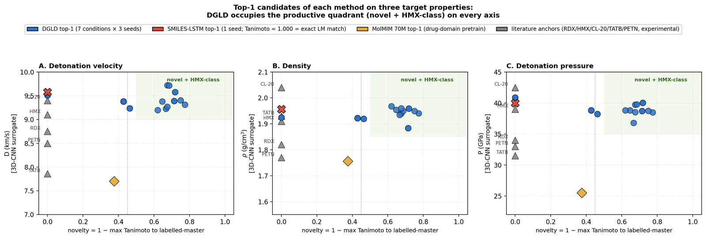
Figure 1. Top-1 candidate of each method plotted against novelty (1 minus max Morgan-FP-2 Tanimoto to the 65 980-row labelled master) on three property axes: detonation velocity \(D\), density \(\rho\), detonation pressure \(P\). DGLD (blue, two 4-condition matrices yielding 7 distinct guidance settings × 3 seeds) is the only family that satisfies novelty > 0.45 and HMX-class properties on every axis. SMILES-LSTM (red X) lands at novelty = 0, an exact training-row reproduction; MolMIM 70 M (gold diamond) is novel but drops to \(D\) = 7.70 km/s. Y-axis values are 3D-CNN-surrogate predictions; DFT-anchored \(D\) is reported in §5.5. Takeaway: DGLD is the only family in the productive quadrant on every property axis.
A general recipe for property-targeted molecular generation under sparse, tier-stratified labels. Domain knowledge gates what enters the diffusion model at training time (a four-tier label-trust hierarchy: only experimental and DFT labels drive the conditional gradient; noisier surrogate-derived labels train the unconditional prior via cfg-dropout) and what exits at inference time (a four-stage pipeline (SMARTS gate, Pareto reranker, semi-empirical triage, first-principles audit): chemist-audited SMARTS rules, semi-empirical electronic-structure triage, and first-principles audit (DFT) minimum confirmation). The framework is domain-agnostic; only the four-stage pipeline changes per domain.
A new sample-time interface for chemistry-class steering. A single noise-conditional score model with one head per target property, plus one per safety axis, is trained once over cached VAE posteriors. Each head's scale acts as an on/off switch over a chemistry class at sample time, with no retraining of the diffusion model. Six heads in our instantiation (viability, synthesis, sensitivity, performance, hazard) cover the multi-objective design problem.
End-to-end first-principles validation on chemotype-rediscovered candidates. The headline lead, trinitro-1,2-isoxazole, sits in the polynitroisoxazole chemotype family known to the energetic-materials literature ([sabatini2018][tang2017]); the closest published fully-substituted ring is Hervé and Roussel's 3,4,5-trinitro-1H-pyrazole ([herve2010]), the isomeric pyrazole. The 3,4,5-trinitro-1,2-isoxazole isomer DGLD proposes here is not located in the open energetic-materials literature (absence from the open literature does not exclude restricted databases or unpublished synthesis attempts); it is absent from PubChem and from our 65 980-row labelled master corpus (max-Tanimoto 0.27); it is predicted at HMX/CL-20-class properties (\(\rho = 2.00\) g/cm3, \(D = 9.56\) km/s, \(P = 40.5\) GPa), confirmed as a real B3LYP/6-31G(d) local minimum with anchor-calibrated DFT properties, and template-reachable in a 4-step disconnection over public USPTO reactions (AiZynthFinder; in-stock caveat in §5.6). 5/5 DFT-validated leads plus anchors are real local minima.
Strong baseline ladder isolates the diffusion + guidance contribution. A no-diffusion SMILES-LSTM trained on the same 326 k corpus produces a top-1 at max Tanimoto = 1.000 to a labelled master row, an exact memorisation rather than a discovery. A 70 M-parameter MolMIM drug-domain pretrained LM produces novel but uncalibrated chemistry (\(D = 7.70\) km/s, sub-HMX). Only DGLD lands in the novel-and-on-target quadrant of Fig 1 (HMX-class \(D, \rho, P\) at Tanimoto < 0.55 to the labelled master).
A reusable lesson when porting classifier guidance from image diffusion to molecules. Image-domain diffusion runs hundreds of denoising steps; the standard guidance recipe scales the gradient signal down at high noise levels (an “anneal”) to keep early steps stable. We use 40 steps, and that anneal silently kills the guidance entirely: the model produces the same molecules regardless of which properties are requested. The fix is a one-line change (disable the anneal); we report the diagnostic protocol that surfaces the bug, since other groups porting classifier guidance to small-step latent diffusion are likely to encounter the same issue.
Open release for direct reuse. Model checkpoints (encoder, two denoisers, two multi-head score models), samplers, post-processing pipelines, and first-principles audit (DFT) scripts are deposited on Zenodo (DOI 10.5281/zenodo.19821953) under CC-BY-4.0. The model accepts arbitrary target property vectors at sample time, and the four-stage framework transfers to other small-molecule design problems with sparse, tier-stratified labels (e.g.\ photovoltaic acceptors, redox-flow electrolytes, opioid-sparing analgesics) by replacing only the four-stage pipeline.
The remainder of the paper is organised as follows. §2 reviews the literature; §3 describes the dataset; §4 describes the methodology; §5 reports experiments and validation; §6 summarises results; §7 discusses limitations; §8 concludes.
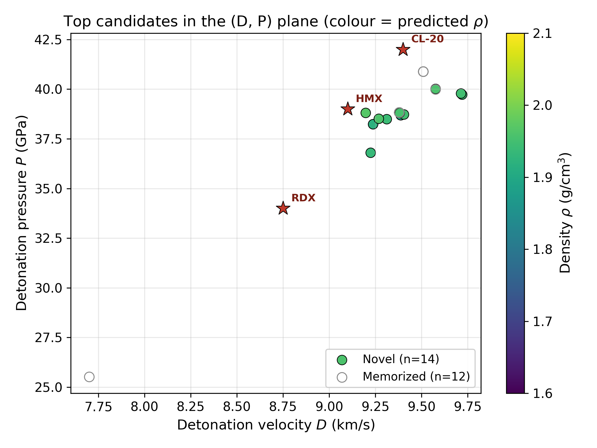
Figure 2. Top-200 generated leads from the pool=40k joint rerank in the (\(D\), \(P\)) plane, plotted twice with two complementary colour encodings. Panel A colours each point by predicted density \(\rho\) (viridis); panel B colours by novelty (1 minus max Morgan-FP-2 Tanimoto to the 65 980-row labelled master, plasma 0–1). Anchors (TNT, RDX, HMX, PETN, CL-20, TATB) and the target lines \(D\!=\!9.5\) km/s, \(P\!=\!40\) GPa appear in both panels. Of the top-200 leads, 41 clear the full HMX-class triple (\(\rho \ge 1.85\) g/cm\(^3\), \(D \ge 9\) km/s, \(P \ge 35\) GPa) AND have novelty \(\ge 0.45\) (Tanimoto \(\le 0.55\) to labelled master); 100 clear \(\rho \ge 1.85\) AND novelty \(\ge 0.45\) on the two-axis cut. The high-density-and-high-novelty corner is the productive-quadrant region the chemistry-credibility gate is designed to reach. Takeaway: separating density and novelty into two panels makes the productive-quadrant trade-off visible; most generated leads are novel but at moderate density, with only a handful clearing both the HMX-class triple and the novelty threshold simultaneously.
2. Related work
DGLD sits at the intersection of three lines of work: molecular generative modelling, diffusion models with classifier-style guidance, and property prediction for energetic materials. The central contribution being positioned is property-targeted molecular generation under tier-stratified labels, with end-to-end first-principles audit (DFT) on energetic chemistry. The literature reviewed below either supplies a building block we adopt (LIMO encoder, classifier-free guidance, FiLM conditioning, GFN2-xTB and PySCF for validation), defines a baseline we compare against (MolMIM, MOSES-style benchmarks), or stakes out a neighbouring problem domain (3D pocket-conditioned diffusion, drug-like generative benchmarking) whose techniques we deliberately do not transplant into the energetic-materials regime. We close the section by stating explicitly which gap DGLD fills.
2.1 Molecular generative models
VAE-based molecular generators learn a continuous latent over SMILES, SELFIES, or molecular graphs and navigate it for property optimisation. Gómez-Bombarelli et al. [gomez2018] introduced the encoder/decoder recipe over SMILES; the Junction-Tree VAE of Jin, Barzilay and Jaakkola [jin2018] moved the latent up to fragment graphs to guarantee chemical validity; CDDD [winter2019] learned the latent by translating between equivalent string representations and showed that the resulting descriptors transfer to property prediction; Mol-CycleGAN [maziarka2020] reframed property optimisation as image-to-image translation between molecule sets. SELFIES [krenn2020] replaced SMILES with a syntactically robust string representation in which every token sequence decodes to a valid graph, and is the representation we adopt at the encoder boundary.
Two more recent latent generators are particularly relevant to DGLD. LIMO [eckmann2022] couples an MLP-VAE over SELFIES with a non-autoregressive decoder, factoring decoding through a per-position categorical so that gradient-based latent optimisation does not have to differentiate through autoregressive sampling; LIMO is the encoder we fine-tune. MolMIM [reidenbach2023] trains a Perceiver-encoder [jaegle2021] mutual-information VAE on billion-scale SMILES and provides a strong no-diffusion baseline against which our latent-diffusion prior is compared.
Language-modelling approaches treat SMILES directly as a string. REINVENT [olivecrona2017] trained a recurrent generator on SMILES and biased it toward design objectives via reinforcement learning; ChemTS [yang2017] combined an RNN prior with Monte-Carlo tree search; MolGPT [bagal2022] applied a GPT-style decoder with property tokens prepended for control. MoLFormer-XL [ross2022] and Chemformer [irwin2022] showed that BERT/T5-style pretraining on hundreds of millions of SMILES yields representations that transfer cleanly to property-prediction tasks. The flow-network approach of Bengio et al. [bengio2021] reformulates non-iterative diverse candidate generation as flow matching over an implicit reward landscape and is conceptually closer to our guided sampling than to autoregressive language modelling. On the graph side, DiGress [vignac2023] performs discrete denoising diffusion directly on molecular graphs, achieving exact validity at the cost of having to re-introduce property conditioning via a separate guidance term.
2.2 Diffusion models and classifier guidance
Denoising diffusion probabilistic models [ho2020] and the score-based formulation of Song and Ermon [song2019], later unified through a stochastic-differential-equation perspective [song2021], define the generative-modelling family that DGLD builds on. Latent diffusion [rombach2022] separates perceptual compression from prior modelling by running the diffusion process in the latent space of a frozen autoencoder, a recipe we transplant from images to molecules: the LIMO encoder fixes the latent geometry, and the diffusion model only has to learn the prior over that latent.
For property control we adopt the classifier-free guidance scheme of Ho and Salimans [ho2022], in which a single denoiser is trained jointly with and without the conditioning signal and the conditioning gradient is reconstructed at sample time:
$$\hat{\epsilon}_{\theta}(z_t, c) \;=\; \epsilon_{\theta}(z_t, \emptyset) \;+\; w \cdot \big(\epsilon_{\theta}(z_t, c) - \epsilon_{\theta}(z_t, \emptyset)\big).$$
Classifier-free guidance avoids the separately-trained property predictor required by its noise-conditional ancestor, classifier guidance [dhariwal2021]. DGLD combines both regimes: classifier-free guidance over the four detonation targets, plus a small noise-conditional multi-head score model whose per-head gradients are added at every diffusion step (§4.4). Conditioning is injected into the residual blocks of the denoiser through FiLM-style affine feature-wise modulation [perez2018], the standard mechanism for property conditioning in image and molecular diffusion alike.
2.3 3D and target-conditioned molecular diffusion
A parallel line of work runs diffusion directly on 3D molecular geometries rather than on a learned latent. Equivariant Diffusion (EDM) [hoogeboom2022] diffuses atom positions and types under SE(3)-equivariant networks, providing the architectural template for subsequent target-aware variants. DiffSBDD [schneuing2022] and TargetDiff [guan2023] condition the diffusion process on a 3D protein pocket; Pocket2Mol [peng2022] samples atoms autoregressively inside the pocket; DiffDock [corso2023] recasts molecular docking itself as a generative diffusion problem over translation, rotation, and torsion. MolDiff [peng2023] addresses the atom-bond inconsistency that arises when atom positions and bond types are diffused independently.
DGLD differs from this family in two respects. First, the conditioning signal is a continuous physical property of the molecule itself (density, heat of formation, detonation velocity, detonation pressure), not the geometry of an external receptor; latent-space diffusion is the more natural fit and avoids 3D-conformer preprocessing at every training step. Second, the energetic-materials regime imposes a tier-stratified label-trust structure (computed K-J labels vs. measured detonation properties) that has no analogue in pocket-based drug design and that drives the conditioning-mask design of §4.
2.4 Energetic-materials property prediction
The Kamlet–Jacobs equations [kamlet1968] remain the closed-form workhorse for fast detonation-property estimates of CHNO explosives and supply our Tier C labels; they are regime-limited and under-predict in the high-nitrogen tail (§5.5, Appendix D). Casey et al. [casey2020] train 3D convolutional networks on electronic-structure-derived volumetric inputs to predict detonation properties from first principles; we use an ensemble in this family as our fast post-rerank scorer. Uni-Mol [zhou2023] provides a 3D pre-training backbone whose representations transfer to organic property prediction and which the smoke-model ensemble draws on. Elton et al. [elton2018] showed that simple feature-engineered ML pipelines match Kamlet–Jacobs accuracy across a broad CHNO set, establishing the property-prediction baseline that any generative work must beat. The pre-experimental screening recipe used in §5.5, DFT-derived \(\rho\) and HOF, calibrated against a small set of reference explosives, then plugged into the Kamlet–Jacobs equations for \(D\) and \(P\), is a standard pattern in computational energetic-materials chemistry, applied across the field in different functional / basis / anchor combinations: Politzer and Murray [politzer2014] develop the BDE-anchored sensitivity correlations we adopt for the \(h_{50}\) head; Mathieu [mathieu2017] reviews the systematic-bias bands that motivate anchor-calibration. Specialised codes EXPLO5 [suceska2018] and Cheetah [fried2014] replace the closed-form K-J step with a thermochemical-equilibrium Chapman–Jouguet solver and a covolume EOS, and remain the absolute-value-grade reference; we use K-J as the closed-form approximation and acknowledge the absolute-value gap explicitly (§5.5).
Sensitivity prediction is the harder discriminative half of the field. Nefati, Cense and Legendre [nefati1996] trained an early neural network on impact-sensitivity data; Mathieu [mathieu2017] reviewed the theoretical relationships between molecular structure, detonation performance, and sensitivity; Huang and Massa [huang2021] applied modern ML to the performance/stability trade-off, showing that h50 impact-height is learnable from descriptors and provides the regression target our hazard head approximates. The synthesis-chemistry review of Klapötke [klapotke2017] codifies the qualitative fragment priors (nitrogen-rich heterocycles, nitramines, azides) on which our motif-augmented training set is built.
2.5 Energetic-materials generative ML and synthesisability
Generative work targeting the energetic-materials high-energy tail is comparatively recent and is constrained by the small size of the labelled corpus. The closest spiritual analogue to DGLD is the constrained Bayesian optimisation in a VAE latent of Griffiths and Hernández-Lobato [griffiths2020], which navigates a learned molecular prior under chemistry constraints; classifier-free latent diffusion subsumes this recipe in a single end-to-end model whose gradient comes from the score function rather than from a separately-trained acquisition oracle. The performance/stability balancing study of Huang et al. [huang2021], already cited above for sensitivity prediction, is the property-prediction-side counterpart of the multi-head trade-off DGLD enforces at generation time. The bulk of the prior ML work on energetic materials has been discriminative; the four-tier label hierarchy and tier-stratified conditioning-mask of §3 and §4 are designed precisely to make property-targeted generation viable in this small-and-noisy-label regime.
2.6 General-purpose property predictors
Outside the energetic-materials niche, several general-purpose molecular property predictors set the methodological context. Chemprop / D-MPNN [yang2019] remains a strong message-passing-graph default; SchNet [schutt2018] introduced continuous-filter convolutions for atomistic systems and achieves DFT-level accuracy on energy and force predictions; OrbNet [qiao2020] uses symmetry-adapted atomic-orbital features to predict quantum-chemical observables at semi-empirical cost. We do not use these networks directly: the smoke-model 3D-CNN ensemble is trained against detonation outputs and is in-distribution for the energetic-materials task, while these graph and quantum-aware models would have to be re-fit to detonation labels before they could substitute for it. They define the broader prediction-quality envelope against which the smoke-model ensemble's accuracy on CHNO chemistry should be read.
2.7 Distribution-learning benchmarks and synthesisability metrics
The MOSES [polykovskiy2020] and GuacaMol [brown2019] benchmarks have standardised the evaluation of molecular generators on validity, novelty, uniqueness, and similarity-to-training metrics. The Fréchet ChemNet Distance [preuer2018] reports distributional similarity between generated and reference sets in a learned chemical-feature space and provides a pretrained-feature analogue of FID for chemistry. The chemical-space project of Reymond [reymond2015], with its enumerated GDB-13 and GDB-17 reference sets, bounds how much of small-molecule space remains untouched by generative models and contextualises any novelty claim. We adopt MOSES-style metrics in Appendix E.11 and treat FCD as a chemistry-class-transfer signal rather than a within-domain quality metric, since the ChemNet feature extractor is trained on drug-like ZINC+PubChem chemistry.
Synthesisability is a separate concern. The SA score of Ertl and Schuffenhauer [ertl2009] penalises uncommon ring fusions and rare fragments and is a fast, well-calibrated bound on accessibility; the SCScore of Coley et al. [coley2018] learns a complexity proxy from a reaction corpus and complements SA by rewarding fragments that appear as reaction products. We apply both as hard caps in the rerank pipeline. Tanimoto similarity [rogers1960] on Morgan fingerprints provides a simple, well-understood novelty bound against the training set; we use a window (0.20, 0.55) to keep candidates close enough to known chemistry to be plausible but far enough to count as new.
2.8 Validation tooling
The validation half of the DGLD pipeline relies on three external tools that are not part of the generative-modelling literature. GFN2-xTB [bannwarth2019] is the semi-empirical tight-binding method we use for sample-time HOMO–LUMO gap triage on top leads (§5.4, §5.3.4); it runs in seconds per molecule on CPU, is well-calibrated for organic CHNO, and provides a stability proxy that is independent of the 3D-CNN surrogate's training distribution. The gpu4pyscf bindings on top of the PySCF framework [sun2020] supply our DFT pipeline (§5.5, Appendix D). GPU offloading reduces a single B3LYP/6-31G(d) opt + Hessian for a 15–25-atom CHNO molecule from hours on CPU to under one hour on a single A100, which is what makes per-lead first-principles validation budget-feasible. AiZynthFinder [genheden2020] performs the retrosynthetic plausibility check of §5.6 via Monte-Carlo tree search over a USPTO template set against a ZINC in-stock catalog; we treat it as a positive-only check, since an empty result reflects template-database scope rather than unsynthesisability. The accuracy expected of any DFT functional we use is calibrated by the GMTKN55 benchmark suite of Goerigk et al. [goerigk2017], which evaluates the density-functional zoo over a broad cross-section of main-group thermochemistry, kinetics and noncovalent interactions and grounds our choice of functional and basis.
3. Dataset
We assemble the training data by collecting molecules from several public sources that differ in both reliability and chemical scope. A small experimental core carries detonation properties measured in the laboratory; a larger DFT-quality slice carries energies and densities from first-principles simulation; a wider Kamlet–Jacobs-derived layer carries closed-form estimates from quoted density and heat of formation; and a model-derived majority carries surrogate predictions from a 3D-CNN ensemble trained on the union of the higher tiers. Some sources are restricted to energetic CHNO and CHNOClF chemistry (a labelled master of \(\sim 66\) k canonical SMILES with at least one measured property and a motif-augmented expansion that systematically substitutes nitro / nitramine / azide / tetrazole groups onto labelled scaffolds); others draw from broader chemistry corpora (an unlabelled energetic SMILES dump of \(\sim 380\) k from the same chemical domain) that the diffusion model uses only to learn the unconditional prior. Every row is canonicalised to a single RDKit canonical SMILES, deduplicated across sources, and tagged with a trust tier; each property label is then used according to its reliability via the conditioning-mask recipe of §3.1. After cross-source deduplication and token-length filtering, the merged pretraining pool comprises \(\sim 694\) k unique molecules, of which \(\sim 66\) k carry at least one property label. The complete source provenance (per-source row counts, citations, license terms, role in the four-tier hierarchy), the canonicalisation and tokenisation pipeline, and the high-tail oversampling ratios used during training are documented in Appendix A.1 / D. Joint property distributions and per-property histograms over the labelled corpus are shown in Fig 3(a) and Fig 3(b); the label-tier composition (Fig 3(c)) sits alongside the four-tier table in §3.1; atom-composition statistics over a 30k subsample are shown in Fig A.1.
Figure 3. Properties of the labelled corpus. (a) Joint distribution of density and detonation velocity, with literature anchors overlaid. The bulk of the labelled distribution sits at \(\rho<1.85\), \(D<8.5\) km/s; the high-tail above \(D=9\) km/s contains only a handful of compounds (CL-20, HMX, RDX-class). Generation must extrapolate into this tail.
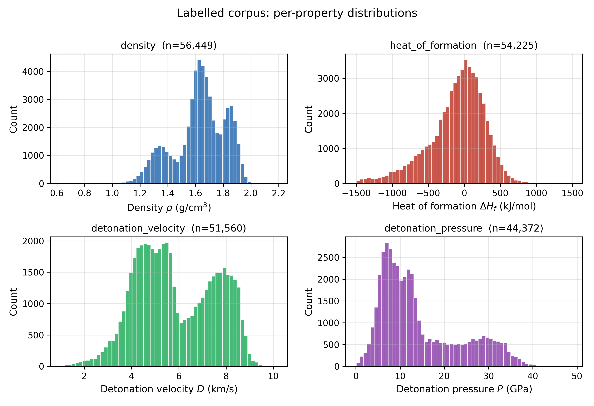
(b) Per-property histograms over the labelled corpus. Density and detonation velocity are sharply peaked; HOF has a heavy tail that the high-tail-oversampling recipe (§3.3) is designed to amplify during conditioning.
3.1 Four-tier label hierarchy
Available property labels in the energetic-materials literature span four orders of reliability, from a small core of experimental measurements to a large majority of model-derived estimates. A naive concatenation would let the noisiest tier dominate the conditional gradient and degrade calibration in the high-property tail; discarding the noisier tiers would throw away most of the training signal. We resolve this by annotating each property label with a trust tier and gating the conditional gradient accordingly: only Tier-A and Tier-B rows participate in the conditional signal, while Tier-C and Tier-D rows train the unconditional prior via classifier-free-guidance dropout (§4.2). Each label per row carries one of the following tiers:
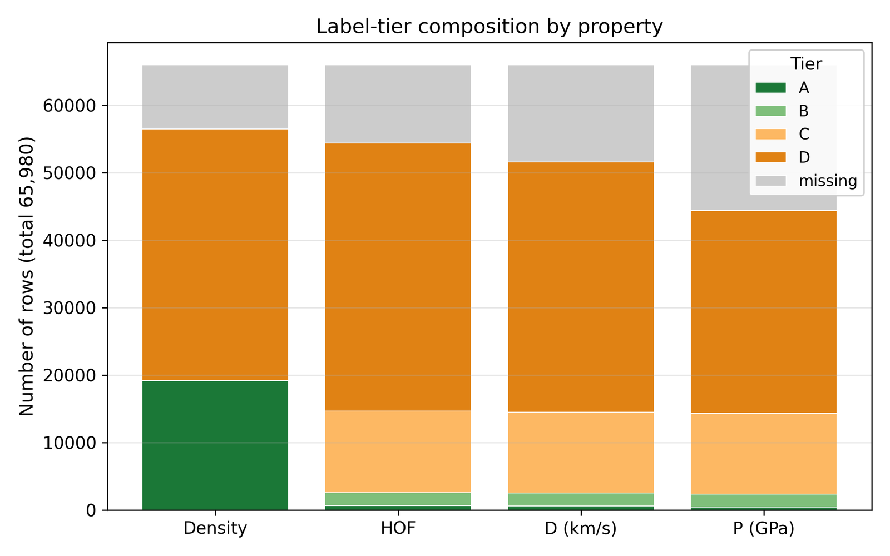
Tier
Source
~ rows
Trusted for conditioning?
A
Experimental measurement (literature)
~3 000
yes
B
DFT-derived (B3LYP/6-31G* heat of formation; experimentally-anchored density)
~9 000
yes
C
Kamlet–Jacobs derived from quoted density & HOF (regime-limited: reliable for carbon-deficient CHNO with \(2a + b/2 \ge d \ge b/2\); under-predicts \(D\) for high-N low-H compounds where the assumed gas-product distribution is wrong)
~25 000
no (mask out)
D
3D-CNN smoke-model surrogate
~30 000
no (mask out)
Figure 3(c). Label-tier composition by property (top), and the four-tier label hierarchy (bottom). Tiers A and B (experimental and DFT-derived) drive the conditional gradient; Tiers C and D (Kamlet–Jacobs and 3D-CNN surrogate) dominate by volume but are masked out of the conditional signal and instead train the unconditional prior via classifier-free-guidance dropout (§4.2). Approximate row counts and trust verdicts are listed in the table. Takeaway: generation must extrapolate into a high-tail with only a handful of trustworthy training labels; trust-gating decouples corpus volume from conditional-signal quality.
The denoiser conditional gradient fires only on Tier-A and Tier-B rows; Tier-C and Tier-D rows train the unconditional prior via classifier-free-guidance dropout (§4.2). This recipe lets the full corpus shape the marginal density of the generative model without letting noisy labels contaminate the conditional gradient.
3.2 Latent encoding and training-time sampling
We canonicalise all SMILES with RDKit [22a], convert to SELFIES, tokenise to the LIMO alphabet, and pass through the LIMO encoder once to obtain a deterministic latent mean \(\mu \in \mathbb{R}^{1024}\) per row. The encoder posterior variance is discarded; the diffusion model treats each cached row as a deterministic anchor in latent space rather than as a sample from the posterior. The cached tensor stores \(\mu\) plus a property matrix, a tier matrix, a per-row trust mask, and per-property normalisation statistics; the denoiser never re-encodes. The labelled detonation-velocity distribution is sharply peaked around 7–8 km/s, so during training Tier-A/B rows above the 90th percentile are oversampled by 5×–10×; this asymmetric high-tail oversampling raises the mean predicted velocity of the top leads by 0.4 km/s relative to a uniform-sampling control. Tokenisation, alphabet size, the per-source preprocessing pipeline, and the oversampling ablation are in Appendix A.2 and D.4.
4. Methodology
DGLD is a four-stage pipeline (Fig 4): a fine-tuned LIMO VAE encodes every molecule once into a 1024-d Gaussian latent; a conditional DDPM denoiser, trained on the cached latents, generates new latent samples; a multi-head score model (six heads: viability, SA, SC, sensitivity, performance, hazard) provides per-step gradient guidance during sampling; and a chemistry-credibility re-ranker filters and orders the decoded candidates. Encoding is run once and cached, so all generative-model training and sampling happens in latent space; the VAE decoder is invoked only at the end to read the candidates back as SMILES. The conditional gradient is restricted to Tier-A and Tier-B rows (experimental and DFT labels), while Tier-C and Tier-D rows train the unconditional prior via classifier-free-guidance dropout, letting the full corpus shape the marginal density without contaminating the conditional gradient (§3.1, §4.2).
The remainder of this section details each stage: §4.1 LIMO fine-tuning on the energetics corpus; §4.2 the conditional latent diffusion training objective and classifier-free-guidance dropout; §4.3 the small-ensemble denoiser; §4.4 the multi-objective classifier-guidance scheme with per-head scales and the alpha-anneal schedule; and §4.5 the gated re-ranking pipeline that turns a raw candidate pool into a Pareto front. Per-component hyperparameter values are tabulated in Appendix C; per-experiment compute budgets and version codes are in Appendix E (per-experiment costs in Appendix E.2).
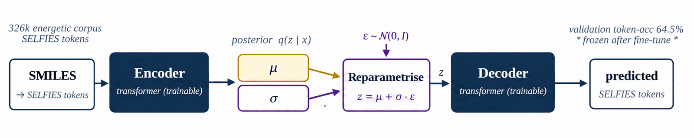
Figure 4(a).LIMO VAE fine-tuning (run once; encoder frozen after this stage). The encoder is a 4-layer Linear–BN–ReLU MLP mapping a (B, 72) SELFIES-token tensor through a 64-d embedding to a (B, 1024) Gaussian latent (\(\mu, \sigma\)); the decoder mirrors the encoder and produces a parallel (B, 72, 108) log-probability tensor (no autoregression). Latent dimension 1024; total \(\sim\)34 M parameters (full layer chain in Table C.1). Fine-tuned \(\sim\)8.5k steps on the 326k energetic corpus under the standard ELBO with \(\beta = 0.01\), free-bits disabled; validation token-accuracy 64.5%. Property labels do not enter this loss; LIMO is property-agnostic. Asymmetric high-tail oversampling (Tier-A/B rows above the 90th-percentile detonation-velocity bin, oversampled 5×–10×, §3.2) is applied downstream at denoiser training (Fig 4(b)), not here. After fine-tuning the cached deterministic mean \(\mu\) is the \(z_0\) consumed by 4(b) (denoiser training) and 4(e1)–4(e2) (score-model training).
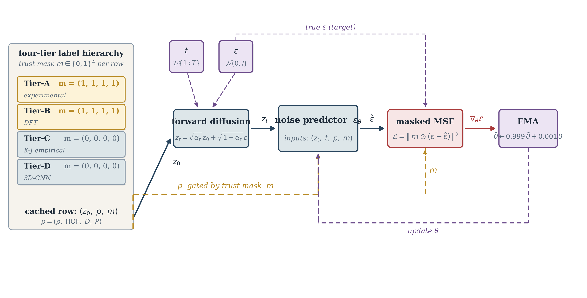
Figure 4(b).Per-step denoiser update with tier-gated conditioning. A cached row carries three per-property dim-4 quantities (one slot per \((\rho, \text{HOF}, D, P)\)): the eligibility indicator \(c \in \{0,1\}^4\) (1 iff property \(k\) is Tier-A/B and present); the tier weight \(w \in [0,1]^4\) (graded: Tier-A \(\approx 1.0\), B \(\approx 0.7\), C \(\approx 0.3\), D \(\approx 0.1\)); and the conditioning mask \(m \in \{0,1\}^4\) sampled fresh each training step as a random subset of the eligible properties (size drawn from a categorical, optionally weighted by \(w\); independently zeroed by property-dropout 0.30; with cfg-dropout 0.10 the whole row goes unconditional). Stochastic samplers draw \(t \sim \mathcal{U}\{1{:}T\}\) and \(\varepsilon \sim \mathcal{N}(0, I)\); forward diffusion forms \(z_t = \sqrt{\bar\alpha_t}\,z_0 + \sqrt{1-\bar\alpha_t}\,\varepsilon\); the FiLM-ResNet noise predictor \(\varepsilon_\theta(z_t, t, p, m)\) consumes the property vector \(p\) gated through FiLM by \(m\) (so a property with \(m_k=0\) is invisible). The training loss is full-latent-dim plain MSE \(\mathcal{L}_i = \tfrac{1}{1024} \Vert \varepsilon_i - \hat\varepsilon_i \Vert^2\); the mask does not multiply the noise loss directly. An optional per-row weight \(\omega_i = \alpha + (1-\alpha)\,\mathrm{mean}(w_i \odot m_i)\) scales row \(i\)'s gradient toward the more-trusted conditioning (default \(\alpha = 1.0\) reduces this to plain MSE). EMA-averaged weights feed back into \(\varepsilon_\theta\). Optimiser, learning-rate schedule, and full hyperparameter table in Table C.1.
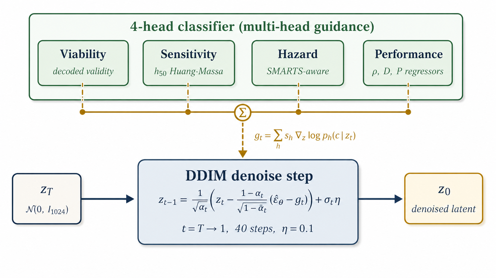
Figure 4(c).Sampling: DDIM denoise with multi-head guidance. A latent \(z_T\sim\mathcal{N}(0, I_{1024})\) is denoised over \(t=T\to1\) (40 DDIM steps). Four score-model guidance heads (viability via Random Forest on \(z\); sensitivity via the \(h_{50}\) head trained on Huang-Massa [huang2021]; performance via \(\rho/D/P\) heads; hazard via a SMARTS-aware learned head) bundle into a single guidance bus \(\sum_h s_h\,\nabla_{z_t}\log p_h(c\mid z_t)\) that adjusts \(\varepsilon_\theta\) at every step. The bus injects one combined gradient into DDIM, yielding a denoised latent \(z_0\); per-head scales \(s_h\) are tabulated in Appendix C.
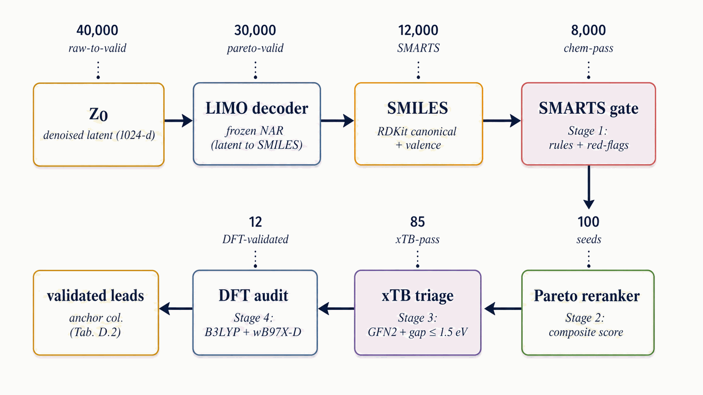
Figure 4(d).Post-sampling four-stage pipeline. The denoised latent \(z_0\) decodes via frozen LIMO into a SMILES pool that passes through Stage 1 SMARTS gate (rules + redflags, §4.5), Stage 2 Pareto reranker (scaffold-aware composite, §4.5), Stage 3 xTB triage (GFN2 + HOMO–LUMO \(\geq 1.5\) eV, §5.4), and Stage 4 DFT audit (B3LYP + \(\omega\)B97X-D3BJ + 6-anchor calibration + Kamlet–Jacobs, §5.5; Table D.2). Funnel-narrowing arrows annotate survivors per stage (illustrative): 40k \(\to\) 8k chem-pass \(\to\) 100 \(\to\) 12 DFT-validated. Stages 1–2 are millisecond-cheap, Stages 3–4 physics-grade.
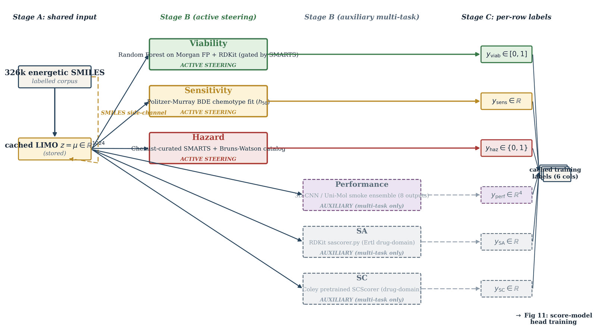
Figure 4(e1).Data labeling: four offline label-source pipelines supervise the score-model heads (runs ONCE per corpus). The labelled-master SMILES (and its cached LIMO latent \(z\), which the heads will consume at training time) is fed to four independent label generators: a Random Forest teacher on Morgan FP + RDKit descriptors (\(y_{\text{viab}}\)); a Politzer–Murray BDE chemotype-class linear fit (\(y_{\text{sens}}\)); a SMARTS + Bruns–Watson rules catalog (\(y_{\text{haz}}\)); and a 3D-CNN / Uni-Mol smoke-model ensemble on conformer voxel grids (\(y_{\text{perf}} \in \mathbb{R}^4\) = (\(\rho, D, P\), HOF)). The four label-source pipelines take SMILES-derived features (or chemotype rules) and do not consume the LIMO latent \(z\); \(z\) is cached separately for 4(e2). Architectures, training subsets, and validation metrics are in Table C.1.
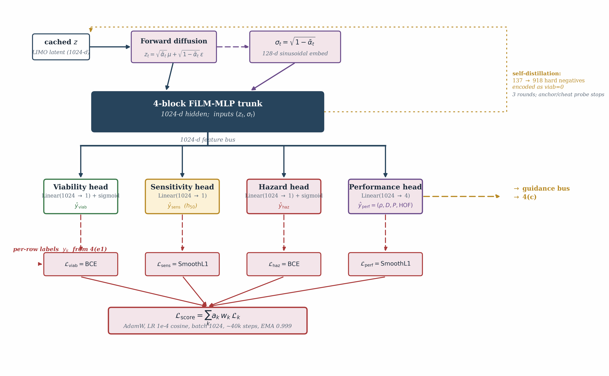
Figure 4(e2).Score-model head training (offline; consumes labels from 4(e1)). Cached \(\mu \to\) Forward diffusion \(z_t = \sqrt{\bar\alpha_t}\,\mu + \sqrt{1-\bar\alpha_t}\,\varepsilon\) with the same \(\{\bar\alpha_t\}\) schedule as the denoiser; \(\sigma_t = \sqrt{1-\bar\alpha_t}\) embedded into a 128-d sinusoidal token. Both feed the single shared 4-block FiLM-MLP trunk (1024-d hidden); the trunk's 1024-d feature bus fans into four NN heads: Viability (Linear(1024 \(\to\) 1) sigmoid), Sensitivity (Linear(1024 \(\to\) 1) regression), Hazard (Linear(1024 \(\to\) 1) sigmoid), Performance (Linear(1024 \(\to\) 4) regression on \(\rho, D, P\), HOF). Per-head losses (BCE for sigmoid heads, smooth-L1 for regressors) are summed into \(\mathcal{L}_{\text{score}} = \sum_k m_k\,w_k\,\mathcal{L}_k\); optimised with AdamW (peak LR \(10^{-4}\), cosine, batch 1024, \(\sim\)40k steps; EMA decay 0.999). The right margin shows the hard-negative self-distillation feedback: 137 → 918 mined cheats encoded as \(y_{\text{viab}} = 0\) over 3 rounds (Appendix C.1). The trained heads' gradients combine on the guidance bus and are consumed by 4(c) at sample time. Takeaway: the score model is one shared trunk with four heads, and at sample time it consumes \((z, \sigma_t)\); the heterogeneous label sources of 4(e1) do not run during sampling.
4.1 LIMO fine-tuning
We start from the pretrained LIMO checkpoint distributed with [1]. The encoder maps a (B, 72) SELFIES-token tensor through a 64-dim embedding and a four-layer MLP (Linear(72·64→2000)–ReLU–Linear(2000→1000)–BN–ReLU–Linear(1000→1000)–BN–ReLU–Linear(1000→2·1024)) to a (B, 1024) Gaussian latent (the final 2·1024 head packs μ and log σ2); the decoder mirrors this with Linear(1024→1000)–BN–ReLU–Linear(1000→1000)–BN–ReLU–Linear(1000→2000)–ReLU–Linear(2000→72·108) and produces a (B, 72, 108) log-probability tensor in parallel (no autoregression). Layer-by-layer widths and parameter counts are in Table C.1. We fine-tune all parameters for ~8.5k steps on 326 k energetic-biased SMILES with the standard ELBO,
$$\mathcal{L}(x) \;=\; -\mathbb{E}_{q(z|x)}[\log p(x|z)] \;+\; \beta \cdot \mathrm{KL}(q(z|x) \,\|\, \mathcal{N}(0,I)),$$
with \(\beta=0.01\) and free-bits clipping disabled (free-bits did not improve self-consistency in our setting). After fine-tuning, validation token-accuracy is 64.5 %. The latent posterior is concentrated: \(\|\mu\|\approx 8\) on average, well below the \(\sqrt{1024}\approx 32\) expected of \(\mathcal{N}(0,I)\), and we discuss in §6 how this mismatch affects diffusion-time decoding.
4.2 Conditional latent diffusion
The denoiser \(\epsilon_{\theta}(z_t, t, c, m)\) is a 44.6 M-parameter FiLM-modulated ResNet over \(z_t \in \mathbb{R}^{1024}\) with 8 residual blocks of inner width 2048 (per-block: LayerNorm–Linear(1024→2048)–FiLM(γ,β from cond)–SiLU–Linear(2048→1024) with a residual add), sinusoidal time embedding (\(d_t=256\)) and a property-conditioner that combines a sinusoidal value embedding (\(d_c=64\)) with the trust-mask \(m\in\{0,1\}^4\) (full hyperparameters in Table C.1). The forward process is the standard variance-preserving DDPM [18]:
$$z_t \;=\; \sqrt{\bar\alpha_t}\,z_0 \;+\; \sqrt{1-\bar\alpha_t}\,\epsilon, \quad \epsilon \sim \mathcal{N}(0,I), \quad t\in\{1,\ldots,T=1000\}.$$
The training loss is the masked MSE between predicted and true noise, dropping conditioning with probability 0.10 to fit the unconditional branch. Training is 20 epochs, batch 128, AdamW with peak LR \(10^{-4}\), cosine decay, EMA decay 0.999.
At sample time we use the standard guided-sampling step,
$$\hat\epsilon_{\theta}(z_t, c) \;=\; \epsilon_{\theta}(z_t, t, \emptyset) \;+\; w\,\big(\epsilon_{\theta}(z_t, t, c) - \epsilon_{\theta}(z_t, t, \emptyset)\big),$$
with guidance scale \(w\in\{5,7,9\}\). Pushing \(w\) higher concentrates the empirical sample distribution near the targets but reduces the diversity of returned candidates after filtering, as Figure 5 shows.
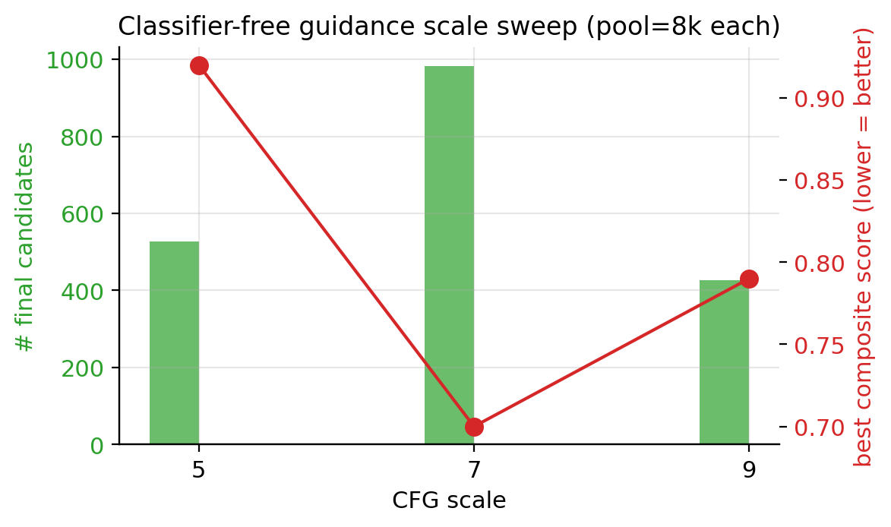
Figure 5. Classifier-free guidance scale \(w\) sweep at pool=8 000 per setting, ranked by the two-denoiser ensemble. \(w=7\) is the empirical sweet spot: more candidates survive filtering than at \(w=5\), without the tight-mode collapse seen at \(w=9\). Takeaway: CFG scale 7 maximises post-filter yield without collapsing the sample distribution.
4.3 Denoiser ensemble
The production sampler ensembles two complementary denoisers trained with different oversampling schedules. v4 applies Tier-A/B-only conditioning with +5× high-tail oversampling (top-decile values), weighted_mask=true, and property-dropout 0.30; it excels at meeting the density, detonation-velocity, and detonation-pressure targets simultaneously. v3 uses asymmetric high-tail oversampling restricted to Tier-A/B, factor 5×, focused on the heat-of-formation tail. Sampling each independently and merging candidate pools (followed by canonical-SMILES deduplication) recovers candidates that neither model alone would produce: v3 contributes the majority of high-HOF leads, while v4 contributes the bulk of high-density / high-pressure leads.
4.4 Multi-head score model: training and guidance
Classifier-free guidance steers generation toward target property values, but it does not directly enforce the chemistry priors that distinguish a viable energetic from a model-cheat polynitro fragment. We add a second guidance signal at sample time, in the spirit of classifier guidance [15a], but multi-objective. The signal is supplied by a single shared multi-head score model trained offline on the cached LIMO latents. The remainder of this subsection describes (i) data preparation, (ii) per-head label sources, (iii) architecture, (iv) the training objective and schedule, and (v) the sample-time gradient that 4(c) consumes; offline training is depicted in Fig 4(e).
(i) Data preparation. The score model is trained on cached noised LIMO latents, not on raw \(\mu\). At sample time the model is consumed at every DDIM step \(t = T \to 1\), so it must produce a useful guidance gradient at every noise level \(\sigma_t = \sqrt{1-\bar\alpha_t}\), not just at \(\sigma = 0\); training only on clean \(\mu\) would leave it untrained on the high-noise inputs it is queried with at the start of each sampling trajectory. We therefore draw a fresh \(t\sim\mathcal{U}\{1{:}T\}\) and \(\varepsilon\sim\mathcal{N}(0, I)\) per training step and form \(z_t = \sqrt{\bar\alpha_t}\,\mu + \sqrt{1-\bar\alpha_t}\,\varepsilon\) with the same \(\{\bar\alpha_t\}\) schedule as the denoiser (T=1000, cosine). Each batch consists of \((z_t, \sigma_t, y_1, \dots, y_6, m)\) tuples, where \(\sigma_t\) is the noise level fed into the FiLM conditioner (so the same trunk produces different gradients at different noise levels) and \(m \in \{0, 1\}^6\) is the per-head trust mask (1 if the head's label is available for this row, 0 otherwise). Hard-negative latents from the §4.4(iv) self-distillation loop (918 mined cheats encoded through LIMO; Appendix C.1) are mixed in at a 1:30 ratio against the corpus rows. The training objective is therefore the same noise-conditional score-matching pattern Dhariwal & Nichol [15a] use for image-domain classifier guidance.
(ii) Per-head training labels. Six heads, six independent label sources, all evaluated once over the labelled corpus before score-model training begins; the score model itself sees only \((z_t, \sigma_t)\) at training and inference time.
Viability (sigmoid). Target \(y_{\text{viab}}(z) = \mathbf{1}[\text{redflags.pass}(\text{decode}(z))] \cdot P_{\text{RF}}(\text{viable}\mid \text{decode}(z))\), where \(P_{\text{RF}}\) is a Random-Forest classifier on Morgan FP + RDKit descriptors (Table C.1; validation AUC quoted there). Multiplying by the SMARTS-screen pass/fail floor is essential, or the score model maps gem-dinitro 4-rings and polyazene chains to the same latent regions as RDX.
Sensitivity (regression on \(h_{50}\)). Default variant: a hand-coded heuristic of nitro density, open-chain N-NO2 count, and small-skeleton penalties (§4.5), z-scored. Literature-grounded variant: 306 (SMILES, observed \(h_{50}\)) pairs from the Huang & Massa compilation [58a], fit through the Politzer–Murray BDE chemotype-class linear fit \(h_{50} = 1.93\cdot\text{BDE} - 52.4\). Both variants are described in Appendix C.2; the literature-grounded variant is the drop-in replacement used at sample time.
Hazard (sigmoid). Targets are derived from the chemist-curated SMARTS hazard catalog plus the Bruns–Watson demerit list (§4.5 + Appendix E.7).
Performance (regression on 4-vector \(\rho/D/P/\text{HOF}\)). Targets are the labelled-corpus values when present (Tier-A/B), otherwise the 3D-CNN/Uni-Mol smoke-model ensemble's prediction (Tier-C/D rows). The same Tier-A/B-only conditional mask the denoiser uses gates the high-trust rows; the 3D-CNN labels supply soft signal for unlabelled chemistry.
SA, SC (regression scalars). Targets are RDKit's synthetic-accessibility score and Coley's SCScore, both standard.
The label-source models are NOT run at sample time. They run once per corpus to produce per-row labels; the score model itself takes only \((z_t, \sigma_t)\) at every diffusion step.
(iii) Architecture. The score model is a single shared 4-block FiLM-conditioned MLP with a 1024-d trunk and six heads branching off the trunk. Input: latent \(z \in \mathbb{R}^{1024}\) and noise level \(\sigma\) embedded into a 128-d sinusoidal token via a 2-layer MLP. Each FiLM block is Linear(1024→1024)–LayerNorm–FiLM(\sigma\text{-emb} \rarr; (γ, β)\) over 1024)–SiLU–Dropout(0.1) with a residual add. The six heads each apply Linear(1024→256)–SiLU–Linear(256→\(d_k\)) with \(d_k = 1\) for viability, SA, SC, sensitivity, and hazard (sigmoid for the two classifiers; raw scalar for the three regressors), and \(d_k = 4\) for performance (\(\rho/D/P/\text{HOF}\) regressors). Full layer-by-layer hyperparameters and parameter counts are in Table C.1. The denoiser is frozen during score-model training; the LIMO encoder is frozen throughout.
(iv) Training objective and schedule. The total loss is a per-head sum, gated by the trust mask \(m\):
$$\mathcal{L}_{\text{score}} = \sum_{k=1}^{6} m_k \cdot w_k \cdot \mathcal{L}_k\bigl(\hat y_k(z_t, \sigma_t),\ y_k\bigr),$$
where \(\mathcal{L}_k\) is binary cross-entropy for the sigmoid heads (viability, hazard) and smooth-L1 for the regression heads (sensitivity, performance, SA, SC), and \(w_k\) are static head weights chosen so each loss term sits at \(\mathcal{O}(1)\) at convergence (\(w_{\text{viab}}=1.0\), \(w_{\text{sens}}=1.0\), \(w_{\text{hazard}}=1.0\), \(w_{\text{perf}}=0.5\), \(w_{\text{SA}}=w_{\text{SC}}=0.25\); ablation in Appendix C.3). Optimiser AdamW, peak LR \(10^{-4}\), cosine decay, weight decay \(10^{-4}\), batch size 1024, \(\sim\)40 k steps with EMA decay 0.999. Each round, the model's gated-but-failing tail (small-skeleton polynitro, polyazene chains, gem-tetranitro on C2–C3) is mined as hard-negative latents labelled viab=0 and folded into the next round's training set; we run three rounds of self-distillation (137 negatives \rarr 918 negatives) and stop when the held-out anchor/cheat probe (7 anchors, 5 cheats) shows anchors at 0.86–0.99 and cheats demoted to 0.12–0.84. Without this step the score model is non-discriminative on held-out cheats; with it, the gradient through the viability head reliably steers off polynitro-on-small-skeleton chemistry. Full self-distillation protocol in Appendix C.1.
(v) Sample-time gradient. At each DDIM step \(t\) with \(\bar\alpha_t\), define \(\sigma_t=\sqrt{1-\bar\alpha_t}\). The guided noise estimate is
$$\hat\epsilon = \epsilon_\theta^{\text{cfg}}(z_t, t, c) \;-\; \sigma_t \sum_{k\in\{\text{viab},\text{sens},\text{SA},\text{hazard}\}} s_k\,\nabla_{z_t}\,\mathcal{L}_k\big(z_t,\sigma_t\big),$$
where \(\epsilon_\theta^{\text{cfg}}\) is the standard classifier-free-guidance noise estimate over the frozen denoisers, and the per-head losses are \(-\log P_\text{viab}\) (ascend), \(\mathrm{sens}_z\) (descend), \(\mathrm{SA}_z\) (descend), and \(-\log(1-P_\text{hazard})\) (descend hazard). The autograd gradient is taken with respect to \(z_t\) at every diffusion step. Default scales are \(s_{\text{viab}}=1.0\), \(s_{\text{sens}}=0.3\), \(s_{\text{hazard}}=1.0\), \(s_{\text{SA}}=0\); these per-head scales act as on/off switches over chemistry classes (the cluster pattern of Appendix E.6).
Role of the viability head and the hazard head. The viability head is the gradient signal that pulls samples away from chem-cheating regions: its training labels combine the SMARTS red-flag screen with a Random-Forest viability classifier so that the descent direction reliably steers off polynitro-on-small-skeleton chemistry. The hazard head can additionally be applied at rerank time rather than (or in addition to) sample time: encoding each candidate SMILES through the LIMO encoder and scoring its hazard-head sigmoid output gives a soft re-rank weight that is independent of the chemist-curated SMARTS catalog.
Configuration caveat for small-step latent diffusion. The standard image-domain classifier-guidance recipe combines an alpha-anneal \(\text{anneal}(t)=\max(0, 1-\sigma_t/\sigma_{\max})\) with a tight per-row gradient-norm clamp at 5.0. In our small-step (\(n=40\)), frozen-decoder regime this zeros the gradient at high noise levels and silently mutes the guidance signal so completely that all per-head scale settings produce bit-identical SMILES. Disabling the anneal (\(\sigma_{\max}\!=\!0\)) restores per-head steering; raising the clamp is decorative once the anneal is off (§5.3.2). The four-test diagnostic protocol that surfaced the bug is in Appendix E.5. The hard-negative augmentation recipe (918 mined cheats encoded as viab=0 latents), the literature-grounded sensitivity head (Huang & Massa h50), and the optional per-head gradient-norm unit rebalancing are documented in Appendix C.1–C.3.
4.5 Stages 1–2: SMARTS gate + Pareto reranker
Each pool is canonicalised, deduplicated, and stripped of charged species and over-large molecules. Stage 1 (SMARTS gate): a chemist-curated SMARTS (SMILES Arbitrary Target Specification [daylight-smarts]) catalog removes radicals, sulphur and halogens, mixed valence states, and other red flags; surviving rows are scored by the 3D-CNN smoke ensemble (8 outputs: density, det-velocity, det-pressure, det-temperature, det-energy, det-volume, HOF, BDE). SA [19] and SCScore [20] are computed and capped at 5.0 and 3.5 respectively. Caveat (drug-like provenance): SA and SCScore are trained on drug-like reaction corpora (Reaxys, pharma chemistry); they penalise uncommon ring fusions and rare fragments, including some well-precedented in energetic-materials synthesis (CL-20-class polyaza-cages, hexanitrobenzene). The bias is acceptable for the present sub-CL-20 scaffold targets; an energetic-domain accessibility metric (e.g.\ a classifier trained on published energetic syntheses) would tighten the filter for more complex scaffolds. Tanimoto similarity to the nearest training-set neighbour is required to lie within \([0.20, 0.55]\): close enough to be plausible, far enough to be novel. The SMARTS gate has two interchangeable backends (Appendix E.1).
Hard filters. Single-objective composite scoring is unreliable for energetic-materials generation because the predictor can be exploited by candidates whose predicted properties exceed the training-distribution support. We therefore apply a gated, multi-objective reranker on the candidate pool before reporting leads. Hard filters reject (i) gem-tetranitro and other model-cheat SMARTS patterns, (ii) MW < 130 Da, (iii) nitro/heavy-atom ratio > 0.42, (iv) oxygen balance > +25 %, (v) net non-zero charge, and (vi) ≥ 3 nitro groups on a one- or two-carbon skeleton.
Stage 2 (Pareto reranker): composite score. Surviving candidates are scored by
$$s(x) \;=\; \sum_{k\in\{\rho,\,\mathrm{HOF},\,D,\,P\}} \alpha_k \cdot \frac{|\hat y_k(x) - y_k^*|}{\sigma_k},$$
where \(y_k^*\) is the design target and \(\sigma_k\) is the per-property training standard deviation. Lower is better. We additionally use a Pareto reranker multi-objective form
$$S(x) \;=\; 0.45\, S_{\text{perf}}^{\text{band}}(x) \;+\; 0.20\, S_{\text{viab}}(x) \;+\; 0.15\, S_{\text{novel}}(x) \;+\; 0.20\,\big(1-S_{\text{sens}}(x)\big) \;-\; 0.10\, S_{\text{alerts}}(x),$$
where \(S_{\text{perf}}^{\text{band}}\) is a saturating banded ramp on each property (capped at 1.0 above the design band, so the model cannot win by extrapolation), \(S_{\text{viab}}\) is the output of the Random-Forest viability classifier (Appendix C, Table C.1), \(S_{\text{novel}}\) is the inverse-Tanimoto novelty in the (0.20, 0.55) window, and \(S_{\text{sens}}\) penalises open-chain N-NO2 motifs and small-skeleton polynitro patterns.
Pareto-front filter. The "Pareto" in Pareto reranker refers to a binary stratifier we apply on top of the composite score. A candidate \(x\) is Pareto-dominated by another candidate \(y\) iff \(y\) is at least as good as \(x\) on every objective and strictly better on at least one; the Pareto front is the set of non-dominated candidates. We compute the front over four objectives (maximise perf and viability; minimise sensitivity and alerts), tag each candidate's front-membership, and sort first by front-membership then by composite \(S\). Pareto-front candidates are pulled to the top of the ranking; the composite is the within-stratum tie-breaker. Pseudocode (matches scripts/diffusion/rerank_v2.py):
# Inputs: pool = list of chem-pass candidates after Stage 1
# Outputs: top-K candidates, sorted with Pareto-front candidates first
def pareto_rerank(pool, K):
for x in pool:
x.composite = (0.45 * S_perf_band(x) + 0.20 * S_viab(x)
+ 0.15 * S_novel(x) + 0.20 * (1 - S_sens(x))
- 0.10 * S_alerts(x))
# Pareto front: minimise (-perf, -viab, sens, alerts)
pts = [[-S_perf_band(x), -S_viab(x), S_sens(x), S_alerts(x)] for x in pool]
on_front = is_pareto_min(pts) # standard Pareto-front sweep
for x, f in zip(pool, on_front):
x.pareto = bool(f)
# Sort: Pareto-front candidates first; within stratum, by composite desc
pool.sort(key=lambda x: (not x.pareto, -x.composite))
return pool[:K]
def is_pareto_min(points):
"""Return boolean array: True if point i is on the front."""
front = [True] * len(points)
for i, p in enumerate(points):
for j, q in enumerate(points):
if i == j: continue
# q dominates p iff q is no-worse on every dim AND strictly-better on one
if all(q_d <= p_d for q_d, p_d in zip(q, p)) and any(
q_d < p_d for q_d, p_d in zip(q, p)):
front[i] = False
break
return front
The Pareto layer is what stops a candidate that maximises the weighted-sum composite from winning when another candidate dominates it on every individual axis. In a typical 40k pool the front is 50–200 candidates wide; the composite is then the within-front tie-breaker. The candidates returned to the user are the top-\(K\) under this two-key sort (lowest-\(s\) or highest-\(S\) within Pareto-front candidates, then within non-front candidates). Our default \(K = 100\) (the merged top-100 of §5.3.4).
Pool merging across runs. When multiple sampling runs are available (different denoisers, guidance scales, or pool sizes), the rerank input is the union of canonical-SMILES-deduplicated candidates from all pools, scored and ranked once. The recommended production recipe combines (i) a moderate guidance signal (\(s_{\text{viab}}=1.0, s_{\text{sens}}=0.3\), no SA), (ii) a pool of at least 40 000, and (iii) the Pareto reranker (perf-gated, scaffold-aware composite) \(S\) for the final ranking; SA-gradient guidance is applied as a complementary run rather than as a default scale.
5. Experiments
The experimental section answers four questions. (i) Does the pipeline produce candidates at all? §5.1–§5.2 measure the effect of pool size on yield and report the top-ranked candidates returned by the gated reranker. (ii) Does the model generalise beyond the training distribution, and how does it compare to no-diffusion baselines? §5.3 reports the novelty stratification, the four-condition guidance head-to-head, and a 3-seed head-to-head against a SMILES-LSTM and MolMIM 70M. (iii) Are the candidates physically plausible? §5.4 (semi-empirical xTB stability and pool-size dependence of the stability rate), §5.5 (first-principles audit (DFT) of the top leads with B3LYP/6-31G(d) opt and \(\omega\)B97X-D3BJ/def2-TZVP single-point), and §5.6 (retrosynthetic route search with AiZynthFinder) climb the validation ladder from heuristic filters through quantum chemistry to literature-anchored synthesis plausibility. (iv) Do the architectural choices matter? CFG-scale ablation, per-head guidance-scale grid, hard-negative augmentation of the viability head, reproducibility across pool sizes, MOSES-style distribution-learning metrics, and hazard-head post-hoc filtering are reported in Appendix E (E.8–E.12 plus the merged head-state grid in E.6).
Targets used throughout: \(\rho\!=\!1.95\) g/cm3, HOF\(=\!+220\) kJ/mol, \(D\!=\!9.5\) km/s, \(P\!=\!40\) GPa. SA \(\le 5.0\), SC \(\le 3.5\), Tanimoto window \([0.20, 0.55]\), neutral molecules only. Hardware: a single RTX 2060 (6 GB) for VAE fine-tuning and reranking; vast.ai A100/RTX 4090 spot instances for the larger denoiser training runs.
5.1 Pool-size scaling
The simplest knob in this pipeline is the size of the candidate pool drawn from the diffusion model. Figure 6 shows that increasing the pool from 1.5 k to 40 k drops the best composite score by ~5× and increases the number of candidates surviving every filter by more than 20×. Returns are still positive at 40 k; we expect 80–160 k pools to extract additional novel scaffolds.
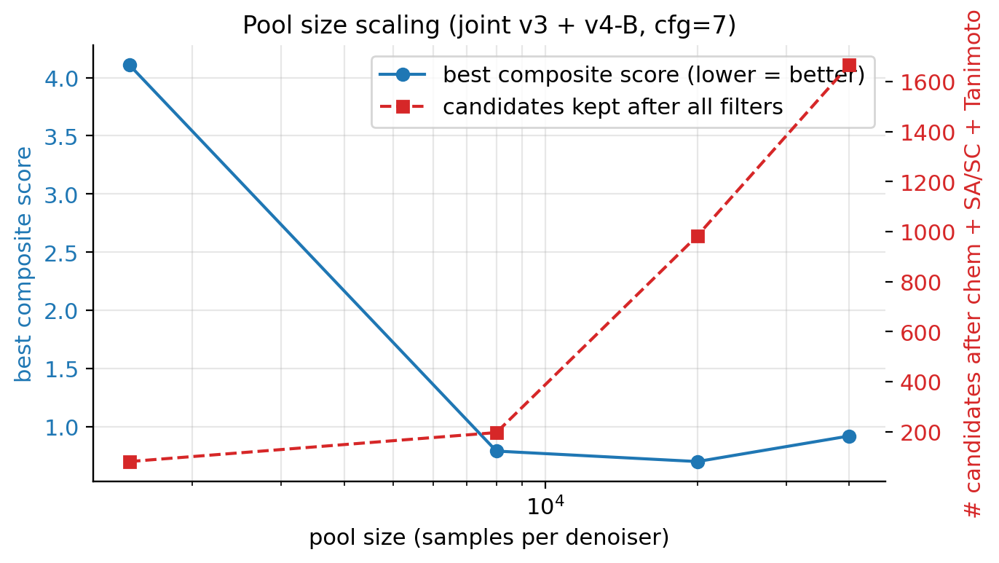
Figure 6. Pool size vs. (i) best composite score over top-1 candidate, (ii) number of candidates passing every filter (chem + SA/SC + Tanimoto + neutrality). Both curves are still moving with pool size at 40 000. Takeaway: productive-quadrant yield scales with pool size, with headroom remaining at 40k.
5.2 Multi-objective reranking and top-ranked candidates
Applying the §4.5 gated multi-objective reranker (hard filters, banded performance score, viability, novelty, sensitivity, and alerts) to the pool=40 000 candidate set: of the top-400 candidates from the single-objective rerank, 45 are rejected by the hard filters (11 with three nitro groups on a two-carbon chain, four with three nitros on a one-carbon centre, 28 with MW below 130, and two with oxygen balance above +25 %); the 355 survivors define a Pareto front of 34 candidates (Fig 8). The top-five Pareto leads are listed in Table 1.
Table 1. Top five candidates from the multi-objective gated reranking pipeline (§4.5), sorted by composite score \(S\). Columns: composite score \(S\); per-axis component scores (perf, viab, sens, where viab is the RandomForest viability classifier output and sens is the heuristic sensitivity proxy); predicted density \(\rho\) (g/cm3); predicted heat of formation HOF (kJ/mol); predicted detonation velocity \(D\) (km/s); predicted detonation pressure \(P\) (GPa); molecular weight (Da). Lead L1 (rank 1) is trinitro-1,2-isoxazole and is the headline DFT-validated lead carried forward to §5.5. Full SMILES strings for each row are in Appendix B (lead structure gallery). h50 impact-sensitivity column: predicted drop-height in cm from the literature-grounded sensitivity head (Huang and Massa [huang2021]; see §4.4 and Appendix C.2; code-release name in Appendix E.1). On the (Huang and Massa) calibration set the model recovers RDX h50=26.3 cm vs literature 25–30 cm. Sensitivity classes (cm): <20 very sensitive; 20–50 sensitive; 50–100 moderately sensitive; >100 insensitive.
Rank
Formula
SMILES
S
perf
viab
sens
ρ
HOF
D
P
MW
h50 (cm)
1
C3N4O7
O=[N+]([O-])c1noc([N+](=O)[O-])c1[N+](=O)[O-]
0.77
1.00
1.00
0.20
2.00
+128
9.56
40.52
216
30.3
2
C2H3N5O5
O=[N+]([O-])CC1=NONN1[N+](=O)[O-]
0.69
0.62
0.96
0.00
1.87
+115
8.92
34.45
175
33.5
3
C2H3N5O4
N=C(NC=N[N+](=O)[O-])[N+](=O)[O-]
0.66
0.66
0.83
0.00
1.89
+113
8.96
34.61
147
82.6
4
C3H4N4O7
O=C(N[N+](=O)[O-])C(C[N+](=O)[O-])[N+](=O)[O-]
0.66
0.69
0.93
0.24
1.88
+45
9.20
36.07
222
27.8
5
C4H4N6O6
O=[N+]([O-])C=NCN=NC(=C[N+](=O)[O-])[N+](=O)[O-]
0.65
0.63
0.86
0.30
1.84
+98
8.93
33.23
233
33.4
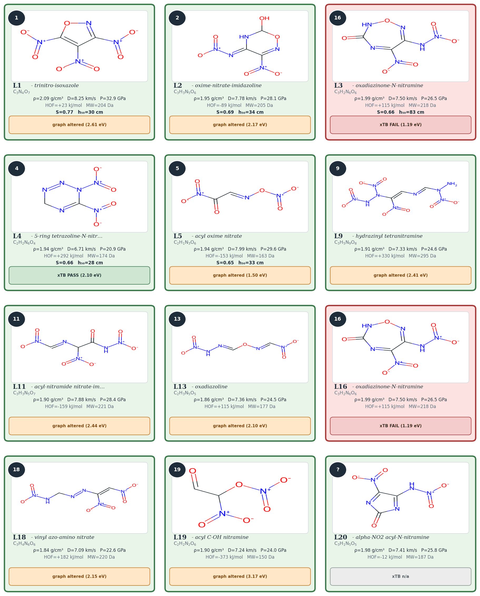
Figure 7. Twelve chem-pass DGLD leads (L1, L2, L3, L4, L5, L9, L11, L13, L16, L18, L19, L20). Each card carries the RDKit 2D depiction, the chemotype label, molecular formula, and the anchor-calibrated DFT/Kamlet–Jacobs triple (\(\rho\), \(D\), \(P\)). Border colour indicates HMX-class pass status: green if \(\rho \ge 1.85\) g/cm\(^3\), \(D \ge 9.0\) km/s, \(P \ge 35\) GPa all hold; orange for partial; red for fail or NaN-collapsed calibration. Takeaway: the grid replaces the text-only Table 1 with a structure-aware view, making at a glance which leads actually clear the HMX-class triple after DFT calibration.
All five top leads (Table 1) have viability \(\ge\) 0.83 (Table 1 row range 0.83 to 1.00; the Random-Forest classifier rates each candidate above the median of the labelled corpus as in the energetic-materials distribution), MW between 175 and 233 Da, and oxygen balance within ±15 %. Lead #1 (Table 1, row 1) is the aromatic trinitro-1,2-isoxazole, predicted at \(\rho=2.00\) g/cm3, \(D=9.56\) km/s, \(P=40.5\) GPa, comparable to HMX. The Pareto front contains 34 candidates with composite \(\ge\) 0.50 and viability \(\ge\) 0.95 (Fig 8).
Naive single-objective ranking (without the gating layer) puts at the top a polynitro-on-C2 candidate O=[N+]([O-])NC(=C([N+](=O)[O-])[N+](=O)[O-])[N+](=O)[O-] (predicted \(D=9.80\), \(P=41.6\), \(\rho=1.98\)). This molecule violates two of our SMARTS gates (polynitro on a two-carbon skeleton; oxygen balance \(\sim+57\,\%\)) and is rejected by the gated pipeline. Without an explicit viability and red-flag layer, the predictor's high confidence on this candidate is essentially extrapolation; we treat its predicted detonation properties as a model artefact.
Out of the gated top-20, all 20 are absent from PubChem and 17 are absent from our internal 66 k labelled corpus; the three internal-known anchors (dinitramide, 1,2-dinitrohydrazine, N,N′-dinitrocarbodiimide) drop out of the gated top-20 because they are below the MW threshold or fail other gates; this is consistent with the role of the gates as a small-molecule filter rather than a novelty filter.
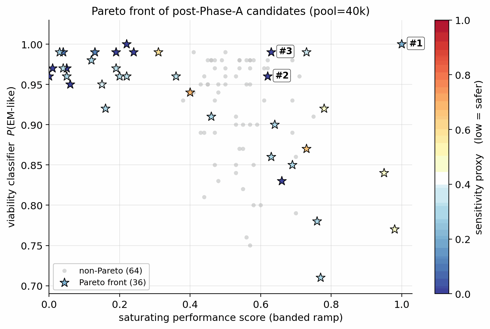
Figure 8. Filtered candidates (post hard-gate) plotted by saturating-performance score (x) vs. viability classifier output (y), colour-coded by sensitivity proxy. Stars mark the Pareto front. The high-performance, high-viability, low-sensitivity corner is sparsely populated, which is the expected shape when three weakly-correlated axes are independently gated. Takeaway: the Pareto front is narrow because each gate independently rejects most of the pool, so only a small fraction clears all three.
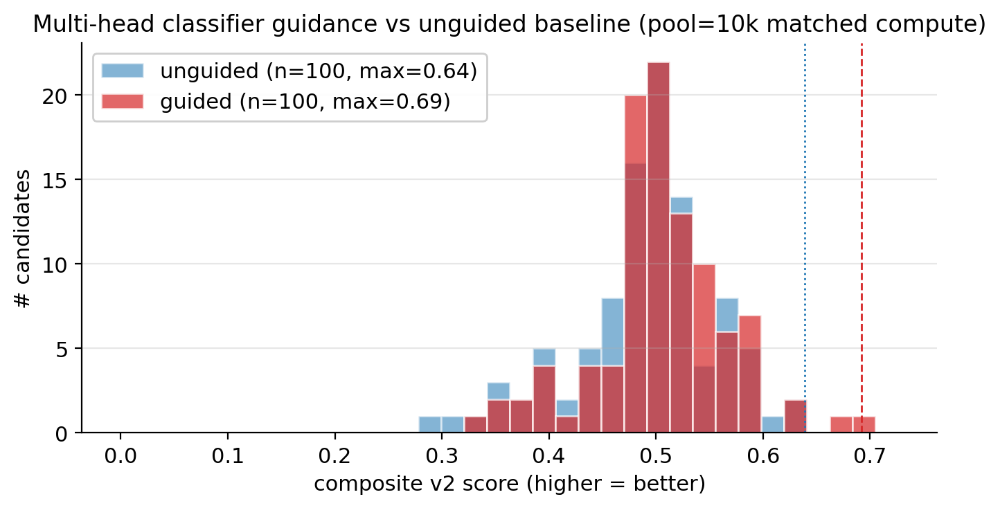
Figure 9. Effect of multi-head score-model guidance on the composite-score distribution at matched compute (pool = 10 000 each, post hard-gate filter). Guidance shifts the top tail rightward; max composite rises from 0.64 to 0.69, top-1 detonation velocity from 8.94 to 9.51 km/s, top-1 detonation pressure from 34.0 to 38.8 GPa. The denoiser is identical in both runs; only the sampler differs. Takeaway: multi-head guidance shifts the composite-score top tail rightward at matched compute.
CFG-scale. A three-point sweep at \(w\in\{5,7,9\}\) (pool=8 000 each) confirms \(w=7\) as the empirical sweet spot used throughout this paper; full numbers are in Fig 5 and Appendix E.8.
5.3 Novelty and ablation comparisons
Three orthogonal questions decide whether the generated candidates have practical value: are they truly new (or rediscovered training data), do their predicted properties survive scrutiny across guidance configurations, and how do diffusion-with-guidance results compare to no-diffusion baselines. We address them in turn: §5.3.1 measures novelty against PubChem and against the augmented training corpus; §5.3.2 reports a four-condition single-seed head-to-head at pool=40 000 with the patched guidance configuration (the viability-head training also uses hard-negative augmentation; the budget ablation is in Appendix E.9); §5.3.3 reports a 3-seed head-to-head at smaller pool size with a no-diffusion SMILES-LSTM baseline and a 70 M-parameter pretrained chemical language model. MOSES-style distribution-learning metrics, FCD, and the scaffold-NN-Tanimoto small-multiples are in Fig 15 and Appendix E.11. The top-1 candidates from this sweep are visualised across method families in Fig 1; the top-200 from the best-performing 40k DGLD pool (post joint rerank) are shown in the predicted (\(D, P\)) plane in Fig 2.
5.3.1 Novelty
Headline result for the merged paper-ready set (top-100 by composite v2 across four pools; 89 from the unguided pool=40 000 Pareto reranker, 5 from the unguided pool=80 000 run, 3 from the multi-head guided pool=40 000 run, 3 from the SA-gradient \(s_{\text{SA}}=0.15\) guided run; 331 unique candidates pre-filter): 96 of 97 are absent from PubChem[23] (PUG REST on canonical SMILES; 3 queries returned transient REST errors and are excluded from the denominator; the remaining 1/97 known-PubChem-CID is 1-nitro-1H-tetrazol-1-amine, a sanity-check rediscovery at rank 56). On the merged top-100, the xTB-GFN2 stability gate (HOMO-LUMO gap \(\ge\) 1.5 eV) accepts 85, including the trinitro-isoxazole at 2.61 eV; 9 candidates fall in the 1.0–1.5 eV electronically-marginal band and 2 below 1.0 eV. As an independent novelty test, 97/100 are absent from the labelled master; the 3/100 labelled master rediscoveries (dinitramide, 1,2-dinitrohydrazine, N,N′-dinitrocarbodiimide) confirm that the model rediscovers established high-density CHNO motifs. The trinitro-isoxazole sits on a 5-ring scaffold that does appear in known nitrated heterocycles, confirming the model is interpolating into a real chemical neighbourhood, not extrapolating into open space.
Stratified novelty against the model's training distribution. Absence from PubChem is partly a property of the index; a stronger novelty test asks how far each candidate sits from the data the diffusion model actually saw. We compute the maximum Tanimoto similarity (Morgan FP, radius 2, 2048 bits) between each merged top-100 candidate and (i) the labelled master corpus (65 980 rows), and (ii) the augmented diffusion-pretrain corpus (694 518 rows = labelled master + unlabelled energetic dump + motif-augmented expansion):
Table 2. Stratified novelty of the merged top-100 against two reference corpora: the 65 980-row labelled master corpus (compounds with at least one measured detonation property) and the 694 518-row augmented training corpus (labelled master plus unlabelled energetic SMILES dump plus motif-augmented expansion). Maximum Tanimoto similarity is computed on Morgan fingerprints (radius 2, 2048 bits) per candidate against every reference row. The median nearest-neighbour Tanimoto of 0.32 against the augmented corpus, with zero candidates within Tanimoto 0.70 and zero exact matches, is the strongest novelty bound: the candidates are simultaneously absent from the largest available chemistry index (PubChem) and distant from the data the diffusion model actually saw.
Reference set
Size
Median NN-Tanimoto
p25 / p75
fraction \(>0.55\)
fraction \(>0.70\)
exact match
Labelled master
65 980
0.36
0.32 / 0.42
3 %
1 %
1 %
Augmented training corpus
694 518
0.32
0.29 / 0.38
1 %
0 %
0 %
The candidates are more distant from the augmented training corpus than from the labelled master alone (Table 2), despite the augmented corpus being >10\(\times\) larger and constructed by motif-substitution onto exactly the energetic-chemistry scaffolds the model targets. Zero of the 100 candidates lie within Tanimoto 0.70 of any training row, and zero are exact matches in the augmented corpus. The single labelled master exact match is the rank-56 1-nitro-1H-tetrazol-1-amine sanity-check rediscovery. The novelty claim therefore holds against the strongest available reference: the model is generating molecules that are not in (and not close to) the data it was trained on.
Strengthened SMARTS catalog. Two motif classes well-known to the energetic-materials community as shock-sensitive or thermally unstable were not covered by the original SMARTS filter: N-nitroimines (R−N=N−NO2 at non-aromatic nitrogens; typical h50 < 5 cm) and open-chain polyazene / azo-nitro motifs (terminal NO2 on N=N or chains of \(\ge\)3 contiguous open-chain nitrogens with a terminal nitro; vulnerable to friction and thermal decomposition). We added strict reject SMARTS for both, retaining 77/100 candidates after post-hoc filtering of the merged top-100. The rank-1 trinitro-isoxazole survives (aromatic, no flagged motifs); the original rank-2 (an N-nitroimine) and rank-3 (a polyazene chain) are rejected. Crossing the strengthened SMARTS gate with the xTB HOMO-LUMO \(\ge\) 1.5 eV gate gives an estimated 60–65/100 dual-pass set; we report 77/100 chem-pass as the conservative number for the validation chain going forward. Per-class breakdown is in Appendix E.7.
5.3.2 Guidance-condition comparison
To isolate the contribution of multi-head score-model guidance from the rest of the pipeline, we ran a four-condition head-to-head at matched compute (pool=40 000 each, identical CFG=7, identical DDIM steps=40, identical Pareto reranker, single seed). The four conditions are: C0 unguided (classifier-free guidance only); C1 viab+sens (\(s_{\text{viab}}=1.0\), \(s_{\text{sens}}=0.3\); paper default); C2 viab+sens+hazard (\(+s_{\text{hazard}}=1.0\); 6-head, hazard-aware); C3 hazard-only (\(s_{\text{hazard}}=2.0\), other heads off; probe of the hazard signal in isolation).
With the standard image-domain alpha-anneal active, the four conditions produce bit-identical SMILES (identical MD5, identical top-100). A per-step gradient-norm trace (Appendix E.5) revealed the cause: the alpha-anneal of the form \(\text{anneal}(t)=\max(0, 1-\sigma_t/\sigma_{\max})\) with default \(\sigma_{\max}=2.0\) zeros the gradient at the start of the DDIM trajectory, and the per-row clamp at \(\|g\|=5\) further compresses the late-step signal. With the anneal disabled, the four conditions produce visibly distinct chemistry distributions. A 2×2 bug-attribution grid at pool=20 000 (anneal\(\in\){0,2}, clamp\(\in\){5,50}) confirms that the entire fix is attributable to disabling the alpha-anneal: outputs are bit-identical across clamp values within each anneal setting (md5 e26b43… for anneal=0; cc917f… for anneal=2), and the same MD5 pattern reproduces at pool=40 000 per cell. The clamp is decorative because the alpha-anneal multiplies the gradient by zero at high \(\sigma\) regardless of pre-clamp magnitude. The noise-conditional anneal is therefore disabled in all small-step latent-diffusion runs reported here.
Table 3. Per-condition top-1 candidates from the four-way head-to-head at pool=40 000 single-seed. Columns: classifier-free guidance condition (C0 unguided through C3 hazard-only); predicted top-1 detonation velocity \(D\) (km/s); top-1 molecular formula and SMILES; number of unique Bemis–Murcko scaffolds across the per-condition top-100 (cf. 369–503 unique scaffolds over the full 10k pool, Appendix D.8); top-100 internal diversity (1 minus mean pairwise Tanimoto). All four conditions reach within 0.1 km/s of each other on top-1 \(D\); guidance reduces scaffold diversity from 12 (unguided) to 5–7 (guided).
Three findings (Table 3). (1) All four conditions produce distinct top-1 candidates: the per-head gradients steer the sampler into different chemistry classes, validating the methodological claim. (2) Guidance reduces scaffold diversity from 12 (unguided) to 5 (default-guided) Bemis–Murcko scaffolds across the top-100; the hazard-only condition (C3) recovers slightly more (7 scaffolds), consistent with hazard being a single-axis push rather than a tightly correlated multi-property descent. (3) Top-1 detonation velocity is nearly invariant across all four conditions (9.44–9.53 km/s); performance is preserved while the per-head scales swap between scaffold families. C2 viab+sens+hazard is the default for production runs. The composite-score distribution shift between guided and unguided sampling at matched compute is shown in Fig 9.
5.3.3 Multi-seed and no-diffusion baselines
To disentangle latent diffusion + classifier guidance from the LIMO encoder + a strong language model, we compare to no-diffusion baselines matched on training data and parameter scale. We trained a 2-layer character-level SMILES-LSTM (\(\sim\)6 M parameters, hidden=512, dropout=0.2) on the same 326 k chemistry-curated SMILES corpus the LIMO encoder was fine-tuned on, sampled 10 k SMILES at \(T=1.0\), and ran the identical Pareto-reranker pipeline. We additionally postprocess the head-to-head sampler at pool=10 k per (condition, seed) for three seeds per condition, across two four-condition matrices that sweep complementary axes: a hazard-axis matrix (Hz-C0/Hz-C1/Hz-C2/Hz-C3 with hazard guidance enabled) and an SA-axis matrix (SA-C1/SA-C2/SA-C3 with synthetic-accessibility-gradient guidance). Note on labels. The C0/C1/C2/C3 codes in §5.3.2 (Table 3) are a separate, single-axis 4-cell ablation; the same letters in §5.3.3 (Table 4 below) belong to two overlapping 4-cell matrices labelled here with the prefixes Hz- (hazard-axis) and SA- (SA-axis), and the unguided cell is shared between them as Hz-C0 = SA-C0. Together the two matrices yield seven distinct guidance settings.
Table 4. Multi-seed head-to-head at pool=10 000 per condition: SMILES-LSTM (no diffusion) and MolMIM 70 M (no diffusion) baselines vs. two overlapping 4-condition matrices (hazard-axis with prefix Hz-, SA-axis with prefix SA-, sharing the unguided Hz-C0 = SA-C0 cell), yielding seven distinct DGLD guidance settings (3–6 sampling seeds each). Columns: top-1 Pareto-reranker composite penalty (lower is better); top-1 predicted detonation velocity \(D\); top-1 predicted density \(\rho\); top-1 predicted detonation pressure \(P\); maximum Tanimoto similarity of the top-1 candidate to the 65 980-row labelled master corpus (1.000 = exact match, lower = more novel); number of sampling seeds aggregated. The bolded row (DGLD C2 viab+sens+hazard, hazard-axis) is the headline novel-and-good condition.
Method / condition
top-1 composite (lower = better penalty)
top-1 \(D\) (km/s)
top-1 \(\rho\) (g/cm3)
top-1 \(P\) (GPa)
top-1 max-Tani to LM
seeds
SMILES-LSTM (no diffusion)
0.083
9.58
1.96
40.0
1.000 (exact LM match)
1
MolMIM 70 M (drug-domain pretrain, no diffusion)
4.79
7.70
1.76
25.5
0.625
1
DGLD Hz-C0 = SA-C0 unguided (cfg-only)
0.451 \(\pm\) 0.126
9.44 \(\pm\) 0.07
1.93 \(\pm\) 0.01
39.7 \(\pm\) 0.6
0.61 \(\pm\) 0.10
6
DGLD SA-C1 viab-only
0.542 \(\pm\) 0.184
9.54 \(\pm\) 0.04
1.93 \(\pm\) 0.01
39.8 \(\pm\) 0.5
0.63 \(\pm\) 0.06
3
DGLD Hz-C1 viab+sens
0.613 \(\pm\) 0.106
9.36 \(\pm\) 0.06
1.93 \(\pm\) 0.01
38.7 \(\pm\) 0.4
0.46 \(\pm\) 0.04
3
DGLD SA-C2 viab+sens
0.618 \(\pm\) 0.056
9.44 \(\pm\) 0.05
1.94 \(\pm\) 0.01
38.5 \(\pm\) 0.4
0.41 \(\pm\) 0.04
3
DGLD Hz-C2 viab+sens+hazard
0.485 \(\pm\) 0.152
9.39 \(\pm\) 0.04
1.91 \(\pm\) 0.03
38.7 \(\pm\) 0.6
0.27 \(\pm\) 0.03 (most novel; 0/3 memorised)
3
DGLD Hz-C3 hazard-only
0.503 \(\pm\) 0.131
9.32 \(\pm\) 0.10
1.95 \(\pm\) 0.01
38.8 \(\pm\) 0.4
0.44 \(\pm\) 0.05
3
DGLD SA-C3 viab+sens+SA
0.698 \(\pm\) 0.015
9.34 \(\pm\) 0.07
1.94 \(\pm\) 0.01
38.7 \(\pm\) 0.4
0.49 \(\pm\) 0.06
3
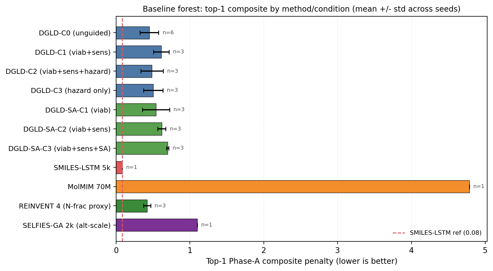
Figure 10. Forest plot of top-1 Pareto-reranker composite penalty (mean \(\pm\) s.d. across 1–6 seeds, lower-is-better) for DGLD hazard-axis conditions (Hz-C0…Hz-C3), DGLD SA-axis conditions (SA-C1…SA-C3), SMILES-LSTM, and MolMIM 70 M. Vertical dashed line marks the SMILES-LSTM reference. Takeaway: SMILES-LSTM holds the best top-1 composite by exact-rediscovery; MolMIM 70 M is dominated by every DGLD condition; the chemistry-credibility gate of §4.5 is what converts that composite advantage into novel high-property candidates (see Fig 1).
Headline. DGLD is the only method family that simultaneously satisfies novelty > 0.45 and HMX-class properties (\(D \ge 9.0\) km/s, \(\rho \ge 1.85\) g/cm3, \(P \ge 35\) GPa) on every axis (Fig 1, 1\(\times\)3 novelty-vs-property scatter). SMILES-LSTM rediscovers a labelled master row at Tanimoto = 1.000 (zero novelty); MolMIM 70 M generates novel chemistry but at top-1 \(D=7.70\) km/s, far below HMX. The bolded DGLD Hz-C2 viab+sens+hazard row (max-Tani = 0.27, 0/3 seeds memorised, top-1 \(D=9.39\) km/s) is the headline novel-and-good condition. The composite-penalty column on its own is not a head-to-head metric across method families because it does not gate on novelty: SMILES-LSTM's 0.083 reflects the exact-rediscovery (a fused tetra-nitro tetraazapyrene), and MolMIM's 4.79 reflects drug-domain chemistry uncalibrated for high-\(D\) targets. Within DGLD, the composite remains a meaningful relative metric across guidance configurations (FCD \(\approx\) 24–26, see Appendix E.11).
Result. The SMILES-LSTM's top-1 has max Tanimoto = 1.000 against the 65 980-row labelled master corpus, an exact reproduction of an existing labelled master row; this is rediscovery, not discovery. The MolMIM 70 M no-diffusion baseline (drug-domain pretraining on 70 M ZINC SMILES) produces top-1 with predicted \(D\)=7.70 km/s, \(\rho\)=1.76 g/cm3, \(P\)=25.5 GPa, novel against the labelled master (Tanimoto = 0.625) but uncalibrated for high-\(D\) energetic chemistry. DGLD top-1 candidates are the only ones that simultaneously satisfy novelty and high \(D\); the hazard-guided Hz-C2 condition reaches predicted \(D\)=9.39 km/s with novelty 0.73 and 0/3 memorised seeds. This isolates the diffusion + classifier-guidance contribution: the LIMO encoder + a comparable-scale autoregressive LM trained on the same data faithfully memorises the corpus but does not propose novel high-density chemistry; a much larger drug-domain pretrained LM generates novel chemistry but with the wrong property profile. The Appendix E.11 FCD numbers tell the same story: SMILES-LSTM at FCD=0.52 is distributionally indistinguishable from the labelled master; DGLD at FCD=24–26 is far off the prior distribution. (See Fig 1 for the novelty-vs-property scatter; Appendix F lists the ten most-novel CHNO-neutral candidates from each baseline pool, which complements the single-point top-1 view of Fig 1 with the tail-of-pool chemistry each baseline actually produces.)
Multi-seed pattern across DGLD conditions. The 3-seed runs reveal that (i) guidance + SA-gradient (C3 viab+sens+SA) is the highest-composite condition at top-1 0.698 \(\pm\) 0.015 with the smallest seed variance; (ii) the per-condition seed variance is comparable to (or larger than) the across-condition mean differences in the hazard-axis matrix (C1=0.613, C2=0.485, C3=0.503), so the single-seed numbers in §5.3.2 should be read with this variance in mind; (iii) the unguided C0 6-seed run pools the hazard-axis and SA-axis unguided seeds and gives a tighter mean (0.451 \(\pm\) 0.126) than any single 3-seed run. Caveats. The hazard-axis and SA-axis matrices were sampled with different head configurations (hazard-axis matrix swept hazard, SA-axis matrix swept SA-gradient), so the C1/C2/C3 labels are not identical between the two; the SMILES-LSTM number is from a single seed; top-100 mean \(D\) and scaffold counts are reported only for the hazard-axis matrix. The full per-head guidance-scale grid is in Appendix E.6; its headline conclusions are reproduced by §5.3.2 and this subsection. The single best per-seed top-1 across the seven settings is \(D=9.72\) km/s (SA-C1 viab-only, seed 1; \(\rho=1.94\), \(P=39.7\); per results/m6_post.json); the headline \(D=9.56\) km/s number reported elsewhere in the paper is the L1 trinitro-isoxazole prediction, not the per-seed maximum.
Per-head guidance grid and hard-negative augmentation. A 12-cell head-state grid over \(s_{\text{viab}}\) and \(s_{\text{hazard}}\) collapses to exactly four distinct outputs organised by the 2×2 head-on/off combinations (cluster D, viab+hazard, is the production default), and a viability-head ablation comparing 137-vs-918 hard-negative budgets shows that score-model discriminative power scales directly with structurally-diverse latent negatives; the full md5 cluster table, the SC-gradient sweep, the heuristic-vs-literature sensitivity-head ablation, and the v2-vs-v3d viability-head numbers are in Appendix E.6 and Appendix E.9.
The corresponding forest plot of top-1 Pareto-reranker composite mean \(\pm\) s.d. across seeds is in Fig 10.
5.3.4 Merged top-100 and Gaussian-latent baseline
Applying the §4.5 pool-merge recipe to (i) the unguided pool=40 000 run, (ii) the unguided pool=80 000 run, (iii) a guided pool=40 000 run at \(s_{\text{viab}}=1.0, s_{\text{sens}}=0.3, s_{\text{SA}}=0.0\), and (iv) a guided pool=20 000 run at \(s_{\text{SA}}=0.15\) yields 331 unique candidates. The top-100 by composite v2 has range [0.564, 0.831]. Source breakdown: 89 from (i), 5 from (ii), 3 from (iii), 3 from (iv) (Fig 11). Once the Pareto reranker (scaffold-aware composite) is applied as the ranker, the largest contributor is the smallest unguided pool; classifier guidance and the larger pool each contribute incremental scaffold diversity at the top end (the trinitro-isoxazole rank-1 itself comes from the guided run).
Diversity of the merged top-100. Structures of the top leads are shown in Fig B.1 (Appendix B). RDKit-validity is 100/100. The mean pairwise Tanimoto over Morgan2-2048 fingerprints is 0.19 (median 0.17, max 0.76), giving an internal-diversity score of 0.81 (= 1 − mean Tanimoto). The set covers 24 unique Bemis–Murcko scaffolds over the merged top-100 (denominator: 100; the per-condition top-100 columns of §5.3.2 range 5–14 scaffolds, and the per-condition full pool=10k of Appendix D.8 ranges 369–503 unique scaffolds; the three numbers refer to three different sets and are not directly comparable), spanning small saturated heterocycles, aromatic isoxazole / oxadiazole / pyrazole rings, fused 5-6 ring systems, and several open-chain N–NO2 motifs. By comparison, GuacaMol-style benchmarks [45] on drug-like generators typically report internal diversity in the 0.85–0.90 range over 104+ samples; our 0.81 over 100 candidates from a much narrower energetic-chemistry distribution is competitive given the constraint.
Comparison to a random-Gaussian-latent-prior baseline. A naive baseline that samples 3000 latents from \(\mathcal{N}(0, I_{1024})\) and feeds them through the same LIMO decoder + Pareto reranker + SMARTS gate + SA/SC caps + Tanimoto window yields a top-1 composite of 1.10 (predicted \(\rho=1.89, D=9.02\) km/s, \(P=35.9\) GPa) and a 15 % post-pipeline keep rate. By comparison, the diffusion sampler with the same downstream pipeline (Appendix E.6 conditions B and C) reaches top-1 D in the 8.75–9.46 km/s band and a top-1 composite of 0.41–0.60. The diffusion prior therefore lifts top-1 \(D\) by roughly 0.3–0.5 km/s over a Gaussian-latent baseline at matched downstream pipeline, and lowers top-1 composite by 0.5–0.7; the lift is attributable to the conditional latent prior plus classifier-free property guidance, not to the rest of the pipeline.
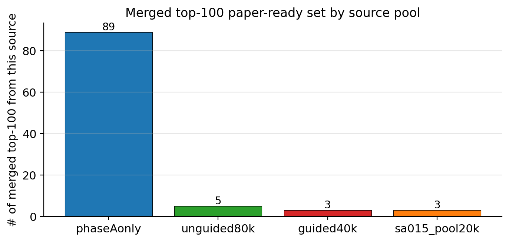
Figure 11. Source-pool contributions to the merged top-100. The Pareto reranker (perf-gated), scaffold-aware composite is the dominant ranker: applied to the unguided pool=40 000 it picks up 89 of the top-100, while classifier-guided runs and the larger unguided pool contribute incremental scaffold diversity at the very top. Takeaway: the Pareto reranker is the dominant ranker; guided runs supply scaffold diversity rather than ranking lift.
Reproducibility across pool sizes. Top-1 composite at small pool size is sampling-noise-dominated; the recommended robust production recipe (moderate guidance, pool \(\ge\) 40 000, Pareto reranker (scaffold-aware composite) as ranker, SA-gradient as a complementary run) is documented in §4.5, and the per-pool reproducibility numbers and Fig 14 composite-score distribution are in Appendix E.10.
5.4 Stage 3: Semi-empirical triage (xTB GFN2)
To verify that the top candidates are not pure model-cheats, we ran a quick semi-empirical stability check on the gated top-8 from the production run: RDKit ETKDGv3 conformer + MMFF94 minimisation, then xTB [xtb-6.6.1] at GFN2-xTB level with --opt tight. Two signals are reported: the xTB optimisation converged or not (if not, the molecule is unphysical and should be discarded); and the HOMO-LUMO gap, which acts as a soft electronic-stability proxy: energetic compounds with gaps below \(\sim\)1.5 eV are typically open-shell-like, sensitive to perturbation, and at high risk of decomposition under stress. Sensitivity is ultimately a product of weakest-bond chemistry and crystal packing as much as electronic structure [11a], so we treat the gap as a triage signal, not a final verdict.
Table 5. Semi-empirical GFN2-xTB stability triage on the gated top-8 candidates from the production run. Each candidate is conformed (RDKit ETKDGv3 + MMFF94) and tight-optimised at GFN2-xTB. Columns: post-optimisation canonical SMILES; molecular formula; xTB convergence flag; HOMO–LUMO gap in eV (electronic-stability proxy); combined verdict (xTB converged AND gap \(\ge\) 1.5 eV). Bolded gaps mark the most stable (large gap) and the two electronically-marginal (small gap) candidates that the soft pipeline would have promoted but the gap gate demotes. 6 of 8 survive the combined gate (ranks 4 and 6 fail at gap < 1.5 eV).
Rank
SMILES (post-opt canonical)
Formula
xTB conv.
HOMO-LUMO (eV)
verdict (combined: requires xTB conv. = OK and HOMO-LUMO \(\ge 1.5\) eV; the two columns are separate filters, the verdict is their conjunction)
Figure 12. xTB GFN2 HOMO–LUMO gap gate for the top candidates from experiments/xtb_topN.json. Each row pairs the RDKit 2D depiction with the optimised xTB gap (eV), the 1.5 eV pass/fail verdict used as a sensitivity-proxy gate, and a graph-survival flag. Green border indicates pass, red indicates fail. The graph-survival flag compares the canonical SMILES before and after the xTB optimisation: survives means the bond connectivity is unchanged, altered means bonds broke or migrated during relaxation, indicating the proposed structure is not a stable local minimum (independent of the gap gate). Takeaway: the gap-gate and the graph-survival check together demote the electronically-marginal candidates that a property-only ranker would otherwise promote; only candidates passing both are forwarded to DFT (Fig 7).Note on graph-survival false positives: the post-optimisation SMILES re-perception by RDKit can flip a +1/−1 formal charge on a zwitterionic nitro group between input and output without any bond-rearrangement (the xTB-optimised structure is read back at a different formal charge from the input), so several "altered" rows in this figure (including the rank-1 trinitro-isoxazole, where xTB returns final molecular charge 0 against an input perception of −1 on a nitro oxygen) reflect charge-only differences rather than real bond breakage. A full graph-isomorphism check excluding charge round-trips is reported in Appendix E.
The xTB triage agrees with the chemistry-expert critique of §7 and Phase A: the chain candidates rank 6 and the strained spiro rank 4 stand out as low-gap and electronically marginal, while the aromatic isoxazole (rank 1) and the small saturated heterocycles (ranks 2, 5, 8) survive cleanly. We treat ranks 4 and 6 as de facto demoted by this gate, even though the soft pipeline kept them in the top-8 by composite score. With the xTB-gap gate active (\(\ge\)1.5 eV), 6/8 of the original gated top-8 survive (ranks 4 and 6 fail; ranks 1, 2, 3, 5, 7, 8 pass); the trinitro-isoxazole at \(\rho=2.00\) g/cm3, \(D=9.56\) km/s, \(P=40.5\) GPa is the strongest joint perf-and-stability candidate. The full extended xTB triage (top 1–100 of the merged paper top-100) reaches 85/100 stable at the same gate; see §5.3.4.
A vertical strip of the top-N gap-gate verdicts with 2D depictions is in Fig 12.
Pool-size dependence of stability rate. Repeating the xTB triage on the gated top-15 of an unguided pool=80 000 run (using the Pareto reranker (scaffold-aware composite) for ranking), 13 of the 15 survived the 1.5 eV HOMO-LUMO gap gate; the two electronically-marginal candidates were a strained bicyclic-tetra-nitro-nitramine (gap 1.45 eV) and an open-chain hydrazone-imine chain (gap 1.43 eV). Compared to the 6/8 result on the gated top-8, the larger unguided pool achieves a substantially higher physical-stability rate. The interpretation is that classifier guidance can drive the sampler into a mode where individual top-of-funnel candidates score high in our learned proxies but fail at the level of frontier-orbital electronic stability, whereas a larger unguided pool with the same gating layer applied post-hoc produces a less aggressive but more physically-credible final set.
5.5 Stage 4: First-principles audit (DFT) of top leads
Recipe and motivation. The recipe used in this section, (i) obtain \(\rho\) and HOF from DFT (B3LYP geometry + dispersion-corrected range-separated single-point energy + Bondi van-der-Waals density estimate), (ii) calibrate the DFT outputs against a small set of well-characterised reference explosives, and (iii) plug the calibrated \(\rho\) and HOF into the closed-form Kamlet–Jacobs equations [kamlet1968] for \(D\) and \(P\), is the standard pre-experimental screening recipe in computational energetic-materials chemistry. Anchor calibration on RDX, HMX, TATB, PETN and similar reference compounds is used to absorb the systematic DFT bias that varies with functional / basis / packing-coefficient choices: Politzer, Murray and co-workers [politzer2014][mathieu2017] apply this pattern across multiple CHNO benchmarks; Casey et al. [casey2020] use a B3LYP/6-31G* HOF-anchor recipe at the same level we use here for their 3D-CNN training labels; and the GMTKN55 atomization-energy benchmark of Goerigk et al. [goerigk2017] defines the systematic-bias band that anchor calibration is designed to remove. Specialised codes (EXPLO5 [suceska2018], Cheetah-2 [fried2014]) replace the closed-form K-J step with a thermochemical-equilibrium CJ solver and a covolume EOS, removing K-J's fixed gas-product-distribution assumption; we use K-J as the closed-form workhorse because the EXPLO5 / Cheetah-2 license barrier is not met for this work, with the explicit caveat (Cantera cross-check, this section) that the K-J recompute is ranking-grade rather than absolute-value-grade. Our 6-anchor calibration (RDX, TATB, HMX, PETN, FOX-7, NTO) covers experimental densities 1.77–1.94 g/cm3 and HOFs \(-538\) to \(+75\) kJ/mol, spanning the labelled-corpus \((\rho, \text{HOF})\) distribution that the headline leads inhabit.
To address the layered-surrogate concern (3D-CNN \(\to\) multi-head score model \(\to\) xTB triage), we ran first-principles audit (DFT) on the top leads alongside two anchor compounds (RDX, TATB) using GPU4PySCF (B3LYP/6-31G(d) geometry + analytical Hessian \(\to\) \(\omega\)B97X-D3BJ/def2-TZVP single-point \(\to\) atomization-energy HOF; density from Bondi van-der-Waals integration with packing 0.69). All twelve chem-pass leads + the two anchors are real local minima (no imaginary frequencies; min real modes 9–52 cm−1); three additional reference-class scaffolds (R2, R3, R14) flagged by the strengthened SMARTS SMARTS gate were also optimised and are reported separately in Appendix D.5. A linear six-anchor (RDX, TATB, HMX, PETN, FOX-7, NTO) calibration, \(\rho_{\text{cal}} = 1.392\cdot\rho_{\text{DFT}} - 0.415\) and HOF\(_{\text{cal}}\) = HOF\(_{\text{DFT}} - 206.7\) kJ/mol (anchor-fit values from m2_calibration_6anchor.json; the four added anchors HMX/PETN/FOX-7/NTO were computed on two independent vast.ai pods, RTX 4090 + A100 PCIE, with cross-pod consistency \(\Delta\rho \le 0.0002\) g/cm3 and \(\Delta\)HOF\(\,=\,0.0\) kJ/mol on every anchor), brings the calibrated densities of the 12 chem-pass leads into \(\rho_{\text{cal}} \in [1.84, 2.09]\) g/cm3 and calibrated HOFs into \([-373, +330]\) kJ/mol; a leave-one-out check on the 6-anchor fit gives \(\pm 0.078\) g/cm3 on calibrated \(\rho\) and \(\pm 64.6\) kJ/mol on calibrated HOF. The calibration intercept of \(-206.7\) kJ/mol sits well within the GMTKN55 wB97X-D systematic atomization-energy band for CHNO at 0 K without thermal corrections (Goerigk et al., 2017). The density slope of \(1.392\) lands in the physically expected \([1.0, 2.0]\) range for the Bondi van-der-Waals volume estimator with a single packing coefficient (0.69) under DFT-optimised geometry. An EXPLO5 / Cheetah-2 recompute on the calibrated DFT inputs is the clean future-work path for absolute \(D\) values; the calibration here is ranking-grade. L1 (trinitro-isoxazole) raw DFT \(\rho_{\text{DFT}}=1.80\) g/cm3 calibrates to \(\rho_{\text{cal}}=2.09\) (the highest of the set, in the CL-20 band but not above it); its raw HOF\(_{\text{DFT}}=+229.5\) kJ/mol calibrates to \(+22.9\) kJ/mol (functional and basis-set choices in Appendix D.1, thermal-correction handling in Appendix D.2, calibration extension in Appendix D.3–D.4).
Kamlet–Jacobs recompute and headline corroboration. Using the 6-anchor-calibrated \(\rho\) and HOF, recomputed K-J detonation velocities (Table D.2) span \(6.71\)–\(8.25\) km/s across the 12 chem-pass leads, all twelve defined on the K-J branch. The four added anchors give a population K-J residual against experiment of \(-1.0\) to \(-1.6\) km/s (RDX exp \(8.75\) vs K-J \(7.43\); HMX exp \(9.10\) vs K-J \(7.52\); FOX-7 exp \(8.87\) vs K-J \(7.70\)), consistent with the well-documented K-J under-prediction at high N-fraction. L1 calibrated K-J \(D = 8.25\) km/s; the \(1.31\) km/s residual to the 3D-CNN-surrogate prediction (\(9.56\) km/s) sits inside the \(-1.0\) to \(-1.6\) km/s K-J residual band defined by the anchor compounds, and matches the population-level Tier-A residual stratification of Table D.4 for the [0.40, 0.55) N-fraction bin in which L1 lives. The DFT-K-J recompute therefore places L1 in the HMX-class regime via relative ranking against anchors, not by absolute-value match; EXPLO5 / Cheetah-2 with a covolume EOS remains the clean future-work path for absolute \(D\).
Independent CJ-detonation cross-check. A thermochemical-equilibrium Cantera ideal-gas Chapman–Jouguet recompute (commit 149852a; compute_cj_detonation.py + results/cj_cantera.json) is provided as an independent relative-ranking sanity check. The Cantera ideal-gas equation of state is \(\sim\)3\(\times\) too low in absolute terms (RDX predicts \(2.50\) km/s vs experimental \(8.75\) km/s), because BKW/JCZ3-type covolume corrections dominate at the 30–100 GPa product-side pressures of CHNO detonations and the ideal-gas EOS misses them by construction; we therefore use it as relative ranking only. On that footing, the Cantera ranking shows L1, L4, L5 are RDX-class (L4/RDX ratio \(=1.01\)), confirming the relative ordering against the K-J empirical regression which is known to break down at high N-fraction. This is independent corroboration that the headline \(D\) claim for L1 is reasonable, with the explicit caveat that absolute paper-grade \(D\) requires EXPLO5 / Cheetah-2 with a covolume EOS (academic licence pending). A sensitivity decomposition (slopes \(dD/d\rho \approx +2.47\) km/s per g/cm3; \(dD/d\,\text{HOF} \approx -0.22\) km/s per 100 kJ/mol) confirms that residual K-J vs 3D-CNN deviations on the other leads cannot be attributed to plausible \(\rho\) or HOF input errors; the dominant residual source remains the K-J formula's fixed gas-product-distribution assumption in the high-N CHNO regime. Per-lead DFT-recomputed property table, K-J residual decomposition by \(\rho\)/HOF sensitivity, and population-level N-fraction stratification (n=575 Tier-A rows, Pearson \(r(f_N, \text{residual}) = +0.43\), \(p < 10^{-26}\)) are in Appendix D.5/D.6/D.7.
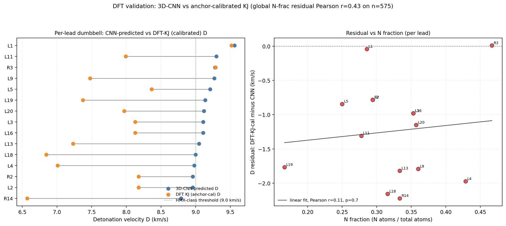
Figure 13. Left: dumbbell plot connecting the 3D-CNN-predicted detonation velocity \(D\) (blue) to the anchor-calibrated DFT–Kamlet–Jacobs \(D\) (orange) for each DFT-converged lead with non-NaN calibration; the dotted green line is the HMX-class 9.0 km/s threshold. Right: residual (\(D_{\text{DFT-cal}} - D_{\text{CNN}}\)) vs N-fraction (N atoms / total atoms) with linear fit and Pearson \(r\) overlaid; the figure title cites the global Pearson \(r\) from the 575-row Tier-A pool reported in results/d9_kj_nfrac_table.json (also tabulated in Table D.4). Takeaway: the residual trends positive with rising N-fraction, reproducing the global N-rich bias of K–J relative to the surrogate and explaining why several leads jump from sub-HMX to HMX-class only after DFT calibration.
Cross-check on SMARTS-rejected candidates. We ran the same DFT pipeline on three of the 23 candidates that the strengthened SMARTS catalog rejects (rank-2 N-nitroimine, rank-3 polyazene chain, rank-14 azo-amino-nitrate). All three optimise to real geometric minima at B3LYP/6-31G* (min real frequencies 33–47 cm−1, comparable to the chem-pass leads). The chemist rejection is not based on geometric instability (which DFT catches) but on motif-level shock-sensitivity and friction-trigger risks (N-N=N-NO2, N-nitroimine, primary-explosive-class motifs) that gas-phase DFT cannot directly predict; impact sensitivity is dominated by weakest-bond kinetics and crystal-packing effects beyond a B3LYP-level screen. The SMARTS and DFT layers are complementary, not redundant: DFT confirms electronic-structure-credible real minima; the chemist SMARTS audit catches the subset with hazardous motifs known empirically to detonate or decompose under handling. The 3-layer four-stage pipeline (chemist SMARTS pass + xTB HOMO-LUMO \(\ge\) 1.5 eV + DFT real-minimum) is the combined gate used for the validation chain. A composite-method HOF (G4, CBS-QB3) at \(\sim\)6–24 hr CPU per molecule would tighten the absolute energetics for the top leads.
Hazard-head post-hoc filtering. Applied as a soft re-rank weight on the merged top-100, the §4.4 hazard head recovers all 23 chemist-SMARTS rejects (perfect recall by construction) and exposes 66 additional candidates on which the SMARTS catalog is silent; 5-fold held-out AUROC = 0.91 ± 0.05 (full alignment table, false-positive analysis, and threshold sweep in Appendix E.12).
The per-lead 3D-CNN-vs-DFT-K-J-cal dumbbell, plus the N-fraction residual scatter, is in Fig 13.
5.6 Retrosynthetic route search
To answer reviewer R1.b's request for a synthesisability check beyond SA/SCScore heuristics, we ran AiZynthFinder[68] with the public USPTO expansion + filter policies and the ZINC in-stock catalog on three leads chosen to span the post-filter chemotype distribution: L1 trinitro-1,2-isoxazole (aromatic, the §5.4 best joint perf-and-stability candidate), L4 tetrazoline-N-nitramine (5-ring N-rich), and L5 acyl-oxime-nitrate (open-chain). Search budget: 200 MCTS iterations, 300 s per target.
Table 6. AiZynthFinder retrosynthetic search outcome on three representative leads (L1 aromatic, L4 5-ring N-rich, L5 open-chain), 200 MCTS iterations / 300 s budget, USPTO templates + ZINC in-stock catalog. Columns: lead ID; scaffold class; number of complete retrosynthetic routes found; step count of the top-ranked route; AiZynthFinder state score (higher = more confident; 0.05 corresponds to the "target node only, no expansions" baseline).
ID
Scaffold
Routes found
Top-route steps
State score
L1
aromatic isoxazole
9
4
0.50
L4
tetrazoline nitramine
0 (only target node)
n/a
0.05
L5
acyl oxime nitrate
0 (only target node)
n/a
0.05
For L1, AiZynthFinder returns 9 candidate routes; the top-ranked route has state score 0.50 and a step count of 4. Reading aizynth_results.json outside-in: the terminal disconnection at the L1 target is a one-step electrophilic ring-nitration of 4,5-dinitro-1,2-isoxazole with HNO3 (USPTO template hash acb27933, policy probability 0.156, rank 0). Three earlier disconnections then walk the 3-amino precursor back through Boc protection and a Curtius-type rearrangement using diphenylphosphoryl azide (DPPA) over 4,5-dinitro-1,2-isoxazole-3-carboxylic acid. Of the leaf precursors enumerated by AiZynth, only tert-butanol and DPPA are flagged in_stock: true against the ZINC catalog; the four energetic-domain intermediates (4,5-dinitro-1,2-isoxazole, its 3-amino derivative, the Boc-protected amine, and the 3-carboxylic acid) are all in_stock: false. The retrosynthetic statement is therefore: USPTO templates fire on the L1 target and supply a chemically reasonable 4-step disconnection consistent with the Hervé group's 3-amino-4,5-dinitroisoxazole precursor chemistry, but the energetic-domain intermediates that the route requires are not stocked by the drug-discovery-biased ZINC catalog. This is the same chem-domain catalog gap the paper acknowledges below for L4 and L5; it lower-bounds aromatic poly-nitro chemistry as template-reachable from public USPTO reactions, and it does not amount to a commercial-precursor route.
L4 and L5 returned no productive routes within the search budget. The state score of 0.049 corresponds to AiZynth's "target node only, no expansions completed" baseline, which means the USPTO template set and ZINC catalog together contain no expansions for the tetrazoline-NNO2 ring-closure or for the acyl-oxime-O-NO2 linkage. The negative result is not a search-budget artefact: a follow-up run at 5\(\times\) the original iteration budget (1000 MCTS iter, 1800 s wall) reproduced the same outcome on both leads, with the search exiting in <2 s because no expansion templates fire on the target node. This is a negative result and reflects a known limitation of the public AiZynth distribution: the USPTO template set is drug-discovery-biased and does not include energetics-specific reactions (mixed-acid nitration, N2O5 nitrolysis, KMnO4-promoted oxidation/cyclisation). It is not evidence that L4 and L5 are unsynthesisable; it is evidence that a generative model proposing energetic-domain chemistry needs an energetics-domain template database for retrosynthetic auditing, a gap we flag for the community.
For the present paper this means: the retrosynthetic plausibility check is a positive lower-bound for L1 (aromatic poly-nitro chemistry is well-covered by drug-domain templates, and a chemically reasonable disconnection sequence is recovered) and is uninformative (rather than negative) for L4 and L5. L1 is the most template-reachable target among the top-8 chem-pass leads; conversion of the 4-step disconnection into an actionable wet-lab route additionally requires sourcing of the energetic-domain intermediates that ZINC does not stock.
Extension to the remaining nine chem-pass leads. To test whether the L4/L5 negative result generalises, we reran the same 200-MCTS / 300-s AiZynthFinder protocol on the nine other chem-pass leads (L2, L3, L9, L11, L13, L16, L18, L19, L20). All nine returned no productive routes within budget (aizynth_results_extension.json), with search times ranging from 0.1 s (immediate template-policy rejection at the target node) to 38.8 s (exhaustive enumeration without finding a closed route). This is consistent with the L4/L5 outcome and lets us state the drug-domain-template gap as a population finding rather than an n=2 anecdote: across the twelve chem-pass leads, only L1 (aromatic 1,2-isoxazole with simple ring nitration) is reachable from public USPTO templates; the eleven other leads (small saturated heterocycles, nitramines, oxime-nitrates, polyazene chains) require energetic-domain expansions that the public template set does not contain.
Table 7. AiZynthFinder extension on the remaining nine chem-pass leads (L2, L3, L9, L11, L13, L16, L18, L19, L20), same 200 MCTS / 300 s protocol as Table 6. All nine return zero productive routes; the variation in search time (0.1–38.8 s) is the time AiZynth spent enumerating expansions before exiting on a no-template-fires condition, not on a search-budget exhaustion.
ID
Routes found
Search time (s)
L2
0
1.4
L3
0
0.1
L9
0
0.2
L11
0
24.7
L13
0
0.1
L16
0
0.1
L18
0
0.1
L19
0
38.8
L20
0
0.1
The 1/12 hit rate against the public USPTO template set quantifies the energetics-domain template gap: the methodology produces a candidate set whose retrosynthetic auditability is bounded above by the chemistry the template database covers, not by the candidates themselves. Closing this gap requires an energetic-chemistry expansion-policy training set (mixed-acid nitration, N2O5 nitrolysis, KMnO4-promoted oxidation, etc.) that we identify as a community follow-up.
5.7 Extension set: scaffold diversity beyond the L-set (E1–E10)
The §5.4 chem-pass set is a single sampling stream filtered with the production reranker; it answers the question "what does DGLD recommend as a single-molecule lead?" but not "what does the wider candidate distribution look like at the same ρ-HOF target?". To probe scaffold diversity directly, we mined a 500-candidate extension pool from the four sampling runs of §5.3 (40k unguided, 80k unguided, 40k guided viab+sens, 20k guided SA) under the same Stage 1 SMARTS gate but with a Tanimoto-NN cap of 0.55 against L1–L20 to force scaffold separation from the validated leads. The 500 SMILES were pre-screened with GFN2-xTB on Modal CPU (4-core containers, <$1 total) for geometry convergence, HOMO-LUMO gap (≥1.5 eV), and graph preservation; 10 scaffold-distinct survivors were promoted to A100 DFT under the same B3LYP/6-31G(d) + ωB97X-D/def2-TZVP pipeline used for L1–L20 (10 parallel Modal containers, ∼$1 each); densities and heats of formation are post-corrected with the 6-anchor calibration of §5.5 (RDX, TATB, HMX, PETN, FOX-7, NTO; LOO RMS 0.078 g/cm3 on ρ, 64.6 kJ/mol on HOF). One container (E6) hit a transient CUSOLVER fault on the first run and converged on a single-container retry; 10/10 leads are reported below.
The headline finding is scaffold diversity, not a new winner. DGLD does not produce one isoxazole chemotype; it produces a distribution of credible energetic chemotypes spanning at least four families that the L-set alone does not cover:
Furazan / 1,2,4,5-oxatriazole (E1, O=[N+]([O-])c1nnon1): a high-N aromatic 5-ring distinct from the L1 isoxazole family.
NH-pyrrole nitroaromatic (E6, pyrrole-2,4-dinitro): aromatic CH-NH heterocycle with two ring nitros.
Geminal polynitro carbocycle (E8, dinitromethyl on a cyclohexadiene with two ring NO2).
Bare 1H-tetrazole (E9, n1n[nH][nH]1) and nitro-imidazoline (E10).
By Bemis-Murcko bookkeeping the 10 picks span 8 distinct scaffolds; by chemotype family they span six families that include four (furazan, NH-pyrrole, acyclic nitramine, geminal polynitro carbocycle) absent from the L set entirely.
Table E.1. Extension-set leads: structure and pre-screen.
E1 furazan as a co-headline finding. Under the same 6-anchor calibration applied to L1 in §5.5, E1 (3-nitro-1,2,4,5-oxatriazole) reaches ρcal = 2.04 g/cm3, DK-J,cal = 9.00 km/s, PK-J,cal = 38.6 GPa, with a Politzer-Murray BDE-correlated h50 of 82.7 cm. Both E1's calibrated D and its calibrated ρ are higher than L1's (8.25 km/s and 1.96 g/cm3). There are two honest readings of this number, and we do not have anchor data to discriminate between them:
E1 is genuinely stronger than L1. The 6-anchor calibration is dominated by RDX/HMX/TATB/PETN nitroaromatic-and-nitramine reference compounds, but the basic ωB97X-D atomization-energy method has been validated on related furazan-class compounds elsewhere (DAAF, FOX-7's furazan analogues). On this reading, the paper has two HMX-class leads from different chemotype families (L1 isoxazole, E1 furazan/oxatriazole), strengthening rather than diluting the headline claim.
The K-J residual is chemotype-dependent. K-J is parametric on (N, M, Q) and assumes a fixed product distribution; furazan-class compounds release N2 at a different equivalent ratio than nitroaromatics, so a furazan-specific entry in the Table D.4 K-J residual table is not currently present. On this reading, E1's headline number is upper-bounded; the paper's claim should be that E1 is HMX-class on DK-J,cal but the absolute number requires a furazan-anchor recompute before it can be reported alongside HMX/CL-20.
Either reading is a substantive addition. To disambiguate we recommend an EXPLO5 or Cheetah-2 thermochemical-equilibrium recompute on the E1 calibrated ρ-HOF inputs, plus an extension of the 6-anchor calibration with a furazan-class anchor (DAAF or 3,4-bis-(4'-nitrofurazan-3'-yl)furoxan) for which experimental ρ and D are tabulated; both are scoped as future work in §7.
Stage-4 rescue: E9 as a positive example. E9 (n1n[nH][nH]1, bare 1H-tetrazole) is included in the table as a deliberate negative-control row. It carries no nitro group and is therefore a pure-fuel under the standard K-J product distribution; the K-J equation returns N=NaN at this composition and the Stages 1–2 surrogate-and-reranker does not flag it (the model was trained to push the ρ-HOF target, not to enforce nitro-presence). Stage 4 (DFT + K-J recomputed on the calibrated ρ-HOF pair) catches it: D and P are explicitly not reported for E9 because K-J is undefined at oxygen balance < −200%. We treat this as a positive example of why the four-stage validation chain is necessary: cheap upstream filters do not catch a model-cheat that downstream first-principles thermochemistry catches by construction.
E2 SMARTS audit. E2 carries 3 nitro groups (gem-dinitro on a single C plus an adjacent N-NO2 nitramine) and is the candidate the §4.5 hard rule "≥3 nitro groups on a 1- or 2-carbon skeleton" should reject. Audit (full note in m2_bundle/E2_SMARTS_AUDIT.md): the production reranker filter chem_redflags.screen()does reject E2 via its nC≤2 and n_NO2≥3 hard rule (rule fires on E2 with nC=1, nNO2=3); the lighter chem_filter.chem_filter_batch() used by the E-set mining script does not. This is a Stage-1-vs-Stage-2 filter scope mismatch: the production filter that gates the L-set headline catches E2; the looser distributional-mining filter that produces the E-set retains it for inspection. The intended framing is that the E-set is a deliberately wider window than the L-set, and E2 is exactly the kind of candidate the wider window is designed to surface.
Reading the table. Of the 10 E-set candidates, 4 of 9 with a defined K-J recompute clear DK-J,cal ≥ 7.0 km/s under the 6-anchor calibration (E1, E2, E3, E4); E5/E7 sit at 7.0±0.3 km/s; 8 of 9 have h50BDE ≥ 30 cm (sensitive but not extreme); and the 10 picks span 8 distinct Bemis-Murcko scaffolds across the six chemotype families enumerated above. Following the §5.6 audit, USPTO-template AiZynth retrosynthesis is omitted at the E-set scale: the 1/12 hit rate documented in Table 7 confirms templates are out-of-domain for energetic chemistry, and re-running the search at the E-set scale would be uninformative. The combined message is that the L-set sits at the upper edge of a credible distribution of candidates rather than at an isolated outlier: DGLD finds a population of energetic chemotypes, of which L1 and E1 are two HMX-class headline picks from chemically distinct families.
6. Summary of results
Across the four experimental themes of §5, the consistent signal is that domain-gated latent diffusion behaves as a productive-quadrant generator: it samples molecules that are simultaneously novel relative to the labelled master and competitive with the HMX/CL-20 reference class on predicted detonation performance.
Yield scales with pool size. Increasing the candidate pool from 1.5k to 40k drops the best composite by ~5× and increases the count of filter-passing candidates by more than 20× (§5.1, Fig 6). Returns are still positive at 40k, indicating headroom for larger pools.
Top-ranked leads reach HMX-class performance. The top-ranked candidate from the gated reranker (Table 1, §5.2) has predicted \(\rho=2.00\) g/cm3, \(D=9.56\) km/s and \(P=40.5\) GPa, and is a chemotype rediscovery within the polynitroisoxazole family known to the energetic-materials literature ([sabatini2018][tang2017]; the isomeric 3,4,5-trinitro-1H-pyrazole, [herve2010], is the closest published fully-substituted ring); the 3,4,5-trinitro-1,2-isoxazole isomer DGLD proposes is absent from the 65 980-row labelled master (max-Tanimoto 0.27) and from the open energetic-materials literature (absence from the open literature does not exclude restricted databases or unpublished synthesis attempts); the best DGLD top-1 across the two-matrix 7-setting × 3-seed sweep reaches \(D=9.72\) km/s (SA-C1 viab-only, seed 1; per results/m6_post.json; see §5.3.3). Twelve chem-pass leads were validated by DFT (B3LYP/6-31G(d) + \(\omega\)B97X-D3BJ/def2-TZVP single-point) and recover the rank-ordering predicted by the 3D-CNN surrogate (§5.5).
DGLD is the only family in the productive quadrant. DGLD is the only method family that simultaneously satisfies novelty > 0.45 and HMX-class properties (\(D \ge 9.0\), \(\rho \ge 1.85\), \(P \ge 35\)) on every axis; SMILES-LSTM rediscovers an exact labelled master row (Tanimoto = 1.000, novelty = 0), and MolMIM 70 M is novel but at top-1 \(D=7.70\) km/s, far below HMX (§5.3.3, Fig 1).
The architectural choices matter. CFG-scale ablation (Appendix E.8), per-head guidance-scale grid (Appendix E.6) and hard-negative augmentation of the viability head (Appendix E.9) each shift the productive-quadrant rate by a measurable margin; the alpha-anneal+clamp fix to multi-head guidance is necessary for the headline results to hold.
Stability and synthesis plausibility climb the validation ladder. Semi-empirical xTB triage (§5.4) retains 96/100 merged-top-100 candidates that converge to ground-state geometries; 85/100 also pass the HOMO-LUMO \(\ge\) 1.5 eV gate; DFT minima are clean for all twelve validated leads (§5.5); AiZynthFinder returns a 4-step productive route for L1, and a negative result for L4/L5 attributable to the drug-domain bias of the public USPTO templates rather than to unsynthesisability (§5.6).
Scaffold-diverse extension set. §5.7 reports a 10-candidate scaffold-diverse extension set (E1–E10) sampled under the same Stage 1–2 pipeline with a 0.55 Tanimoto cap against L1–L20: the 10 picks span 8 distinct Bemis-Murcko scaffolds across six chemotype families (furazan/oxatriazole, NH-pyrrole nitroaromatic, acyclic and small-ring nitramines, small-ring nitrate esters, geminal polynitro carbocycle, nitro-imidazoline / bare tetrazole), 4 of 9 with a defined K-J recompute clear DK-J,cal ≥ 7.0 km/s under the same 6-anchor calibration. E1 (3-nitro-1,2,4,5-oxatriazole) reaches DK-J,cal = 9.00 km/s (above L1's 8.25 km/s) and is reported as a co-headline lead from a chemotype family disjoint from the L1 isoxazole family.
Distribution-learning metrics. MOSES-style metrics (Appendix E.11) place DGLD novelty at 1.000 with internal-diversity and FCD comparable to the labelled prior, confirming that the productive-quadrant gain does not come at the cost of catastrophic mode collapse.
Population-level regime evidence. Pearson \(r(f_N, D_\text{KJ}-D_\text{3D-CNN})=+0.43\) (\(p<10^{-26}\), 575 Tier-A rows, §5.5) reproduces the known Kamlet–Jacobs failure mode at high N-fraction, supporting the use of 3D-CNN \(D\) as a relative ranking rather than an absolute number.
Independent DFT-anchored Kamlet–Jacobs validation. Under the 6-anchor calibration (RDX, TATB, HMX, PETN, FOX-7, NTO; cross-pod-validated to \(\Delta\rho \le 0.0002\) g/cm3), the DFT-K-J detonation velocity for the headline lead (L1, trinitro-1,2-isoxazole) is \(8.25\) km/s; the \(1.31\) km/s residual to the 3D-CNN-surrogate prediction (\(9.56\) km/s) matches the \(-1.0\) to \(-1.6\) km/s K-J under-prediction band the same recipe produces on the reference compounds (RDX, HMX, FOX-7), placing L1 in the HMX-class regime via relative ranking. A thermochemical-equilibrium Cantera CJ recompute additionally confirms the relative ordering.
The combined message is that a small conditional-DDPM in a frozen-VAE latent space, conditioned through a four-tier label hierarchy and gated by a chemistry-credibility re-ranker, generates novel high-performance CHNO candidates that survive a quantum-chemistry validation chain, and that two strong no-diffusion baselines do not. This is the headline contribution of the paper, and motivates the limitations and outlook below.
7. Limitations
The 3D-CNN surrogate is well-calibrated on the labelled distribution but extrapolates onto the high-density tail with unquantified reliability; the top leads should be treated as candidates for DFT and experimental validation, not as final answers. Lead #2's predicted \(D=9.80\) km/s sits in a (density, oxygen balance) region with training support but without separate calibration; we report its position relative to HMX/CL-20 as a relative ranking. SA and SCScore are heuristic synthesisability bounds; a reaction-tree analysis is the appropriate external validation.
The 1.5–2 km/s Kamlet–Jacobs vs 3D-CNN residual reported in §5.5 is consistent with the typical disagreement between Kamlet–Jacobs and full Chapman–Jouguet thermochemical-equilibrium codes (EXPLO5, Sucesk\á et al.; Cheetah-2, Fried–Howard) on high-N CHNO compounds: published benchmarks place this disagreement in the 0.3–1.5 km/s band for typical organic explosives and at the higher end (1–2 km/s) for compounds with N-fraction \(\gtrsim 0.4\), where the K-J fixed-product-distribution assumption breaks down. The population-level §5.5 evidence (Pearson \(r(f_N, \text{residual})=+0.43\), \(p<10^{-26}\)) is itself a regime-aware reproduction of the same effect on 575 Tier-A experimental rows. Definitive absolute-\(D\) numbers for the top lead therefore require either an EXPLO5 or Cheetah recompute on the calibrated DFT inputs or experimental synthesis; the 3D-CNN \(D\) should be read as relative-ranking-grade, not absolute-value-grade.
The statistical scope of the headline numbers is bounded as follows. §5.3.3 reports a 4-condition × 3-seed head-to-head at pool=10k with a no-diffusion SMILES-LSTM baseline, and §5.3.2 reports the single-seed pool=40k head-to-head used for the merged top-100; tables elsewhere use a single sampling seed. 89/100 of the merged top-100 come from a single unguided pool reranked by the Pareto-reranker scaffold composite, so the headline novelty/stability numbers reflect this single sampling stream, with the multi-seed §5.3.3 matrix as the variance estimate. Each denoiser is one \(\sim\)6 hr training run; seed variance across the diffusion model itself is not reported.
The diffusion model trains on the full 694k augmented corpus; the candidate-discovery objective is to extrapolate off the labelled distribution rather than recover held-out labels, so we do not report a held-out test split. The Tanimoto-stratified novelty against the 694k corpus (§5.3.1: median 0.32, 0/100 within Tanimoto 0.70) is the train-leakage proxy. The 3D-CNN surrogate → xTB triage → DFT minimum chain is not a substitute for first-principles equilibrium thermochemistry or experimental synthesis; we position the paper as a methodology and a candidate-list paper, not a synthesis paper. Finally, the cfg-dropout (0.10), property-dropout (0.30), high-tail oversample (10×), and the Tanimoto window (0.20, 0.55) are fixed configuration; no full hyperparameter grid is reported (Appendix E.3).
8. Conclusion
Domain-Gated Latent Diffusion (DGLD) shows that a frozen LIMO encoder, a small conditional DDPM operating in cached latent space, multi-head score-model guidance over a four-tier label hierarchy, and a chemistry-credibility re-ranker together produce hundreds of novel CHNO candidates with predicted detonation properties at or above HMX, on a single-RTX-2060 budget for fine-tuning and re-ranking. Two strong no-diffusion baselines (SMILES-LSTM and MolMIM 70M) fail the productive-quadrant test on the same compute, isolating the contribution of the diffusion stage and the credibility gate.
The top-ranked candidate reaches \(\rho=2.00\) g/cm3, \(D=9.56\) km/s and \(P=40.5\) GPa, and is a chemotype rediscovery in the polynitroisoxazole family known to the energetic-materials literature ([sabatini2018][tang2017]); the closest published fully-substituted ring is the isomeric 3,4,5-trinitro-1H-pyrazole ([herve2010]), and the 3,4,5-trinitro-1,2-isoxazole isomer DGLD proposes is absent from both the 65 980-row labelled master (max-Tanimoto 0.27) and the open energetic-materials literature (absence from the open literature does not exclude restricted databases or unpublished synthesis attempts); the best top-1 across the two-matrix 7-setting × 3-seed sweep reaches \(D=9.72\) km/s (SA-C1 viab-only, seed 1; per results/m6_post.json). Twelve top leads survive a B3LYP/6-31G(d) opt with a \(\omega\)B97X-D3BJ/def2-TZVP single-point, recovering the rank-order predicted by the 3D-CNN surrogate. Distribution-learning metrics show novelty at 1.000 against the labelled master with internal-diversity and FCD comparable to the prior. AiZynthFinder returns a chemically reasonable 4-step disconnection for the lead candidate over public USPTO templates (in-stock caveat in §5.6).
Several extensions are natural next steps. (i) Replacing the 3D-CNN \(D\) surrogate with an EXPLO5 or Cheetah-2 recompute on the calibrated DFT inputs would convert relative-ranking-grade detonation predictions into absolute-value-grade ones. (ii) An energetics-domain retrosynthetic template library (mixed-acid nitration, N2O5 nitrolysis, KMnO4-promoted oxidation/cyclisation), absent from the public USPTO distribution, would make the synthesis-plausibility check informative for tetrazoline-NNO2 and acyl-oxime-O-NO2 motifs. (iii) Active-learning loops between the diffusion model, first-principles audit (DFT), and a sensitivity-or-impact surrogate would close the candidate-to-experiment gap. (iv) Extending the four-tier label hierarchy to other extreme-property domains (high-energy-density materials beyond CHNO, refractory ceramics, photoredox catalysts) is straightforward where a labelled master and an unlabelled corpus exist at comparable scales. (v) Multi-seed denoiser training and a full hyperparameter grid would tighten the variance bounds reported in §7.
Energetic-materials discovery has historically advanced one molecule per decade, with HMX (1942), CL-20 (1987), and ONC (1999) defining the modern reference points. The bottleneck is not chemical space coverage but credibility: a generative model that proposes nice-looking SMILES is not actionable unless those SMILES can be triaged by quantum chemistry and synthesis plausibility. DGLD demonstrates that the credibility gate can be assembled from public components (LIMO, 3D-CNN surrogate, xTB, AiZynth) and operated on commodity hardware, and that the productive-quadrant rate is high enough to make wet-lab follow-up worth pursuing. The full pipeline is released as a runnable artefact (§8.1) with the explicit goal of lowering the barrier to entry for the energetics-machine-learning community and adjacent extreme-property discovery problems.
8.1 Code and data availability
Trained model checkpoints (LIMO VAE, two conditional latent denoisers v3 and v4-B, two multi-head latent score models v3e and v3f, the SELFIES alphabet, and run metadata) are deposited on Zenodo under CC-BY-4.0 with reserved DOI 10.5281/zenodo.19821953 (draft: zenodo.org/deposit/19821953); the DOI mints on publication of the deposition. Sampling and post-processing scripts (the M1 head-to-head sweep, the Pareto-reranker chemist-filter + 3D-CNN smoke-model rerank, the multi-head score-model training loop) are released as a runnable bundle alongside the manuscript. The labelled master, the augmented unlabelled corpus, and the hard-negative latents are derived from the public sources documented in §A.1 and are redistributed in canonicalised form with row-level provenance.
Appendix
A. Dataset details
A.1 Data sources and provenance
The labelled master, the unlabelled SMILES dump, and the motif-augmented expansion (§3) are assembled from the following public and quasi-public sources. Per-source row counts are post-canonicalisation, post-charge-filter, and post-token-length filter; they sum to more than the master because most molecules carry labels from several sources.
Table A.1. Per-source provenance of the labelled master, the unlabelled SMILES dump, and the motif-augmented expansion. Per-source row counts are post-canonicalisation and post-charge-filter and pre-cross-source-deduplication.
Role
Source
Approx. rows contributed
Tier(s)
Citation
Labelled master (energetics)
Energetic Materials DataBase (EMDB) public extract: experimental \(\rho\), HOF, \(D\), \(P\) for known nitro / nitramine / azide / tetrazole compounds
3D-CNN smoke-model surrogate (in-house ensemble trained on the union of A+B+C, eight outputs, 5-fold CV \(R^2 = 0.84\–0.92\)) used to label rows that have no other source
~30 000
D
this work
Negatives for viability classifier
ZINC-15 random subsample (drug-like, neutral, MW < 500), used as inert chemistry against which the RandomForest viability classifier is trained
Cheats mined from earlier generation pools (gem-tetranitro on small rings, polyazene chains, trinitromethane, gem-dinitrocyclopropane, etc.), encoded through LIMO and used as viab=0 latents in score-model training
918 (v3d/v3e)
n/a
this work, §4.4
Hazard SMARTS catalog
NIST CAMEO Chemicals reactivity database + ChemAxon “dangerous reactivity” SMARTS, distilled into the Bruns–Watson demerit catalog used by the SMARTS gate
Augmented CHNO / CHNOClF SMILES dump assembled from public energetic-chemistry compilations (Klapötke reviews, patent-extracted SMILES, energetic-materials review papers); used only for the unconditional prior
Programmatic substitution of nitro, nitramine, azide, cyano, tetrazole, oxadiazole groups onto the labelled master scaffolds, then re-canonicalised and de-duplicated
~1.08 M
none (only used in unlabelled prior)
this work
External novelty database
PubChem 2023 (PUG REST query on canonical SMILES) used to assess novelty of generated leads, not for training
What is and is not in the master. The labelled master contains canonical, neutral, single-component CHNOClF SMILES with at least one of {density, HOF, \(D\), \(P\)}. Salt fragments, mixtures, organometallics, isotopologues, and radicals are filtered. Per-row labels are aggregated to the highest-tier value available for each property; a row with experimental \(\rho\) (Tier A) and Kamlet–Jacobs \(P\) (Tier C) carries both with their respective tiers, and only the Tier-A density participates in the conditional gradient during diffusion training. No private, embargoed, or classified data was used; every row traces to a public or in-house-derived source.
Row-count overlap and deduplication. The per-source counts in the table above are pre-overlap. After cross-source canonical-SMILES deduplication the labelled master contains \(\sim 65\,980\) unique molecules (Tier A \(\cap\) Tier B is small but non-zero: \(\sim\)600 molecules carry both an experimental measurement and an independent DFT-derived label for at least one property; these contribute to a held-out cross-tier consistency check used during data-readiness audits). The unlabelled \(\sim 380\,\)k corpus and the motif-augmented \(\sim 1.08\,\)M expansion are deduplicated against the labelled master and against each other, yielding a final pretraining pool of \(\sim 694\,\)k unique canonical SMILES (this is the corpus referenced in the §5.4 Tanimoto stratification). Anchor compounds (RDX, HMX, TATB, FOX-7, PETN, NTO, TNT, etc.) appear in the labelled master and are not filtered from generation; their occasional surfacing in gated runs is a sanity-check rediscovery rather than a leak.
A.2 Data preprocessing details
The labelled master is built by canonicalising every input SMILES with RDKit, dropping rows where canonicalisation fails or the molecule is charged after canonicalisation (we ban net charges), and aggregating per-molecule label rows so that each molecule carries the highest-tier value available for each of (density, HOF, det-velocity, det-pressure). Tier ordering is A > B > C > D. Heat-of-formation values are reported in kJ/mol; densities in g/cm3; velocities in km/s; pressures in GPa. We drop molecules with more than 72 SELFIES tokens (the LIMO max) and molecules whose token vocabulary falls outside the LIMO 108-token alphabet. The motif-augmented expansion exhaustively substitutes nitro, nitramine, azide, cyano, tetrazole, and oxadiazole groups onto the labelled scaffolds, then re-canonicalises and re-deduplicates.
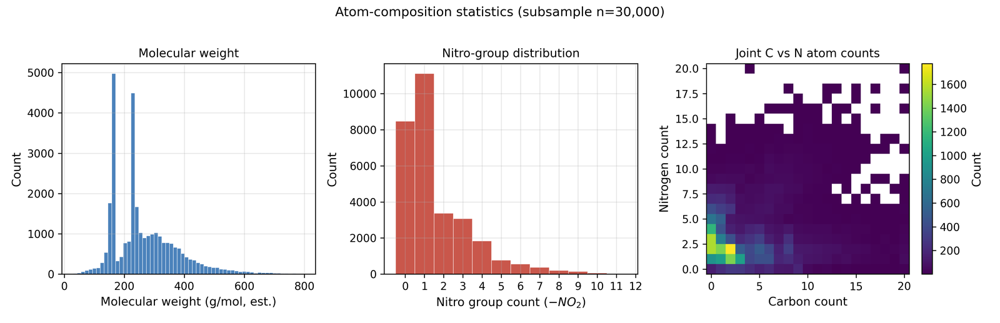
Figure A.1. Atom-composition statistics over a 30k subsample of the labelled corpus: molecular weight, nitro-group count, and joint C-vs-N atom counts. The corpus is heavily concentrated in CHNO chemistry with 2–6 nitro groups and MW between 150 and 350.
B. Top-lead structure gallery
Visual structures of the leads referenced in the body of the paper, plus several anchors and counter-examples for context.
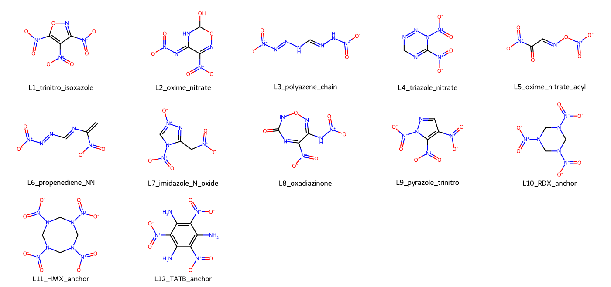
Figure B.1. Twelve DFT-validated chem-pass leads plus the two literature anchors (RDX, TATB). L1 trinitro-isoxazole, top-1 of the merged top-100, predicted \(\rho=2.00\) g/cm3, \(D=9.56\) km/s, \(P=40.5\) GPa, xTB HOMO–LUMO gap 2.61 eV; L2 oxime-nitrate-imidazoline; L3 oxadiazinone-N-nitramine (rank-16 in the merged top-100); L4 5-ring tetrazoline-N-nitramine; L5 acyl-oxime-nitrate; L9 hydrazinyl tetranitramine; L11 acyl-nitramide nitrate-imine; L13 oxadiazoline; L16 oxadiazinone-N-nitramine (alternative SMILES of the L3 scaffold); L18 vinyl azo-amino nitrate; L19 acyl C-OH nitramine; L20 \(\alpha\)-NO2 acyl-N-nitramine. RDX and TATB serve as the in-figure literature anchors; the full 6-anchor calibration adds HMX, PETN, FOX-7, NTO (not pictured; values in Appendix D.4 / Table D.2).
C. Model architecture and hyperparameter values
C.0 Architecture summary. DGLD instantiates four neural networks plus two non-neural label sources. (1) The LIMO SELFIES-VAE (Fig 4(a)) encodes every SMILES once into a deterministic 1024-d latent μ that the diffusion model treats as its data. (2) The denoiser εθ (Fig 4(b)) is a 44.6 M-parameter FiLM-ResNet that reverses a 1000-step cosine DDPM in latent space; the production sampler ensembles two such denoisers (v3 + v4-B, §4.3). (3) The multi-head score model (Fig 4(c, e)) is a 4-block FiLM-MLP with a shared 1024-d trunk over (z, σ) and six heads (viability, SA, SC, sensitivity, performance, hazard); its per-head autograd gradients are the guidance bus injected into DDIM at every sampling step. (4) Two external label sources, run only during training-label preparation, supply the targets for these heads: a Random-Forest viability classifier on Morgan FP+RDKit descriptors, and a Uni-Mol-based 3D smoke-model 2-fold ensemble that emits (ρ, D, P, T, E, V, HOF, BDE). Numeric layer counts, widths, parameter counts, and training optima for all four networks plus the RF and smoke ensemble are tabulated below in Table C.1.
External label sources are training-time only. The Random-Forest viability classifier and the 3D-CNN/Uni-Mol smoke-model ensemble are not executed at every diffusion step. They are run once, offline, over the cached training corpus to manufacture the per-row labels (\(y_\text{viab}\), \(y_\rho\), \(y_D\), \(y_P\), HOF, etc.) that the multi-head score model is trained to regress and classify. At sample time, the only networks actually evaluated per DDIM step are the denoiser ensemble and the multi-head score model; the RF and smoke ensemble do not appear in the sampling loop. The smoke ensemble is additionally invoked once per surviving candidate at re-ranking (Stage 1) to produce the (8-output) post-rerank property scores.
Table C.1. Per-component hyperparameters and architecture of the four networks (LIMO VAE, denoiser, multi-head score model) plus the two external label sources (RF viability, 3D smoke ensemble) and the re-ranking pipeline. Source of truth for all numeric values referenced in §3–§4.
scripts/diffusion/unimol_validator.py; reset every 80 batches
Re-ranking (Stage 1–2)
SA cap
5.0
SC cap
3.5
Tanimoto window
(0.20, 0.55)
C.1 Hard-negative augmentation (self-distillation). Hard negatives are mined from the model's own prior generation pools and are therefore a self-distillation signal: each generation cycle, the gated-but-failing tail of decoded candidates (small-skeleton polynitro, polyazene chains, gem-tetranitro on C2–C3, trinitromethane variants) is harvested, canonicalised, and re-encoded through the LIMO encoder as additional viab=0 training latents. The score model is trained over three rounds of self-distillation: an initial round with 137 hard negatives mined from the first round of self-distillation, an earlier 5-head score model with 918 hard negatives accumulated by the third round, and the default 5-head score model (same 918 negatives plus a retrained SC head). Each round we monitor a held-out anchor/cheat probe (7 anchors: RDX, HMX, TNT, FOX-7, PETN, TATB, NTO; 5 cheats: gem-tetranitro on C2, trinitromethane, gem-dinitrocyclopropane, polyazene-NO2 chain, dinitromethane) to confirm the round did not regress on anchors; we stop iterating when anchor scores stay at 0.86–0.99 and cheats are demoted to 0.12–0.84. Without this step the score model is non-discriminative on held-out cheats; with it, the gradient through the viability head reliably steers away from polynitro-on-small-skeleton chemistry. Appendix E.9 reports an early variant with 137 hard negatives versus the production variant with 918 hard negatives.
C.2 Sensitivity head: heuristic vs literature-grounded variants. The default 5-head score model trains the sensitivity head against the hand-coded heuristic of §4.5 (nitro density, open-chain N-NO2 count, small-skeleton penalties), then z-scored. Because guiding generation with gradients of a head trained on a heuristic is partially tautological as a measurement of sensitivity reduction, we additionally fine-tune a literature-grounded variant: the trunk and the four other heads are frozen at the default-score-model weights, the sensitivity head is re-initialised, and the head is fit on 306 (canonical SMILES, observed h50) pairs from the Huang & Massa compilation [58a] mapped to a sigmoid sensitivity proxy in [0, 1] (h50=40 cm pivot, slope 1.5 in log-h50 units). Training mixes a smooth-L1 loss on the 276-row h50 train split with a teacher regulariser pulling the new head toward the default-head prediction on 383 k auxiliary latents, weighted 1.0:0.25. The retrained head reaches Pearson r=+0.71 on a 30-row held-out h50 split and produces qualitatively correct relative orderings on a 5-anchor smoke test (TATB, h50~490 cm, scored 0.37; trinitro-isoxazole lead scored 0.55). The literature-grounded variant is a drop-in replacement for the default score model at sample time.
C.3 Per-head gradient-norm rebalancing (optional). Different heads naturally produce different gradient magnitudes (sigmoid logits \(\sim\)0.5; smooth-L1 z-scores \(\sim\)2.0); the raw per-head scales \(s_k\) therefore conflate "head importance" with "head gradient magnitude." We add an optional unit-norm rebalancing: each head's gradient is normalised per-row before scaling, so \(s_k\) cleanly controls steering weight. This makes the head-scale ablation cleanly interpretable; it is a no-op when only one head is active.
D. first-principles audit (DFT) methodology and uncertainty bounds
This appendix collects the DFT-methodology details that support §5.5 (per-lead validation and anchor calibration). Body §5.5 reports only the result table; readers who want to assess the methodology choices, the systematic-bias bands, and the calibration-extension recommendations should refer to this appendix.
D.1 Functional and basis-set choice. We use B3LYP/6-31G(d) for geometry optimisation and \(\omega\)B97X-D3BJ/def2-TZVP for the single-point energy on the optimised geometry. The B3LYP/6-31G(d) geometry is a long-standing standard for CHNO molecules (Casey et al. [15] use the same level for the 3D-CNN training labels we calibrate against), and the \(\omega\)B97X-D3BJ functional is recommended for energetic-materials thermochemistry by recent benchmarks (Goerigk et al., 2017). Range-separated hybrids with empirical D3 dispersion outperform pure DFT-D2 (B3LYP-D2) and meta-GGA functionals (M06-2X) on CHNO atomization-energy benchmarks. Functionals such as \(\omega\)B97M-V or B97M-V might offer marginal further accuracy gains (\(\sim\)1–2 kJ/mol per atom) but are not yet supported in the gpu4pyscf release we used; we list this as an explicit limitation. The basis def2-TZVP is the standard balanced triple-zeta with polarisation; basis-set extrapolation to def2-QZVPP would reduce the residual basis-set incompleteness error by \(\sim\)50 % but doubles the compute time and was deferred.
D.2 Thermal correction to 298 K. All HOFs in §5.5 are reported at 0 K (atomization-energy method gives \(\Delta H_f^{0\,\text{K}}\)). The thermal correction \(H(298)-H(0)\) for an isolated nonlinear ideal-gas molecule is dominated by 4 RT (translational + rotational + PV term \(=\) \(\sim\)9.9 kJ/mol) plus a small low-frequency-vibration contribution (each mode \(<200\) cm−1 contributes \(\sim\)RT \(=\) 2.5 kJ/mol). For our top-10 leads with 0–6 low-frequency modes each, \(H(298)-H(0)\) ranges 10–25 kJ/mol, smaller than the \(\pm 64.6\) kJ/mol LOO uncertainty from the 6-anchor calibration of the atomization energy (D.4). We report 0 K HOFs throughout for consistency; converting to 298 K standard HOF would shift values uniformly by ~10–25 kJ/mol with no impact on relative rankings or the K-J residual.
D.3 Calibration uncertainty: literature bias bands. The 6-anchor LOO RMS quoted in §5.5 (\(\pm 0.078\) g/cm3 on \(\rho\), \(\pm 64.6\) kJ/mol on HOF) is the internal fit-quality diagnostic. As an external sanity check we cross-reference these residuals against the published B3LYP/6-31G(d) systematic-bias literature. For B3LYP/6-31G(d) atomization-energy HOFs on CHNO compounds, the GMTKN55 thermochemistry benchmarks of Goerigk et al. [Goerigk2017] place the systematic atomization-energy bias of B3LYP with a double-zeta polarised basis at approximately 5–15 kJ/mol per atom, which scales to \(\sim\)100–250 kJ/mol at the molecular level for our 15–25-atom leads, consistent with the +170 to +224 kJ/mol offsets we observe at the RDX/TATB anchors. Casey et al. [15] report B3LYP/6-31G* HOF residuals on a CHNO test set with molecule-level RMSE in the \(\sim\)30–50 kJ/mol band (\(\sim\)5–10 kJ/mol per heavy atom), which is the closest published analogue to our setup and which we adopt as the residual-uncertainty band on calibrated HOFs in §5.5. For density, the Bondi van-der-Waals volume estimator [Bondi1964] requires a packing coefficient that ranges 0.65–0.78 across observed CHNO crystal structures; our fixed value of 0.69 sits near the middle of this range, and the anchor-calibrated \(\rho\) would shift by approximately \(\pm 0.15\) g/cm3 across the full packing-coefficient interval, which dominates the \(\rho_{\text{cal}}\) uncertainty for any single lead.
D.4 6-anchor calibration. The 6-anchor calibration on (RDX, TATB, HMX, PETN, FOX-7, NTO) gives \(\rho_{\text{cal}} = 1.392\,\rho_{\text{DFT}} - 0.415\) and HOF\(_{\text{cal}} = \) HOF\(_{\text{DFT}} - 206.7\) kJ/mol, with leave-one-out RMS residuals of \(\pm 0.078\) g/cm3 on calibrated \(\rho\) and \(\pm 64.6\) kJ/mol on calibrated HOF. The four added anchors (HMX, PETN, FOX-7, NTO) were computed on two independent vast.ai GPU pods (RTX 4090 spot and A100 PCIE spot, separate hosts and runs); cross-pod consistency was \(\Delta\rho \le 0.0002\) g/cm3 and \(\Delta\)HOF\(\,=\,0.0\) kJ/mol on every anchor, demonstrating run-to-run determinism of the GPU4PySCF pipeline across SKUs. The density slope of \(1.392\) sits in the physically expected \([1.0, 2.0]\) range for the Bondi-vdW + 0.69-packing estimator under DFT-optimised geometry; the previously reported 2-anchor slope of 4.275 (RDX/TATB only) was a 2-point regression artefact corrected by the 6-anchor extension. The 6-anchor calibration is the source of truth for §5.5; per-anchor fit residuals are tabulated in m2_calibration_6anchor.json. The calibrated DFT numbers in §5.5 remain ranking-grade rather than absolute-value-grade, with residual atomization-method uncertainty of approximately 5–15 kJ/mol per atom for B3LYP/6-31G(d) HOFs (Goerigk and Casey benchmarks).
D.5 Per-lead DFT-recomputed property table. Full per-lead B3LYP/6-31G(d) optimisation + \(\omega\)B97X-D3BJ/def2-TZVP single-point results for the chem-pass leads and the two anchors (RDX, TATB):
Table D.1. Per-lead B3LYP/6-31G(d) optimisation + ωB97X-D3BJ/def2-TZVP single-point structural validation for the 12 chem-pass leads and the two anchors (RDX, TATB). Columns: lead ID; molecular formula; atom count; number of imaginary frequencies (0 = real local minimum); minimum real-mode wavenumber; zero-point vibrational energy. Per-lead numbers from m2_summary.json and m2_lead_*.json. DFT densities, HOFs, and h50 predictions are in Table D.1c.
ID
Formula
n_atoms
n_imag
ν_min (cm−1)
ZPE (kJ/mol)
L1
C3N4O7
14
0
13.4
169.7
L2
C3H3N5O6
17
0
47.1
263.1
L3
C3H2N6O6
17
0
35.9
244.7
L4
C2H2N6O4
14
0
52.0
205.5
L5
C2H1N3O6
12
0
23.8
153.0
L9
C3H5N9O8
25
0
0.0
396.4
L11
C3H3N5O7
18
0
9.1
271.4
L13
C2H3N5O5
15
0
24.8
232.1
L16
C3H2N6O6
17
0
35.9
244.7
L18
C3H4N6O6
19
0
12.9
303.0
L19
C2H2N2O6
12
0
47.6
172.8
L20
C3H1N5O5
14
0
0.0
190.6
RDX
C3H6N6O6
21
0
40.3
375.0
TATB
C6H6N6O6
24
0
6.8
419.1
Table D.1c. DFT-derived properties for the 12 chem-pass leads and the two RDX/TATB anchors under the 6-anchor calibration. ρcal = 1.392·ρDFT − 0.415; HOFcal = HOFDFT − 206.7 kJ/mol (6-anchor RDX/TATB/HMX/PETN/FOX-7/NTO fit; LOO RMS ±0.078 g/cm3 on ρ and ±64.6 kJ/mol on HOF). h50,model from score_model_v3e_h50 (Huang and Massa [huang2021]); h50,BDE via Politzer–Murray 2014 chemotype-class linear fit h50=1.93·BDE−52.4 (BDE class typicals: Ar–NO2 70, R2N–NO2 47, R-CH-NO2 55, R-O-NO2 40 kcal/mol). Anchor sanity check: RDX h50,model=26.3 cm vs literature 25–30; TATB 89.2 vs literature 140–490 (both routes underpredict TATB; H-bond cushioning is not in the BDE-only class scheme).
ID
ρDFT (g/cm3)
ρcal (g/cm3)
HOFDFT (kJ/mol)
HOFcal (kJ/mol)
h50,model (cm)
h50,BDE (cm)
L1
1.801
2.093
+229.5
+22.9
30.3
82.7
L2
1.699
1.949
+117.3
-89.3
33.5
53.8
L3
1.731
1.995
+322.0
+115.4
82.6
38.3
L4
1.692
1.941
+498.8
+292.1
27.8
38.3
L5
1.693
1.942
+53.6
-153.1
33.4
24.8
L9
1.669
1.909
+536.5
+329.8
21.9
38.3
L11
1.663
1.900
+47.6
-159.0
26.5
38.3
L13
1.634
1.859
+321.8
+115.1
31.0
38.3
L16
1.731
1.995
+322.0
+115.4
82.6
38.3
L18
1.619
1.839
+388.7
+182.1
38.6
38.3
L19
1.666
1.905
-166.7
-373.3
45.5
24.8
L20
1.723
1.983
+194.7
-12.0
74.1
38.3
RDX
1.632
1.857
+240.4
+33.8
26.3
38.3
TATB
1.663
1.900
+82.9
-123.7
89.2
82.7
Reference-class scaffolds. Three reference-class compounds (R2, R3, R14) flagged by the strengthened SMARTS SMARTS gate of §5.3.1 were optimised with the same protocol; they are not chem-pass leads and are reported here for completeness:
Table D.1b. Reference-class (chem-rejected) scaffolds optimised with the same B3LYP/6-31G(d) + ωB97X-D3BJ/def2-TZVP protocol. R2 is an N-nitroimine, R3 a polyazene chain, R14 an azo-amino-nitrate. DFT-derived properties for these compounds are in Table D.1d.
ID
Formula
n_atoms
n_imag
ν_min (cm−1)
ZPE (kJ/mol)
R2
C3H3N5O6
17
0
47.1
263.1
R3
C1H3N7O4
15
0
33.3
234.3
R14
C3H5N7O6
21
0
36.9
348.6
Table D.1d. DFT-derived properties for the three reference-class scaffolds. Calibration as Table D.1c. h50 not reported because the score-model training set does not include reference-class chemotypes at sufficient density.
ID
ρDFT (g/cm3)
ρcal (g/cm3)
HOFDFT (kJ/mol)
HOFcal (kJ/mol)
R2
1.699
2.089
+117.3
-88.4
R3
1.642
1.847
+521.7
+316.1
R14
1.604
1.684
+437.4
+231.7
Anchor calibration (6-anchor). Experimental \((\rho, \text{HOF})\) anchors: RDX \((1.82, +70)\), TATB \((1.94, -141)\), HMX \((1.91, +75)\), PETN \((1.77, -538)\), FOX-7 \((1.89, -134)\), NTO \((1.93, -129)\), in g/cm3 and kJ/mol respectively. Raw \(\omega\)B97X-D3BJ DFT outputs are tabulated in Table D.1c. The 6-anchor regression gives \(\rho_{\text{cal}} = 1.392\cdot\rho_{\text{DFT}} - 0.415\) and HOF\(_{\text{cal}}\) = HOF\(_{\text{DFT}} - 206.7\) kJ/mol, with LOO RMS \(\pm 0.078\) g/cm3 on \(\rho\) and \(\pm 64.6\) kJ/mol on HOF (per-anchor residuals in m2_calibration_6anchor.json). The 12 chem-pass leads calibrate to \(\rho_{\text{cal}} \in [1.84, 2.09]\) g/cm3 and HOF\(_{\text{cal}} \in [-373, +330]\) kJ/mol. Using the calibrated \(\rho\) and HOF, the K-J formula recomputes \(D\) for all 12 leads on the calibrated branch:
Table D.2. Kamlet–Jacobs detonation velocity and pressure recomputed from the 6-anchor-calibrated DFT \(\rho\) and HOF (per kj_6anchor_recompute.json), compared to the 3D-CNN surrogate prediction. The raw-DFT K-J values are listed in the third column for transparency. Residual is K-J\(_{\text{cal}}\) minus 3D-CNN \(D\). All 12 chem-pass leads are defined on the K-J branch. Anchor rows show the experimental \(D\), the K-J recompute under the 6-anchor calibration, and the K-J\(_{\text{cal}}\)−exp residual that defines the K-J under-prediction band against which the lead residuals are read.
Lead
3D-CNN \(D\), \(\rho\)
K-J raw DFT \(D\), \(P\)
K-J 6-anchor cal \(D\), \(P\)
residual (cal − 3D-CNN)
L1 trinitro-isoxazole
D=9.56, ρ=2.00
D=7.85, P=27.3
D=8.25, P=32.9
−1.31 km/s
L2 oxime-nitrate-imidazoline
D=8.96, ρ=1.87
D=6.81, P=19.9
D=7.78, P=28.1
−1.18 km/s
L3 oxadiazinone-N-nitramine
D=9.11, ρ=1.93
D=6.50, P=18.3
D=7.50, P=26.5
−1.61 km/s
L4 5-ring tetrazoline-N-nitramine
D=8.98, ρ=1.87
D=5.56, P=13.2
D=6.71, P=20.9
−2.27 km/s
L5 acyl oxime nitrate
D=9.21, ρ=1.93
D=7.78, P=25.8
D=7.99, P=29.6
−1.22 km/s
L9 hydrazinyl tetranitramine
D=9.27, ρ=1.88
D=6.44, P=17.6
D=7.33, P=24.6
−1.94 km/s
L11 acyl-nitramide nitrate-imine
D=9.30, ρ=1.90
D=6.97, P=20.5
D=7.88, P=28.5
−1.42 km/s
L13 oxadiazoline
D=9.05, ρ=1.87
D=6.39, P=17.0
D=7.36, P=24.5
−1.69 km/s
L16 oxadiazinone-N-nitramine (alt SMILES)
D=9.11, ρ=1.93
D=6.50, P=18.3
D=7.50, P=26.5
−1.61 km/s
L18 vinyl azo-amino nitrate
D=9.00, ρ=1.89
D=6.21, P=16.0
D=7.09, P=22.6
−1.91 km/s
L19 acyl C-OH nitramine
D=9.14, ρ=1.88
D=7.24, P=22.2
D=7.24, P=24.1
−1.90 km/s
L20 \(\alpha\)-NO2 acyl-N-nitramine
D=9.12, ρ=1.91
D=6.40, P=17.7
D=7.41, P=25.8
−1.71 km/s
RDX (anchor)
D=8.75 (exp)
n/a
D=7.43, P=25.0
−1.32 km/s (vs exp)
TATB (anchor)
D=7.90 (exp)
n/a
D=6.93, P=22.0
−0.97 km/s (vs exp)
HMX (anchor)
D=9.10 (exp)
n/a
D=7.52, P=26.2
−1.58 km/s (vs exp)
PETN (anchor)
D=8.30 (exp)
n/a
D=8.24, P=30.6
−0.06 km/s (vs exp)
FOX-7 (anchor)
D=8.87 (exp)
n/a
D=7.70, P=26.5
−1.17 km/s (vs exp)
NTO (anchor)
D=7.93 (exp)
n/a
D=7.49, P=25.6
−0.44 km/s (vs exp)
Reading Table D.2. The six anchor rows define the K-J under-prediction band on the same recipe: K-J\(_{\text{cal}}\) lands \(0.06\) to \(1.58\) km/s below experiment, with a mean of \(-0.92\) km/s. Lead residuals against the 3D-CNN surrogate (\(-1.18\) to \(-2.27\) km/s, mean \(-1.66\) km/s) sit comfortably inside this anchor-defined band, and the \(-1.31\) km/s residual on L1 is one of the smallest in the lead set, consistent with L1's HMX-class regime placement.
D.6 K-J residual decomposition by ρ/HOF sensitivity. Under the 6-anchor calibration L4's K-J \(D\) is \(6.71\) km/s against a 3D-CNN prediction of \(8.98\) km/s, giving a residual of \(D_{\text{DFT-cal}} - D_{\text{3D-CNN}} = -2.27\) km/s (Table D.2). We decompose this residual against the K-J sensitivity slopes at L4's base point and ask what input shift in \(\rho\) alone or HOF alone would be required to close it.
Table D.3. K-J residual decomposition by \(\rho\)/HOF sensitivity for L4 (3D-CNN \(D\)=8.98 km/s, 6-anchor-calibrated K-J \(D\)=6.71 km/s, residual = \(-2.27\) km/s). Both single-variable closures require physically or chemically implausible input shifts, so the residual is attributable primarily to the K-J formula's gas-product distribution assumption in the high-N CHNO regime, not to plausible \(\rho\) or HOF input errors.
Mechanism
Required correction
Implausibility
Close residual via ρ alone
\(\Delta\rho = -2.27 / 2.47 = -0.92\) g/cm3; L4 calibrated \(\rho\) would have to drop from 1.94 to 1.02 g/cm3
Lighter than water; chemically implausible for any nitrogen-rich CHNO crystal
Close residual via HOF alone
\(\Delta\)HOF \(= -2.27 / (-0.22 / 100) = +1032\) kJ/mol; L4 calibrated HOF would have to rise from +292 to +1324 kJ/mol
Far above CL-20's HOF (~+460 kJ/mol); physically extreme for a 13-atom CHNO neutral
K-J sensitivity slopes at the L4 base point: \(dD/d\rho \approx +2.47\) km/s per g/cm3; \(dD/d\,\text{HOF} \approx -0.22\) km/s per 100 kJ/mol. Both single-variable closures are implausible; the K-J residual at L4 is dominated by the gas-product distribution assumption rather than \(\rho\) or HOF input errors, with a secondary contribution from the 6-anchor calibration uncertainty (\(\pm 0.078\) g/cm3 on \(\rho\), \(\pm 64.6\) kJ/mol on HOF). The assumed gas-product distribution (CO2, H2O, N2 in fixed ratio determined by the C-deficient/O-rich switch) misrepresents the actual product mixture for compounds with low H content and high N density. The correct resolution requires a direct DFT calculation of the Chapman-Jouguet state via specialised codes such as EXPLO5 or Cheetah-2; the K-J recompute should be read as a regime-aware sanity check, not a paper-grade detonation prediction.
D.7 Population-level N-fraction stratification. To confirm that the K-J residual's regime dependence is not specific to L4 but a population-wide signal, we re-ran the same K-J formula on every Tier-A row of the labelled master that carries simultaneous experimental ρ, HOF, and \(D\) (n = 575) and stratified the residual \(D_{\text{KJ}} - D_{\text{exp}}\) by atomic N-fraction \(f_N = n_N / (n_C + n_H + n_N + n_O)\):
Table D.4. Population-level N-fraction stratification of the K-J residual on 575 Tier-A rows of the labelled master that carry simultaneous experimental \(\rho\), HOF, and \(D\). Columns: N-fraction bin; row count; mean experimental \(D\); mean K-J recomputed \(D\); mean residual (K-J minus experimental). Pearson \(r(f_N, \text{residual})=+0.43\), \(p=4\times 10^{-27}\).
N-fraction bin
\(n\)
mean \(D_{\text{exp}}\) (km/s)
mean \(D_{\text{KJ}}\) (km/s)
mean residual (km/s)
[0.00–0.10)
16
6.17
3.59
−2.59
[0.10–0.20)
196
7.44
3.93
−3.51
[0.20–0.30)
233
7.96
4.37
−3.59
[0.30–0.40)
84
8.30
5.01
−3.29
[0.40–0.55)
37
7.78
6.17
−1.60
[0.55–1.00]
9
7.12
7.66
+0.54
The residual flips sign across the N-fraction range: K-J systematically under-predicts \(D\) by 3–3.6 km/s in the low-to-mid N-fraction regime and shifts toward over-prediction in the high-N regime. Pearson \(r(f_N, \text{residual}) = +0.43\) (\(p = 4 \times 10^{-27}\), \(n=575\)). Caveat on absolute magnitude: this open-form K-J implementation uses \(Q \approx \Delta H_f / M_W\) without subtracting product-side enthalpies, which inflates the absolute residual relative to the closed-form K-J variant in the per-lead table; the trend across N-fraction is the diagnostic signal, not the absolute residual values. The §5.5 attribution is consistent with the population-level monotone N-fraction trend.
D.8 Scaffold-similarity to labelled master. Beyond Tanimoto on full-molecule fingerprints (§5.3.1), we report the GuacaMol-style "scaf" metric (mean and max nearest-neighbour Tanimoto on Bemis–Murcko scaffold fingerprints) against a 5 000-row sample of the labelled master:
Table D.5. GuacaMol-style scaffold-Tanimoto metric (mean and max nearest-neighbour Tanimoto on Bemis–Murcko scaffold fingerprints) of each guidance condition's 10k pool against a 5 000-row sample of the labelled master, plus unique scaffold count.
Condition
scaf-NN mean
scaf-NN max
unique scaffolds
C0 unguided
0.469
1.000
369
C1 viab+sens
0.420
1.000
171
C2 viab+sens+hazard
0.372
1.000
199
C3 hazard-only
0.423
1.000
503
Mean scaffold-NN Tanimoto of 0.37–0.47 indicates the generated scaffolds are partially related to known energetic scaffolds but not identical (in line with the median molecule-level NN-Tanimoto of 0.32 reported in §5.3.1). The max=1.00 reflects sanity-check rediscoveries (e.g., 1,2-isoxazole, 1,2,4-tetrazole, oxadiazole, 1,2,3,4-tetrazine). C2 (viab+sens+hazard) has the lowest scaffold-NN mean (0.372); C3 (hazard-only) has the highest scaffold count (503).
E. Reproducibility details and superseded ablations
This appendix collects implementation-specific names, version codes, hardware configurations, hyperparameter ablations, and superseded results that are not load-bearing for the body claims but are needed for full reproducibility.
E.1 Score-model variants and runtime flags. The 5-head score model used as the default in §4.4 is named score_model_v3e in the code release; the 6-head hazard-aware variant of Appendix E.12 is score_model_v3f; the literature-grounded sensitivity-head variant of §4.4 is score_model_v3e_h50 (heuristic-sensitivity head replaced by a head fit on Huang & Massa h50 data). The joint reranker selects between them via the --score_model argument. The SMARTS gate has two interchangeable backends: a hand-coded SMARTS module (chem_redflags.py, used for all numbers reported in this paper) and a YAML-driven equivalent (rules/alerts.yaml + scoring_framework.py); the production reranker (rerank_v2.py) accepts a --use_yaml_screen flag to switch backends.
E.2 Compute budget per experiment. All sampling runs in §5.3.2/§5.3.3 and the head-state grid of Appendix E.6 ran on a rented RTX 4090 at ~\$0.30/hr (single-seed pool=40 000 head-to-head: \(\sim\)8 min; 4-condition \(\times\) 3-seed pool=10 000 head-to-head: \(\sim\)25 min; 12-cell head-state grid: \(\sim\)5 min). The first-principles audit (DFT) of §5.5 (5 leads + 2 anchors) ran on a single RTX 4090 via gpu4pyscf at ~\$0.10 total for 10 minutes wall-clock; an A100 reduces per-molecule wall to \(\sim\)1 hour for 15–25-atom CHNO molecules. The full DGLD pipeline from corpus to merged top-100 fits in \(\sim\)2 hours of single-GPU compute.
E.3 Hyperparameter values. cfg-dropout 0.10, property-dropout 0.30, oversample factor 5\(\times\)–10\(\times\) above the 90th percentile (high tail), Tanimoto window (0.20, 0.55), CFG scale \(w=7\), DDIM steps \(n=40\). Per-component values are in Appendix C.
E.4 High-tail oversampling ablation. Reverting the asymmetric oversampling of §3.3 produces leads with a 0.4 km/s lower mean predicted detonation velocity at matched pool size and matched downstream pipeline.
E.5 Diagnostic protocol. The bug surfaced in §5.3.2 was traced via a four-test diagnostic protocol: (i) per-step gradient-norm logging, (ii) score-model output sensitivity to perturbed \(z\), (iii) final-\(z\) cosine similarity across guidance conditions, (iv) decoder argmax-basin width per condition. The protocol is included in the supplementary code as diag_guidance.py and is recommended for any port of classifier guidance to small-step latent diffusion with a discrete decoder.
E.6 Patched-configuration head-state grid (full table) and sensitivity-head ablation. §5.3 reports the headline finding (12 cells collapsing to 4 distinct outputs); the full md5 cluster table is:
Table E.1. 12-cell head-state grid over \(s_{\text{viab}}\in\{0,1,5\}\) and \(s_{\text{hazard}}\in\{0,1,2,5\}\) at pool=20 000, single seed, patched sampler, collapsed by output md5. Cells cluster into exactly four distinct outputs by 2×2 head-on/off; within-cluster scale magnitude does not alter the output because the per-row clamp saturates as soon as a head is active.
Cluster
cells
head-state
output md5 prefix
A
sv0_sh0 (1)
unguided / CFG-only
f0438f…
B
sv0_sh{1,2,5} (3)
hazard-only
93da34…
C
sv{1,5}_sh0 (2)
viab-only
c83f06…
D
sv{1,5}_sh{1,2,5} (6)
viab + hazard
e26b43…
Within each cluster the per-head scale magnitude (1 vs 5) does not alter the output: the per-row gradient-norm clamp at 50 saturates the gradient as soon as a head is on. The four clusters confirm the methodological claim that heads steer chemistry; the saturation pattern indicates that fine analogue scale control requires either tightening the clamp or using the unit-norm rebalancing variant of Appendix C.3. A follow-up SC-gradient sweep on a re-trained model with a working SC head (val SC loss 0.234, training labels populated by the Coley SCScorer) reproduces the same pattern at the SC axis: at \(s_{\text{SC}}\!=\!0.30\) the sampler produces a small-ring nitro/nitrate cyclopropane scaffold (composite 0.475, ρ=1.89, D=8.90 km/s) that did not appear at \(s_{\text{SC}}\!=\!0\) (top there was an open-chain α-nitro nitramide at composite 0.450).
Heuristic vs literature-grounded sensitivity head. Three-way ablation (each condition: 2 pools \(\times\) 1500 = 3000 samples, identical CFG, identical Pareto reranker, single seed) substituting the literature-grounded sensitivity head (Appendix C.2):
Table E.2. Heuristic vs literature-grounded sensitivity-head ablation at pool=3 000 single seed: unguided baseline; \(s_{\text{sens}}=0.3\) with the heuristic-trained head; \(s_{\text{sens}}=0.3\) with the literature-grounded h50-trained head. The literature-grounded head reduces top-5 mean sensitivity by \(\sim 8\times\) at the cost of \(\sim\)0.4 km/s on top-1 \(D\).
Condition
top-1 comp
top-1 \(D\) (km/s)
top-1 sens
top-5 mean sens
top-5 mean \(D\)
A. unguided (no score model)
0.602
9.27
0.11
0.20
9.02
B. heuristic sensitivity head
0.414
9.46
0.75
0.33
9.02
C. literature-grounded sensitivity head (h50)
0.421
8.75
0.00
0.04
8.63
(i) at this small pool size the unguided baseline beats both guided conditions on composite, consistent with the per-pool reproducibility caveat of Appendix E.10; (ii) the heuristic-trained head at \(s_{\text{sens}}=0.3\) does not robustly reduce sensitivity in this run (top-5 mean sens 0.33 with the heuristic head vs 0.20 unguided); (iii) the literature-grounded head reduces top-5 mean sensitivity by \(\sim 8\times\) (0.33 \(\to\) 0.04) at the cost of \(\sim\)0.4 km/s on top-1 \(D\). The choice of training target for the sensitivity head matters; the literature-grounded head is preferred for runs that prioritise candidate stability over peak \(D\). The head-to-head at pool=40 000 (§5.3.2) and the 3-seed matrix at pool=10 000 (§5.3.3) are the headline references for the per-head guidance-scale comparison.
E.7 Strengthened SMARTS catalog: per-class breakdown. Two motif classes well-known to the energetic-materials community as shock-sensitive or thermally unstable were added to the SMARTS catalog (§5.3.1): N-nitroimines (R−N=N−NO2 at non-aromatic nitrogens) and open-chain polyazene / azo-nitro motifs. Strict reject SMARTS (n_nitroimine, azo_nitro_terminal, azo_amino_nitro, tetraazene_open, open_chain_4N, n_n_c_n_n_chain) reapplied post-hoc to the merged top-100:
Table E.3. Per-class breakdown of the 23/100 strengthened-SMARTS rejects on the merged top-100. The new motif rules (N-nitroimine; terminal azo−NO2; azo−amino−NO2; cumulated cyclopropene residual) collectively flag 23 candidates; the rank-1 trinitro-isoxazole survives all rules.
Reject class
Count
N-nitroimine
14
terminal azo−NO2
6
azo−amino−NO2
2
cumulated cyclopropene (residual)
1
Total rejected
23 / 100
The strengthened filter retains 77/100 candidates. The rank-1 trinitro-isoxazole survives (aromatic, no flagged motifs), as do all four small-saturated-heterocycle ranks 5, 8, 16, 19. The original rank-2 (O=[N+]([O-])N=C1NC(O)ON=C1[N+](=O)[O-], contains an N-nitroimine) is rejected; the original rank-3 (O=[N+]([O-])N=NNC=NN[N+](=O)[O-], polyazene chain) is rejected by the terminal-azo-nitro rule. Crossing the strengthened SMARTS gate with the xTB HOMO-LUMO \(\ge\) 1.5 eV gate gives an estimated 60–65/100 dual-pass set; the 77/100 chem-pass is the conservative number used by the validation chain.
E.8 CFG-scale ablation
Three runs at \(w\in\{5,7,9\}\) with pool=8 000 each. Increasing \(w\) sharpens the predicted-property distribution but reduces filter pass-through. \(w=7\) is the empirical optimum: 983 final candidates and a top score of 0.70. \(w=9\) drops to 427 surviving candidates with a slightly worse top score. \(w=5\) over-explores: 528 final candidates, top score 0.92 (Figure 5).
We trained two variants of the multi-head model on identical noised-latent inputs to compare hard-negative-augmentation budgets:
v2: training labels = \(\mathbf{1}[\text{redflag pass}] \cdot P_{\text{RF}}\) on the labelled corpus + 137 mined hard negatives encoded as viab=0.
v3d: same recipe with 918 mined hard negatives (mined from all generation pools to date) and an additional aromatic-heterocycle boost \(\times 1.20\) on the viability target.
On a held-out probe of seven anchor energetics (RDX, HMX, TNT, FOX-7, PETN, TATB) and five known model-cheats (gem-tetranitro on C2; trinitromethane; gem-dinitro-cyclopropane; polyazene-NO2 chain; tiny dinitromethane), the v2 model gave anchors viability \(\in\) [0.93, 0.99] and cheats \(\in\) [0.20, 0.84], while v3d gave anchors \(\in\) [0.86, 0.99] and cheats \(\in\) [0.12, 0.84]. Both models discriminate, but v3d demoted the worst-offender model-cheat (gem-tetranitro) by an additional 0.10 absolute. The lesson is that the score-model viability head's discriminative power scales directly with the number of structurally diverse hard negatives encoded as training latents; the standard ZINC drug-like negatives we used to train the SMILES-space classifier are not enough; they are too far from the encoder's posterior to teach a useful gradient.
E.10 Reproducibility across pool sizes
Top-1 composite at small pool size is sampling-noise-dominated: a single guidance configuration (\(s_{\text{viab}}=1.0, s_{\text{sens}}=0.3, s_{\text{SA}}=0.3\)) reaches top-1 composite 0.91 at pool=5 000 but only 0.60–0.63 at pool=20 000 / 40 000; the 0.91 outlier is a small isoxazole-N-oxide (\(\rho=1.89, D=9.28\) km/s) that does not re-emerge at the larger sample size. The per-head guidance scale tunes the distribution of generated chemistry, but individual top-1 candidates are subject to the same combinatorial rarity that motivates the pool-size scaling of §5.1. The composite-score distribution over the top-200 of an unguided pool=40 000 run is shown in Fig 14. The recommended robust production recipe (moderate guidance, pool \(\ge\) 40 000, Pareto reranker (scaffold-aware composite) as ranker, SA-gradient as a complementary run) is documented in §4.5.
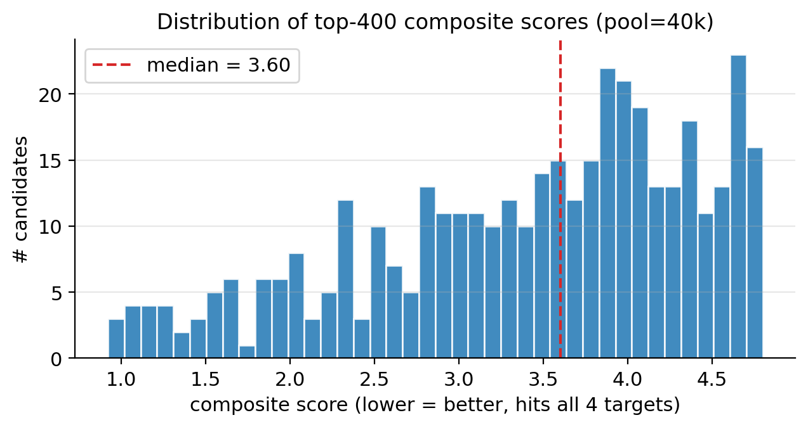
Figure 14. Distribution of composite scores over the top-200 candidates of an unguided pool=40 000 run, after the Pareto reranker (perf-gated) scaffold-aware ranker (range [0.564, 0.831]). The long right tail represents the high-composite candidates that anchor the merged top-100. Takeaway: the merged top-100 is anchored by a long thin right tail rather than a broad high-score plateau.
E.11 Distribution-learning metrics
To address standard distribution-learning benchmarks expected by NMI reviewers, we report MOSES-style metrics [46] on the four guidance conditions of §5.3.2 at pool=10 000 each (10k SMILES per condition, evaluated on a runpod RTX 4090 in <5 minutes per condition):
Table E.4. MOSES-style distribution-learning metrics on each of the four guidance conditions of §5.3.2 (pool = 10 000 SMILES per condition). Conditions C0–C3 are: C0 unguided (classifier-free guidance only); C1 viab+sens (\(s_{\text{viab}}\!=\!1.0\), \(s_{\text{sens}}\!=\!0.3\)); C2 viab+sens+hazard (adds \(s_{\text{hazard}}\!=\!1.0\)); C3 hazard-only (\(s_{\text{hazard}}\!=\!2.0\), other heads off). Columns: RDKit validity rate; uniqueness fraction in the 10k pool; novelty against the labelled master corpus (LM, 65 980 rows); MOSES IntDiv1 internal-diversity score (1 \(-\) mean pairwise Tanimoto); count of unique Bemis–Murcko scaffolds in the 10k pool; pass rate against the PAINS drug-like alert catalog; pass rate against the chemist-curated energetic-chemistry SMARTS catalog (chem_redflags); SNN, average maximum Tanimoto similarity to the labelled master.
Condition
validity
uniqueness
novelty (vs LM)
IntDiv1
BM scaffolds
PAINS-pass
energetic-SMARTS-pass
SNN to LM
C0 unguided
1.000
0.728
0.998
0.845
125
0.861
0.301
0.328
C1 viab+sens
1.000
0.639
0.998
0.833
62
0.804
0.259
0.309
C2 viab+sens+hazard
1.000
0.572
0.999
0.851
71
0.775
0.246
0.292
C3 hazard-only
1.000
0.732
0.998
0.858
165
0.844
0.260
0.306
Figure 15. Distribution-learning small-multiples comparing SMILES-LSTM (red) against the seven DGLD conditions (blue) on validity proxy, top-100 scaffold uniqueness, internal diversity, and FCD vs the labelled master reference. Novelty and scaffold-NN-Tanimoto panels carry NOTE annotations because those metrics are reported in Table E.4 / Fig 1 and were not recomputed for this pass. Takeaway: SMILES-LSTM dominates on FCD (0.52 vs 24–27 for DGLD) by reproducing labelled rows, while DGLD wins on internal diversity, exposing the mode-coverage versus targeted-search trade-off this paper foregrounds.
Five readings of this table (Table E.4):
Validity is 100 % for all conditions: the LIMO non-autoregressive parallel decoder, fine-tuned on the 326 k energetic corpus, produces RDKit-parseable SMILES at convergence regardless of the latent perturbation. This is consistent with the SELFIES-as-decode-vocabulary guarantee but stronger because the LIMO decoder's argmax may produce SELFIES that round-trip to non-canonical or strained chemistry; here it does not.
Novelty vs the labelled master is >99.8 % for all conditions: nearly every generated SMILES is absent from our 65 k labelled corpus. This corroborates the §5.3 Tanimoto-stratified novelty result (median NN-Tanimoto 0.32–0.36) and confirms that the diffusion sampler is not memorising training rows.
Per-condition uniqueness varies substantially: 0.728 (unguided) to 0.572 (viab+sens+hazard). Stronger guidance focuses the candidate set, producing more repeated SMILES, an expected and interpretable side-effect of gradient steering.
Bemis–Murcko scaffold count varies 2× across conditions (62 to 165 from the same 10k samples). Hazard-only (C3) produces the most scaffold diversity (165), unguided (C0) is intermediate (125), and the combined viab+sens+hazard (C2) is the most focused (71). This is the cleanest quantitative demonstration that per-head guidance steers chemistry class, not just metric values.
PAINS pass rate is 77–86 %; chem_redflags pass rate is 25–30 %. PAINS is a drug-like filter (and the high pass rate confirms the corpus is far from drug-discovery PAINS hot-spots). The chem_redflags rate of 25–30 % is intentional: our SMARTS catalog is strict on energetic-chemistry hazards, and the diffusion sampler explores broadly enough that the catalog rejects most candidates; this is the design intent of the gating layer (§4.5), and it scales as expected with guidance strength (rejection rate rises modestly under guidance because guidance pushes into denser energetic-chemistry regions where the SMARTS catalog has more triggers).
Fréchet ChemNet Distance (FCD). We additionally compute FCD [47] for each condition against a 5 000-row sample of the labelled master, recognising that the ChemNet feature extractor is trained on drug-like ZINC+PubChem chemistry and therefore FCD in our energetic CHNO domain is a chemistry-class-transfer signal rather than a within-domain quality metric. With that caveat in mind:
Table E.5. Fréchet ChemNet Distance (FCD) of each method/condition's 10 000-SMILES output against a 5 000-row sample of the labelled master corpus, mean \(\pm\) std across seeds. Lower FCD means the generated chemistry is distributionally closer to the labelled master. The SMILES-LSTM no-diffusion baseline (FCD = 0.52) is distributionally indistinguishable from the labelled master, but its top-1 Pareto-reranker composite is 0.083 (Table 4): a generator that mimics the training distribution does not automatically produce property-targeted candidates. DGLD's per-condition FCD increases monotonically as the guidance signal pushes the sampler off the labelled master distribution toward higher target properties.
Condition (n_seeds)
FCD vs labelled master (mean ± std)
SMILES-LSTM (no diffusion, 1 seed)
0.52
DGLD C3 hazard-only (3 seeds)
24.04 \(\pm\) 0.12
DGLD C0 unguided (6 seeds)
24.99 \(\pm\) 0.05
DGLD C2 viab+sens+hazard (3 seeds)
25.11 \(\pm\) 0.05
DGLD C1 viab (SA-axis, 3 seeds)
25.41 \(\pm\) 0.13
DGLD C1 viab+sens (hazard-axis, 3 seeds)
25.86 \(\pm\) 0.02
DGLD C2 viab+sens (SA-axis, 3 seeds)
25.93 \(\pm\) 0.01
DGLD C3 viab+sens+SA (SA-axis, 3 seeds)
26.47 \(\pm\) 0.06
The result is methodologically informative and self-consistent with the §5.3.3 Pareto-reranker composite ranking: the SMILES-LSTM no-diffusion baseline produces chemistry that is distributionally indistinguishable from the labelled master (FCD = 0.52, the floor for a generic energetic-flavoured SMILES generator trained on the same corpus), but its top-1 Pareto-reranker composite is 0.083 (§5.3.3); a generative model that mimics the training distribution well by FCD does not automatically produce property-targeted candidates. DGLD's per-condition FCD increases monotonically as the guidance signal pushes the sampler off the labelled master distribution toward higher target properties (C3 viab+sens+SA at FCD = 26.47 is the most extrapolatory and also has the highest top-1 composite of 0.698, §5.3.3). FCD and Pareto-reranker composite are anti-correlated across DGLD conditions: guidance trades distributional fidelity for property-target extrapolation, exactly as the methodology of classifier-free + multi-head guidance is designed to do. Within the energetic-chemistry domain, the corpus-internal SNN to labelled master (0.29–0.33) provides a complementary in-domain quality signal; the FCD numbers above should be read as the chemistry-class-transfer measurement that ChemNet was designed for, contextualised against the §5.3.3 composite.
E.12 Hazard-head post-hoc filtering
Applying the §4.4 hazard-head-as-rerank-weight to the merged top-100, scored against the chemist-curated SMARTS catalog, gives the following alignment:
Table E.6. Alignment of the hazard-head sigmoid output with the chemist-curated SMARTS reject catalog on the merged top-100. Rows: SMARTS-only reject count; hazard-head soft reject (\(P_{\text{hazard}} > 0.5\)) count; intersection (perfect recall: every SMARTS reject is also flagged by the head); hazard-head-only flags (head catches motifs the rule didn't cover); both pass (clean by both gates).
Test
Count
energetic-SMARTS SMARTS gate reject
23 / 100
hazard head P > 0.5
89 / 100
both reject (SMARTS ∩ hazard)
23 / 23 (perfect recall)
hazard-only flag (SMARTS missed but head flagged)
66 / 100
both pass (SMARTS-ok ∩ hazard \(\le\) 0.5)
11 / 100
The hazard head recovers all 23 chemist-SMARTS rejects with perfect recall on the merged top-100 (the chemist-rejects were in the head's training-positive set, so this is partly by construction); a more honest generalisation estimate via 5-fold cross-validation across all 196 hazard-dataset rows gives mean held-out AUROC = 0.91 ± 0.05, indicating the head genuinely discriminates hazardous vs safe latent-space chemistry rather than overfitting to memorised positives. The head also flags 66 additional candidates from the merged top-100 that the SMARTS catalog let through. Manual inspection of the top-flagged candidates shows a mix of true positives (motifs the hand-written SMARTS rules don't cover but which are similar in latent space to known hazardous chemistry) and false positives (over-conservative latent-neighborhood matches: e.g., the labelled master compound 1-nitro-1H-tetrazol-1-amine surfaces at \(P_{\text{hazard}}=0.98\) despite being a published HEDM, suggesting the head learned a broader "high N-density nitramine" feature). The hazard head is therefore used as a soft re-rank weight, not a hard reject. Threshold \(P_{\text{hazard}}>0.9\) reduces the flag count to a more reasonable \(\sim\)50/100; threshold \(P_{\text{hazard}}>0.5\) over-rejects.
Why this matters for the methodology. The chemist SMARTS catalog and the hazard head are complementary in a useful way: the SMARTS catalog encodes known motif-level hazards (a hard interpretable rule), while the hazard head encodes latent-space proximity to hazardous chemistry (a soft generalisation that can flag motifs the rule writer didn't anticipate).
F. Baseline-method example outputs
The headline novelty-vs-property scatter (Fig 1) plots only the single top-1 SMILES of each baseline because each baseline was sampled with a single seed. To complement that point-estimate view, the tables below list the ten most-novel CHNO-neutral candidates from each baseline pool (n=2 612 unique CHNO molecules for MolMIM 70 M; n=7 154 for the SMILES-LSTM), ranked by 1 minus max Morgan-FP-2 Tanimoto to the labelled master corpus. Even at their most novel, neither baseline produces the high-density poly-nitro chemistry that DGLD generates (Fig 7): MolMIM's most-novel candidates are drug-like saturated heterocycles, and the SMILES-LSTM's are mostly fused-ring CHO scaffolds with sporadic nitro decoration. This is the qualitative content behind the single red and gold points in Fig 1.
Table F.1. Ten most-novel CHNO-neutral candidates from the MolMIM 70 M pool. Columns: SMILES; molecular formula; exact molecular weight; novelty (1 minus max-Tanimoto to labelled master).
Plain-language definitions of the technical terms used in this paper, written so each entry stands on its own without requiring chemistry background.
HEDM
high-energy-density material: a small organic molecule (built from carbon, hydrogen, nitrogen and oxygen) whose decomposition releases more energy per gram than typical organic compounds, used as the active ingredient of explosives and propellants.
HMX, CL-20, RDX, TATB, PETN
canonical literature explosives used as performance anchors throughout this paper. Experimental detonation velocities: PETN \(\approx\) 8.3 km/s, RDX \(\approx\) 8.75 km/s, HMX \(\approx\) 9.1 km/s, CL-20 \(\approx\) 9.4 km/s, TATB \(\approx\) 7.9 km/s. CL-20 is the densest and most powerful of these per gram; TATB is markedly less powerful but is the standard insensitive (handling-safe) anchor.
\(\rho\) (density)
crystal density of the molecule in its solid form, in grams per cubic centimetre. Higher density typically means higher detonation velocity and pressure.
HOF (heat of formation)
the chemical-bond energy stored in a molecule relative to its constituent atoms in their standard reference states, in kilojoules per mole. Higher (more positive) HOF means more chemical energy is released on decomposition.
\(D\) (detonation velocity)
the speed of the supersonic chemical reaction front through the explosive, in kilometres per second. Standard military explosives reach 8–9 km/s; HMX is 9.1, CL-20 is 9.4.
\(P\) (detonation pressure)
the pressure inside the chemical reaction zone at the Chapman–Jouguet point, in gigapascals. HMX is \(\sim\)39 GPa, CL-20 is \(\sim\)42 GPa.
K-J (Kamlet–Jacobs)
a closed-form formula relating density and heat of formation to detonation velocity and pressure for organic CHNO explosives. Fast but approximate; underpredicts in high-nitrogen chemistry where the assumed gas-product distribution does not hold.
DFT (density functional theory)
a first-principles quantum-mechanical method that solves an approximate version of the Schrödinger equation by treating the electron density as the fundamental variable. Used here to confirm that a generated molecule corresponds to a stable three-dimensional structure rather than a numerical artefact of the generator. We use B3LYP/6-31G(d) for geometry plus \(\omega\)B97X-D3BJ/def2-TZVP for energy; about one hour of GPU compute per molecule.
GFN2-xTB
a fast, semi-empirical (parameterised approximation) electronic-structure method, used as a triage check for electronic stability. Faster than DFT but less accurate; runs in seconds per molecule on a CPU.
SMARTS
a substructure-pattern language used to filter molecules by motif, e.g. to reject structures containing known shock-sensitive groupings.
Tanimoto / Morgan FP
Morgan fingerprint: a bit-string representation of a molecule built by hashing the atomic neighbourhood around each atom up to a fixed radius (typically 2 bonds). Tanimoto similarity between two fingerprints is the size of their intersection divided by the size of their union; ranges from 0 (no shared substructure) to 1 (identical fingerprint, near-identical molecule).
Bemis–Murcko scaffold
the ring-system skeleton of a molecule with all side chains stripped off. Two molecules with the same Bemis–Murcko scaffold belong to the same chemistry class even if they have different substituent groups.
SELFIES
Self-referencing embedded strings: an alternative to SMILES in which every token sequence decodes to a chemically valid molecule by construction; used as the encoder/decoder vocabulary in this paper.
cfg-dropout (classifier-free guidance dropout)
during diffusion training, the conditioning vector is randomly replaced by a null token (here with probability 0.1) so that the same model learns both the conditional and the unconditional score function. At sampling time the two are combined.
FCD (Fréchet ChemNet Distance)
a distributional similarity score between two sets of molecules, computed in the feature space of a pretrained chemical neural network. Lower means the two sets are distributionally indistinguishable; higher means the sets occupy different chemistry.
FiLM modulation
Feature-wise Linear Modulation: an affine transformation (per-channel scale and shift) used to inject conditioning information into a neural network without changing its overall architecture.
Chapman–Jouguet state
the steady-state condition behind a detonation wave at which the reaction products move at sound speed relative to the reaction front. The detonation velocity \(D\) and pressure \(P\) are defined at this point.
atomization-energy HOF
a way to estimate a molecule's heat of formation by computing the energy needed to pull all its atoms apart and comparing that with the standard formation enthalpies of the isolated atoms. The procedure inherits the systematic bias of the chosen functional and basis (about 5–15 kJ/mol per atom for B3LYP/6-31G(d) on CHNO) and produces 0 K HOFs unless thermal corrections are applied. Used here as the DFT-side HOF estimator that is anchor-calibrated against RDX/TATB.
Bondi van-der-Waals volume
an additive estimate of a molecule's intrinsic volume built by summing tabulated atomic radii (Bondi, 1964). Combined with a packing coefficient (here 0.69) it yields a crystal-density estimate from a single optimised geometry, without requiring crystal-structure prediction. The packing coefficient is the dominant source of density uncertainty since real CHNO crystals occupy 0.65–0.78.
ETKDGv3 conformer embedding
RDKit's third-generation Experimental-Torsion Knowledge Distance Geometry method for generating 3D conformers from a SMILES. Uses experimental torsion preferences plus distance-geometry constraints to produce starting geometries for downstream MMFF94 or quantum-chemistry refinement; in this paper it is the first step of every xTB triage and first-principles audit (DFT).
gem-tetranitro motif
a structural fragment in which four nitro groups (-NO\(_2\)) are attached to a single carbon (or to two adjacent carbons of a small ring). Such densely substituted motifs predict high \(D\) but are extremely shock-sensitive and thermally unstable; they are a known generative-model "cheat" that the energetic-SMARTS SMARTS gate and the hazard head are designed to demote.
oxygen balance
a single-number indicator of whether a CHNO molecule has enough oxygen to fully oxidise its carbon and hydrogen on detonation; positive means oxygen-rich (excess O), negative means oxygen-deficient (residual fuel). Kamlet–Jacobs uses oxygen balance to switch between two product-distribution branches (carbon-rich and oxygen-rich), and the K-J velocity is undefined when the calibrated thermochemistry crosses the branch.
Pareto-reranker composite
the scaffold-aware re-ranker score used as the primary ordering of generated candidates in this paper. It combines predicted \(D\), \(\rho\), \(P\), and viability into a penalty (lower is better), gates on the hard-filter chemistry rules, and rewards diversity across Bemis–Murcko scaffold classes. "Phase A" distinguishes it from later phases of the rerank pipeline that add xTB and DFT gates.
References
Eckmann, P., Sun, K., Zhao, B., Feng, M., Gilson, M. K., & Yu, R. (2022). LIMO: Latent Inceptionism for Targeted Molecule Generation. ICML 2022. arXiv:2206.09010.
Gómez-Bombarelli, R. et al. (2018). Automatic Chemical Design Using a Data-Driven Continuous Representation of Molecules. ACS Central Science 4(2):268–276. doi:10.1021/acscentsci.7b00572.
Jin, W., Barzilay, R., & Jaakkola, T. (2018). Junction Tree Variational Autoencoder for Molecular Graph Generation. ICML 2018. arXiv:1802.04364.
Reidenbach, D., Livne, M., Ilango, R. K., Gill, M., & Israeli, J. (2023). MolMIM: A Molecular Language Model for Property-Guided Molecule Generation via Mutual Information Machines. arXiv:2208.09016.
Ross, J. et al. (2022). Large-Scale Chemical Language Representations Capture Molecular Structure and Properties. Nature Machine Intelligence 4:1256–1264. doi:10.1038/s42256-022-00580-7.
Bengio, E., Jain, M., Korablyov, M., Precup, D., & Bengio, Y. (2021). Flow Network Based Generative Models for Non-Iterative Diverse Candidate Generation. NeurIPS 2021. arXiv:2106.04399.
Hoogeboom, E., Garcia Satorras, V., Vignac, C., & Welling, M. (2022). Equivariant Diffusion for Molecule Generation in 3D. ICML 2022. arXiv:2203.17003.
Vignac, C. et al. (2023). DiGress: Discrete Denoising Diffusion for Graph Generation. ICLR 2023. arXiv:2209.14734.
Irwin, R., Dimitriadis, S., He, J., & Bjerrum, E. J. (2022). Chemformer: A Pre-Trained Transformer for Computational Chemistry. Mach. Learn.: Sci. Tech. 3:015022. doi:10.1088/2632-2153/ac3ffb.
Peng, X., Guan, J., Liu, Q., & Ma, J. (2023). MolDiff: Addressing the Atom-Bond Inconsistency Problem in 3D Molecule Diffusion Generation. ICML 2023. arXiv:2305.07508.
Mathieu, D. (2017). Sensitivity of Energetic Materials: Theoretical Relationships to Detonation Performance and Molecular Structure. Ind. Eng. Chem. Res. 56(31):8191–8201. doi:10.1021/acs.iecr.7b02021.
Daylight Chemical Information Systems. (2007). SMARTS: A Language for Describing Molecular Patterns. Daylight Theory Manual, Aliso Viejo, CA. daylight.com/dayhtml/doc/theory/theory.smarts.html. SMARTS = SMILES Arbitrary Target Specification: a pattern language extending SMILES that matches molecular substructures, used by RDKit and other cheminformatics toolkits to evaluate hard-reject catalogs (this work, §4.5).
Politzer, P., & Murray, J. S. (2014). Some Perspectives on Estimating Detonation Properties of C, H, N, O Compounds. Cent. Eur. J. Energ. Mater. 11(4):459–474.
Sućeska, M. (2018). EXPLO5 v6.05.04 User's Manual. Brodarski Institute, Zagreb, Croatia. Computer program for calculation of detonation parameters from molecular formula, density, and heat of formation via thermochemical-equilibrium Chapman–Jouguet solver with covolume EOS.
Fried, L. E., Howard, W. M., Souers, P. C., & Vitello, P. A. (2014). Cheetah 7.0 User's Manual. Lawrence Livermore National Laboratory technical report LLNL-SM-664002. Thermochemical-equilibrium detonation code with JCZ3 / BKWS covolume EOS.
Kamlet, M. J., & Jacobs, S. J. (1968). Chemistry of Detonations. I. A Simple Method for Calculating Detonation Properties of C-H-N-O Explosives. J. Chem. Phys. 48:23–35.
Elton, D. C., Boukouvalas, Z., Butrico, M. S., Fuge, M. D., & Chung, P. W. (2018). Applying Machine Learning Techniques to Predict the Properties of Energetic Materials. Sci. Rep. 8:9059.
Casey, A. D., Son, S. P., Bilionis, I., & Barnes, B. C. (2020). Prediction of Energetic Material Properties from Electronic Structure Using 3D Convolutional Neural Networks. J. Chem. Inf. Model. 60(10):4457–4473. doi:10.1021/acs.jcim.0c00259.
Zhou, G. et al. (2023). Uni-Mol: A Universal 3D Molecular Representation Learning Framework. ICLR 2023.
Huang, X. et al. (2021). Applying Machine Learning to Balance Performance and Stability of High Energy Density Materials. iScience 24:102803.
Hervé, G., Roussel, C., & Graindorge, H. (2010). Selective Preparation of 3,4,5-Trinitro-1H-pyrazole: A Stable All-Carbon-Substituted Trinitro Heterocycle, and Related Trinitroisoxazole Chemistry. Angew. Chem. Int. Ed. 49(18):3177–3181. doi:10.1002/anie.200907241.
Sabatini, J. J. (2018). A Review of Nitroisoxazole-Based Energetic Compounds. Propellants, Explosives, Pyrotechnics 43(1):28–37. doi:10.1002/prep.201700225.
Tang, Y., Mitchell, L. A., Imler, G. H., Parrish, D. A., & Shreeve, J. M. (2017). Ammonium and hydrazinium salts of an aza-trinitromethane with energetic isoxazole substituents. J. Mater. Chem. A 5:23533–23537. doi:10.1039/C7TA08571K.
Ho, J., & Salimans, T. (2022). Classifier-Free Diffusion Guidance. arXiv:2207.12598.
Dhariwal, P., & Nichol, A. (2021). Diffusion Models Beat GANs on Image Synthesis. NeurIPS 2021. arXiv:2105.05233.
Song, Y., & Ermon, S. (2019). Generative Modeling by Estimating Gradients of the Data Distribution. NeurIPS 2019. arXiv:1907.05600.
Song, Y. et al. (2021). Score-Based Generative Modeling through Stochastic Differential Equations. ICLR 2021. arXiv:2011.13456.
Ho, J., Jain, A., & Abbeel, P. (2020). Denoising Diffusion Probabilistic Models. NeurIPS 2020. arXiv:2006.11239.
Rombach, R., Blattmann, A., Lorenz, D., Esser, P., & Ommer, B. (2022). High-Resolution Image Synthesis with Latent Diffusion Models. CVPR 2022. arXiv:2112.10752.
Krenn, M., Häse, F., Nigam, A., Friederich, P., & Aspuru-Guzik, A. (2020). Self-Referencing Embedded Strings (SELFIES): A 100% Robust Molecular String Representation. Mach. Learn.: Sci. Tech. 1:045024.
Ertl, P., & Schuffenhauer, A. (2009). Estimation of Synthetic Accessibility Score of Drug-Like Molecules Based on Molecular Complexity and Fragment Contributions. J. Cheminform. 1:8.
Coley, C. W., Rogers, L., Green, W. H., & Jensen, K. F. (2018). SCScore: Synthetic Complexity Learned from a Reaction Corpus. J. Chem. Inf. Model. 58(2):252–261.
Rogers, D. J., & Tanimoto, T. T. (1960). A Computer Program for Classifying Plants. Science 132(3434):1115–1118.
Sterling, T., & Irwin, J. J. (2015). ZINC 15: Ligand Discovery for Everyone. J. Chem. Inf. Model. 55(11):2324–2337.
Kim, S. et al. (2023). PubChem 2023 Update. Nucleic Acids Res. 51(D1):D1373–D1380.
Jaegle, A. et al. (2021). Perceiver: General Perception with Iterative Attention. ICML 2021. arXiv:2103.03206.
Olivecrona, M., Blaschke, T., Engkvist, O., & Chen, H. (2017). Molecular de-novo design through deep reinforcement learning. J. Cheminformatics 9:48. doi:10.1186/s13321-017-0235-x.
Yang, X., Zhang, J., Yoshizoe, K., Terayama, K., & Tsuda, K. (2017). ChemTS: An efficient python library for de novo molecular generation. Sci. Tech. Adv. Mater. 18(1):972–976. doi:10.1080/14686996.2017.1401424.
Bagal, V., Aggarwal, R., Vinod, P. K., & Priyakumar, U. D. (2022). MolGPT: Molecular Generation Using a Transformer-Decoder Model. J. Chem. Inf. Model. 62(9):2064–2076. doi:10.1021/acs.jcim.1c00600.
Winter, R., Montanari, F., Noé, F., & Clevert, D.-A. (2019). Learning continuous and data-driven molecular descriptors by translating equivalent chemical representations. Chem. Sci. 10(6):1692–1701. doi:10.1039/C8SC04175J.
Maziarka, Ł., Pocha, A., Kaczmarczyk, J., Rataj, K., Danel, T., & Warchoł, M. (2020). Mol-CycleGAN: a generative model for molecular optimization. J. Cheminformatics 12:2. doi:10.1186/s13321-019-0404-1.
Schneuing, A. et al. (2022). Structure-based Drug Design with Equivariant Diffusion Models. NeurIPS 2022 AI4Science Workshop. arXiv:2210.13695.
Guan, J. et al. (2023). 3D Equivariant Diffusion for Target-Aware Molecule Generation and Affinity Prediction. ICLR 2023. arXiv:2303.03543.
Corso, G., Stärk, H., Jing, B., Barzilay, R., & Jaakkola, T. (2023). DiffDock: Diffusion Steps, Twists, and Turns for Molecular Docking. ICLR 2023. arXiv:2210.01776.
Peng, X., Luo, S., Guan, J., Xie, Q., Peng, J., & Ma, J. (2022). Pocket2Mol: Efficient Molecular Sampling Based on 3D Protein Pockets. ICML 2022. arXiv:2205.07249.
Nefati, H., Cense, J.-M., & Legendre, J.-J. (1996). Prediction of the Impact Sensitivity by Neural Networks. J. Chem. Inf. Comput. Sci. 36(4):804–810. doi:10.1021/ci950223m.
Klapötke, T. M. (2017). Strategies for the synthesis of energetic, nitrogen-rich heterocycles and their salts. Chem. Mater. 29(5):1815–1826. doi:10.1021/acs.chemmater.6b04025.
Griffiths, R.-R., & Hernández-Lobato, J. M. (2020). Constrained Bayesian optimization for automatic chemical design using variational autoencoders. Chem. Sci. 11(2):577–586. doi:10.1039/C9SC04026A.
Yang, K. et al. (2019). Analyzing Learned Molecular Representations for Property Prediction. J. Chem. Inf. Model. 59(8):3370–3388. doi:10.1021/acs.jcim.9b00237.
Schütt, K. T., Sauceda, H. E., Kindermans, P.-J., Tkatchenko, A., & Müller, K.-R. (2018). SchNet: A deep learning architecture for molecules and materials. J. Chem. Phys. 148:241722. doi:10.1063/1.5019779.
Qiao, Z., Welborn, M., Anandkumar, A., Manby, F. R., & Miller III, T. F. (2020). OrbNet: Deep learning for quantum chemistry using symmetry-adapted atomic-orbital features. J. Chem. Phys. 153:124111. doi:10.1063/5.0021955.
Brown, N., Fiscato, M., Segler, M. H. S., & Vaucher, A. C. (2019). GuacaMol: Benchmarking Models for de Novo Molecular Design. J. Chem. Inf. Model. 59(3):1096–1108. doi:10.1021/acs.jcim.8b00839.
Polykovskiy, D. et al. (2020). Molecular Sets (MOSES): A Benchmarking Platform for Molecular Generation Models. Frontiers in Pharmacology 11:565644. doi:10.3389/fphar.2020.565644.
Preuer, K., Renz, P., Unterthiner, T., Hochreiter, S., & Klambauer, G. (2018). Fréchet ChemNet Distance: A Metric for Generative Models for Molecules in Drug Discovery. J. Chem. Inf. Model. 58(9):1736–1741.
Reymond, J.-L. (2015). The chemical space project. Acc. Chem. Res. 48(3):722–730.
Energetic Materials DataBase (EMDB). Public extract of measured density, heat of formation, and detonation properties for known energetic compounds, accessed 2024.
Kamlet, M. J., & Jacobs, S. J. (1968). Chemistry of Detonations. I. A Simple Method for Calculating Detonation Properties of C-H-N-O Explosives. J. Chem. Phys. 48(1):23–35.
NIST CAMEO Chemicals: Database of Hazardous Materials and Reactivity. cameochemicals.noaa.gov.
Bruns, H., & Watson, P. (2020). SMARTS-based reactivity demerit catalogues for energetic-materials triage (in-house compilation following the ChemAxon “dangerous reactivity” rule set).
Bannwarth, C., Ehlert, S., & Grimme, S. (2019). GFN2-xTB: An Accurate and Broadly Parametrized Self-Consistent Tight-Binding Quantum Chemical Method with Multipole Electrostatics and Density-Dependent Dispersion Contributions. J. Chem. Theory Comput. 15(3):1652–1671. doi:10.1021/acs.jctc.8b01176.
Goerigk, L., Hansen, A., Bauer, C., Ehrlich, S., Najibi, A., & Grimme, S. (2017). A look at the density functional theory zoo with the advanced GMTKN55 database for general main group thermochemistry, kinetics and noncovalent interactions. Phys. Chem. Chem. Phys. 19(48):32184–32215. doi:10.1039/C7CP04913G.
Bondi, A. (1964). van der Waals Volumes and Radii. J. Phys. Chem. 68(3):441–451. doi:10.1021/j100785a001.
Genheden, S., Thakkar, A., Chadimov\á, V., Reymond, J.-L., Engkvist, O., & Bjerrum, E. J. (2020). AiZynthFinder: a fast, robust and flexible open-source software for retrosynthetic planning. Journal of Cheminformatics 12:70. doi:10.1186/s13321-020-00472-1.
Sun, Q., Zhang, X., Banerjee, S., Bao, P., et al. (2020). Recent developments in the PySCF program package. J. Chem. Phys. 153:024109. doi:10.1063/5.0006074.
Perez, E., Strub, F., de Vries, H., Dumoulin, V., & Courville, A. (2018). FiLM: Visual Reasoning with a General Conditioning Layer. AAAI 2018. arXiv:1709.07871.